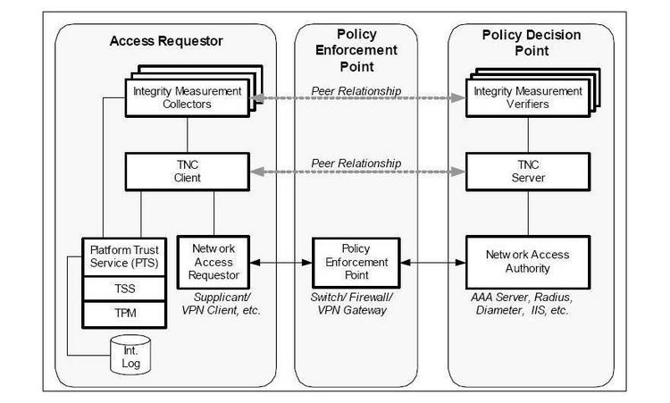
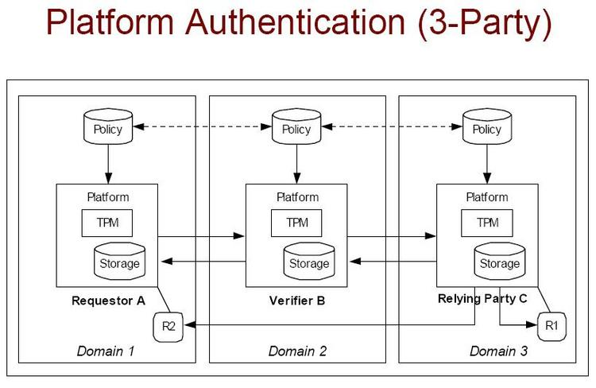

I've been trying in vain to do something very simple, but have been unable
to find the answer via excessive googling, so I'm hoping someone here can
point me in the right direction.
I am trying to configure my system so that I can utilise the TVout on my
graphics card. I want to be able to display to the TV while still
retaining use of the desktop via a CRT. Eventually I intend to run
MythTV on the TV screen (mainly for the movie and ogg playing
capabilities).
To this end I don't want KDE to bother running a window manager & desktop
on the TV screen. I have setup X such that I have :0.0 and :0.1 display
devices, with :0.1 being the TVout screen. Unfortunately I end up with a
KDE desktop on the TVout, along with my usual KDE desktop on the CRT.
I can successfully run a movie on the TV screen using -
$ DISPLAY=:0.1 vlc -f --video-on-top ./movie.avi
However, if I then try and run something on the CRT it steals the focus
from the vlc display on the TV (which in itself wouldn't be a huge
problem if the KDE panel didn't then put itself to the front on the TV
screen).
The only hint at a solution I've managed to find indicates that I /must/
run two instances of X, one for each screen, if I want to solve the
problem. However, another person has managed to do this with one
instance of X (with MythTV on the TV) but runs WindowMaker as their WM,
which accepts a -display parameter when run so it limits itself to :0.0
I've managed to muddle through getting all the really nasty stuff
working...
OpenLDAP works
OpenLDAP directory contains appropriate user entries
Users can authenticate through PAM against their OpenLDAP records (and I can even control what they can log into using the authorizedService attribute, so, some users get FTP, some get SSH, some get SMTP, some IMAP, etc.)
Anyhow, I'm down to one thing I need to make work that isn't.
I need to get Apache (2.0.53, Fedora Core 3) to authenticate
users against LDAP. I think I know how to make the Apache
queries work and query the right things from the LDAP server
and such, but, here's the rub:
Apache LDAP support is divided into two parts. mod_auth_ldap which
seems pretty straightforward (at least after dealing with everything
else), and, mod_ldap (which unlike the rest of apache modules is
util_ldap.c instead of mod_ldap.c WHEE!!).
My problem is that mod_ldap is refusing to make SSL connections to the
LDAP server, and, my LDAP server (deliberately) won't allow
authenticated binds using cleartext passwords without SSL.
Any ideas how to make this all work together or know anyone who knows
this stuff cold and could help me?
Thanks,
Time passes, this is pretty late in the month that it was sent, one
TAG member offers a little bit of aid, but...
I got some help from an openLDAP list finally... I was able to make
the dynamic group thing work. (Just got it working last night).
The 24th, on the edge of our TAG deadline.
-- Heather
Thanks for your assistance.
I wasn't able to get sets working (if anyone knows appropriate set
voodoo, please feel free to contact me off-line and I'll share what
I learn)...
However, for dynamic groups, I was able to create the following group:
Hope this is enough to be useful as a short blurb. Much more useful
full information coming (hopefully) soon.
Owen
If you're an LDAP user with an answer to the remaining part of his
puzzle - and not already involved with his thread on the OpenLDAP
mailing list... by all means drop him a line!
Otherwise, look forward to what chef Owen's been cooking up, next month.
Please also feel welcome to join us in IRC on #moin at freenode.
irc.debian.org, the default destination of IRC clients in debian, also goes
to freenode. Your distro may vary. MoinMoin is a python based wiki package
with themes, access control lists, and other antispam abilities.
-- Heather
I've been seeing happy cross references from the FvwmForums about
the articles our 'zine has about FVWM. Since the Forums themselves
have an unusual URL:
/dev/hda1 contains a file bootsec.lin which is a copy.
dd if=/dev/hda8 bs=512 count=1 of=/boot/bootsec.lin
cp /boot/bootsec.lin/mnt/hda1/bootsec.lin=20
[...]
and running /sbin/lilo
results after a restart in: L 99 99 99 etc.
I think that the missing step is that you are not repeating the "dd"
and "cp" operations every time you run lilo. After running lilo, you
have to transfer again the first 512 bytes of /dev/hda8 to the file
bootsec.lin in /dev/hda.
If I may digress a little bit, I have to say that it is here where I
have found the greatest advantage between lilo and grub: this step is
not needed with grub.
On Sun, Feb 27, 2005 at 09:50:00AM -0500, Jim Doutt wrote:
to Phil Hughes of SSC, Inc, cc'ing our editorial
staff
Phil,
I am MOST distressed to hear you are trying to close down
linuxgazette.net by appropriating their name. The fact that you HOSTED
them awhile back gives you NO RIGHT to the name. And in fact you have
linuxgazette.com already.
I ENJOY reading BOTH linuxgazette.net, and my subscription to
"Linux Journal", to which I am a long-time subscriber (and bought the CD
of back issues). There is room for BOTH of you in this big world.
Please lay off linuxgazette.net. I'd hate to have to drop my
subscription to "Linux Journal" which I enjoy reading every month.
Jim Doutt
Jim -
Thank you very much for your support, and for restating our position
with regard to SSC's unwarranted attacks. Here at the Linux Gazette, we
believe that there is indeed room for both - and our actions have
consistently reflected that belief. SSC, via their hired guns, have
closed off all avenues for peaceful coexistence by their threats; we
shall simply continue to stand firm against their baseless accusations -
the law and the public sentiment happen to coincide in support of us.
Your support, and the support of all our readers who have written to us
in regard to the present situation, serves to underscore and reinforce
our determination to see this through. Thank you, Jim... thank you,
everyone.
Regards, * Ben Okopnik * Editor-in-Chief, Linux Gazette * http://linuxgazette.net *
We received many letters from readers and responded to
some directly. I believe this exchange was the best summary of how we feel.
Thank you, gentle readers, thank you all. -- Heather
This page edited and maintained by the Editors of Linux Gazette HTML script maintained by Heather Stern of Starshine Technical Services, http://www.starshine.org/
16:10 * billp_ makes a hasty sendmail change to allow unresolvable domains
16:19 * billp_ goes back to default sendmail behavior
16:40 < billp_>
editorgal : do you know how to tweak sendmail & fetchmail so
that it accepts everything? I seem to have got to the point
where every few spams jams fetchmail before it can be handed
over to my local spamassasin
16:41 < billp_>
I get these timeouts:
16:41 < billp_>
SMTP error: 451 4.1.8 Domain of sender address
acetylene3@twobusbone.com does not resolve
16:41 < billp_>
not flushed
16:41 < billp_>
fetchmail: client/server protocol error while fetching from
localhost
16:41 < billp_>
fetchmail: Query status=4 (PROTOCOL)
16:41 * billp_ googles some more
16:42 <@editorgal>
fetchmail retreives from pop so it'll take anything you say
16:43 <@editorgal>
I always use a command line that forces things to be forced
16:43 < billp_>
Spam is jamming it dead at the moment - forcing me to ssh into
16:43 < billp_>
the hosting comany every 20
emails to manually delete one
16:44 <@editorgal>
fetchmail -v -a -m "/usr/bin/procmail -f -
/home/heather/.procmailrc"
16:46 < billp_>
So through procmail before the MTA?
16:46 <@editorgal>
I'm telling fetchmail to not try any funny business, do
it my way
16:47 <@editorgal>
that my way includes procmail directly skips the local MTA
16:47 * billp_ tries the same
16:58 < billp_>
Well done :D
16:58 < billp_>
It must have been sendmail waiting so long for DNS lookups for
16:58 < billp_>
non-existant domains that the pop server was timing out
16:59 <@editorgal>
yes and the pop being elsewhere, that's harder to control
17:00 <@editorgal>
it having accepted the mail at the spool there, any 'damage'
considered of storing it has already been done.
17:01 < billp_>
yes - and much more damage was being done by sendmail
timewasting tactics when in fact it takes hardly any time at
all to chuck once accepted
17:02 < billp_>
Superb editorgal :D This has been an irritant for ages
Anyway - got a 2-cent tip for you. I sent this one in to Mike ages ago, but searching for it in LG doesn't show anything.
One of the things I'd found when experimenting with RedHat is that their "apropos" utility seems to be just an
alias for "man -k", i.e., does not allow wildcard searches via "apropos -w". Since "apropos -w" was something I
found very useful in my early days of learning Linux, I decided to write a script that would be an even
friendler, more helpful version of "whatis" and "apropos -w" combined. I called it "howto"- and I still use it
on occasion, simply because it's a fun way to find info (and get hooked into checking out other interesting
things!). The syntax for it is very simple - just type
howto wipe out alien civilizations and make killer cheesecake
If there's anything that's available on the topic, or any of the keywords, you'll find it...
RedHat users note: your installation procedure does not automatically create the "whatis" database (or for that
matter, even the "mandb" database) which is required by this script - and by "whatis". See the manpage for
"man" and "whatis" for further info.
Wiping out alien civilizations and making killer cheesecake are definitely knowledge that should be propagated.
(are things? is knowledge? Damn this slippery language and its referents!)
Exporting a del.icio.us feed to a Netscape bookmark file
This didn't fit in with my article
(http://linuxgazette.net/110/oregan1.html), but it's still cool. It
dumps your del.icio.us feed into a Netscape compatible bookmarks file.
When you have problems booting Linux from DOS, you also have to look
in which mode you are using DOS: with or without HIMEM.SYS loaded,
with or without EMM/QEMM/EMM386 loaded, with or without a swap file,
with or without a disk cache or a memory disk (VDISK) loaded.
you have there a GPL bootloader which works from a lot of DOS
configurations (probably all of them) - and if you have problems,
its debug executable (dbgload.exe, dbgdisk.exe, dbgfs.exe...) create
a file named DBG which explains what did wrong.
You have precompiled loader (interactive and command line version) at:
You may not want to install it as the master boot record (MBR) of your
hard disk in its own managed partition (partition protected by setting
the IDE max address of the hard disk) if you are using an older 2.4
Linux kernel because those kernel had a bug where, when the IDE max
address is set, the Linux IDE system thinks the disk has 1 (i.e. one)
sector (i.e. the total size of the hard disk is then believed to be
512 bytes - that is a bug).
Note that I have never seen a case where - if a problem appear
following a hard disk install - the uninstall checkbox on the menu
did not perfectly work and restore a perfect system, at least since v0.8.
Version 0.9 is needed for newer 2.6 Linux kernels.
Etienne.
Linux mail and HTML
Haim Kalderon (HaimK from sitqad.co.il)
Question by (ben-fuzzybear from yahoo.com)
Answered By Brian Bilbrey
I'm now moving major application from Windows to Linux server.
The application used blat mailing software.
Until here no problem, because I can work with Linux mail instead.
But the Windows blat had a flag to send mail in html format... maybe you
know of an equivalent to send mails from Linux using the mail command?
Appreciate your help,
Haim
[Brian]
Hello Haim,
Create a text file that contains your email. It should look like an
email message, with headers on individual lines, etc:
To: you@example.com
From: me@example.com
Reply-To: me-too@example.com
Subject: Test HTML message
Make sure that one of headers is Content-Type, like this:
Content-Type: text/html; charset="us-ascii"
That tells the email client to render the text stream that it receives
as HTML. Note that there are many options for charset - use the one
that's appropriate for your target audience (common alternatives are the
ISO-8859-n charsets). Also note that it doesn't help you when receivers
of the email explicitly don't parse HTML mail, or have filters that
preferentially mark HTML email as likely spam. But, ranting aside, we
continue...
Then in the body of your email,
<html>
[your content]
</html>
All of that is in a text file (or composed on the fly by your
application), either way, redirected into the sendmail binary for mailing:
sendmail you@example.com < sample_message.htm
[Brian]
> To:
> <ben-fuzzybear@yahoo.com>
Ben FuzzyBear, eh? Is that your Animist Native American / Aleut moniker?
[Ben]
Old nickname coined by an x-gf due to a number of my bear-like
characteristics - mostly my hairy chest and my ability to substitute for
a room heater or an electric blanket... but 'twas long ago, far away,
and the account is essentially dead.
Converting Mailman's text archives to mbox
Benjamin A. Okopnik (ben from linuxgazette.net)
Question by The Linux Gang , Heather , (star from starshine.org)
This was true of our mailman, which is a rather basic configuration at
the time this tip was put together, so it should do just as well for anyone
else who hasn't indulged in heavy modifications to mailman. Ah, python...
-- Heather
Is the archive tarball not in mbox format? I'm writing this off-line
so I can't check, but let me know if it's not - I've done header
mangling before, specifically converting some weird format into mbox, so
I'll happily fold, spindle, and mutilate those poor emails as necessary.
[Jimmy]
The list archives are available as text (so close to mbox format that
you really have to wonder why they bothered using anything else), or as
HTML. Mailman does keep mboxes of its archives, but those are private -
you should have no problem grabbing it though.
Got'em. Seems that the mods are pretty basic; passing it through a
couple of simple regexes -
gzip -dc 2004-December.txt.gz|perl -0 -wpe's/^(From [^\s]+) at /\n$1\@/gsm;s/^\n//s' > mail.box
cures the disparity.
This page edited and maintained by the Editors of Linux Gazette HTML script maintained by Heather Stern of Starshine Technical Services, http://www.starshine.org/
The Answer Gang
Linux Gazette 112: The Answer Gang (TWDT)The Answer Gang 112:
...making Linux just a little more fun!
The Answer Gang By Jim Dennis, Jason Creighton, Chris G, Karl-Heinz, and...
(meet the Gang) ...
the Editors of Linux Gazette...
and
You!
We have guidelines for asking and answering questions. Linux questions only, please.
We make no guarantees about answers, but you can be anonymous on request. See also: The Answer Gang's
Knowledge Base
and the LGSearch Engine
hello, and greetings once again to the world of The Answer Gang. I'm sure
some of you are wondering why we're so late - fact is, we actually managed
to get some of us together for lunch, having had the odd chance of being
close enough in the same state to drive the rest of the intervening
distance.
Real Life also has its interventions. Not all bad - but the timing, well,
that can be.
I'm pleased to say one of my own interruptions of the outer world here
probably won't bore you to death -- and now it's revealed...
Running an internet lounge
For fun and profit? Fun, absolutely! Profit, um, no. My Star Trek
Crew (http://trek.starshine.org) runs an internet lounge at a handful
of science fiction conventions around here, and we either bring our own
older and not-so-valued equipment, or we use whatever is donated. These
being the old grey mares of the computing world, it's inevitable - so
far at least one monitor or computer has gone on the fritz each time.
The one time we thought we were unscathed, a monitor died near the end,
it was wellll.... sort of usable... we shut it off. Within the span of an
hour it got so bad the working blind really was better, or you be a
candidate for blinux afterwards.
The most spectacular failure was a power supply glitch, all the magic smoke
leaked out, luckily it didn't incite anything else. California has this
no-smoking indoors policy you see...
The first of these lounges fit Battlestar Galactica more than Star Trek - a
rag tag fugitive fleet, some can jump to light speed, and some, well, they
can't. What distro, I hear you ask! Well, since different members of my
crew - and a neighboring LUG - provided setups, we had:
some Sparcs running debian
about 6 PCs running Mandrake
10 PCs running some form of Red Hat, kickstarted
maybe 4 more PCs running some debian or other
the token, err, talking BORG - as recommended by a blind friend of mine.
people brought their laptops of course.
We've not run nearly so large a lounge since. 6 or 10 machines total is
more like it.
That was a pretty big conference, and people enjoyed the variety. I was
surprised at why a particularly slow Sparc was enjoying such popularity, but
apparently it had the best selection of chat clients...
There's the key. If you want to run a netlounge, know your audience, and
give them what they want. In my experience, they mostly care very little
about the OS. What they want are features:
GOOD web browsers, so their webmail and blog sites won't turn them away.
Chat, oboy do these people like chat clients.
SSH for the geekier souls, we've gotta get our email, and/or, we have to
solve someone's problem at the most inopportune moment.
Being able to play sounds and run videos is certainly appealing.
Alas, with so much of the web being "live content" you should at least
make an effort to support flash and shockwave. Java would be nice too.
Some do want a word processor, although in retrospect, a friendly enough
text editor such as Nedit will serve many of them. Printer's a good idea to
go with this...
Games? well, okay, maybe some games. I recommend PySol. Add it if your distro didn't put it in. Even the deepest windows fan warms to PySol ... so far.
If you're going to offer sound, xmms and Mplayer rock. literally. Beware
that the plugins above may make the browsers cranky about embedded video.
They want to get at things too. Handicapped access, icons NON geeks can
figure out (or else a big ol' icon map on the wall for this number one FAQ,
where's the $whatsit ) and room to scootch the chairs around (yeah, a
technical term). In other words, make sure there's some lounge in your
net lounge.
In earlier lounges the word processor was not really a big hit. The glitz
was too good too early, abiword felt right, then crashed at the worst
moments. It's better now - but some people have a rotten opinion of it :(
StarOffice did better - but needs a machine with some oooooooooomph. Java...
Live CDs really made the thing take off nicely. Now if the cords would
learn to telekinese themselves.... or the computers all came with wheels
like luggage... mmmmmm case mods. Yummmmm. (No I haven't done it. But
it's a thought.) We've been using Knoppix in the last few lounges,
customizing it with our own art. We might try ubuntu, too.
Make sure you've enough people, that they stay fed so they aren't cranky,
that they occasionally get to run off and do other things (eyestrain makes
people cranky too). Your silicate lifeforms will be easier to keep happy
when Murphy's Law isn't able to get your goat when it strikes.... because
troubleshooting that fist through the case would be much easier, but,
umm, that's not the kind of disk first aid I had in mind!
Plan that setup and teardown will take double the time it takes to setup and
teardown in the otherwise perfect conditions of your geeky home. Those
cords get tangled, the upstream DHCP looks askance at you, whatever. Expect
delays - just get the Express Lane up and have a wild guess at your
estimated full-service time. That solves desperation and hovering.
If the event is of any decent size, have an Extra Special Express Lane for
the people who make things happen. It'll make them feel like it's a special
benefit - and those moments when a piece of the event is about to suffer if
they can't find some important reading that happens to be online, will not
involve kicking someone off a machine who doesn't already kinda behind the
scenes already.
This weekend's convention will be a fun filled time of music and getting
together with good friends. Maybe a few will wish me a happy pre-dated
birthday. That's the scoop this month folks - above all else, have fun!
3C509B Does Not Work With Linux -- Problem Solved!
From Chris Gianakopoulos
Answered By: Mike Orr
Hi Gang,
I'm just sharing an experience with you. I've got Pentium 2 computers
with onboard audio these days.
I installed Linux using SuSE 8.2, and the ethernet would work sometimes
but mostly, the card did not get recognized. The card is a 3C509B ISA
card. At first, I thought that I zapped the ISA slot in my motherboards
(yea -- two of them) because the card would work on my trusty Pentium
Pro computer.
What was interesting was that if I installed Windows 2000 in the Pentium
2 system, the NIC worked flawlessly! Okay, now I knew that it was not
hardware. I just gave up for a while.
During the holidays (December), I reinstalled Linux on the Pentium 2
system. This time, I decided to get the thing to work. Playing around
with the PNP tools, I saw that candidate resources for my onboard audio
(MPU-401 to be specific) was either 0x300 or 0x330. Looking at
/proc/ioports, I saw that 0x300 was chosen for the I/O port.
I rebooted the system and disabled the onboard audio via the BIOS setup.
Of course, my Ethernet then worked. Looking at /proc/ioports, I asw
that 0x300 (my favorite addresses of course) was allocated to the NIC.
I went ahead and reenabled the onboard audio, thus causing failure of
the Ethernet again. I used YaST (SuSE's setup tool), and manually
allocated 0x330 to the MPU-401 port, and the Ethernet worked flawlessly.
Problem solved!
This was my first exposure to plug and play hardware when using Linux.
Plug and play was disabled on the 3C509 as recomended in the older days,
and the audio hardware was allocated my sacred I/O address. As I can
see /proc has lots of useful stuff, but, this is the first time that I
had to use it to troubleshoot a problem. Cool and fun.
[Sluggo]
I used to install 3C509B cards at a hospital. We always disabled plug &
play and set the base address using the DOS utility on the floppy. We
used 0x300 by default, or 0x220 if there was a conflict.
Yea, Ben O. mentioned the lower numbered addresses too (e.g. 0x220). I
use those for NE2000 type of cards -- for some reason, I got attached to
0x300 from my 3C503 days. (I still use coax these days -- no hubs....).
Obscure LILO problem, 1-5 minute LILO delay upon bootup.
From Justin Piszcz
Answered By: John Karns, Heather Stern.
Hi,
I am running Debian Sarge and previously migrated my root drive from a
8.4GB to a 40GB then to a 61.4GB now to a 250GB disk.
I always use tar to transfer one file system to the other and then chroot,
edit lilo and fstab and then re-run lilo.
For the:
8.4GB -> 40GB
40GB -> 60GB
I never had any issue.
However, with the 60GB -> 250GB drive, I did everything the same and at
the LILO prompt or "LIL" I should say, it sits there for about 1-5 minutes
and then says Loading Linux... BIOS something for about another 60 seconds
and THEN finally loads. Does anyone know what is up with this 5-6 minute
delay to load Linux?
[John]
Did you check the system logs to see if the message appears there?
All drives have been on the same promise controller, ATA/133, which has 48
bit addressing so there is no issue with the drive size being > 128GB.
[John]
You don't specify the model of the controller, nor anything about the
kernel you're using: stock kernel? Custom compiled? If custom, is the
ide controller driver statically linked, or being loaded as an (initrd)
module? ... etc.
The controller is a Promise 20269 ATA/133 controller, it is
custom-compilied; statically linked into the kernel.
I believe it is a LILO problem as the LILO menu/etc has problems loading
even before it touches the kernel.
Also, the /boot is the first 128MB of the drive, then swap, then root.
[John]
I'm not sure about the present state of ide booting requirements, but it
used to be that the important factor was the cylinder number, which is
related to, but not the same as, the size (in MB) of the boot partition,
depending on the data densityof the drive. With the older drives, the
relation ship was linear, as in N sectors per cylinder. That is no longer
the case however, with many / most / all of the more current generations
of hdd's.
I have also tried adding lba32 to lilo.conf && re-running lilo but this
made no difference.
The weird part is it boots (after a 4-6min delay).. but it does boot. If
there were a serious geometry/disk/issue one would think it would boot or
fail, not have a delay and then work.
[Heather]
Given the sizes in question I'll place my bets on 48-bit IDE support being
the culprit, though not on the exact mechanism of the misbehavior.
samba share folders
From jpshark
Answered By: Brian Bilbrey, John Karns, Suramya Tomar
hello, perhaps you could answer a simple question for me. i have a home
network with 2 linux boxes and 2 WinXP boxes. all 4 computers are set
with the same workgroup - the linux boxes use samba. i can access the
windows boxes from the linux boxes no problem. when I try to access the
linux boxes from the windows boxes, i get prompted for a user name and
password.
[Brian]
You need to setup users and passwords explicitly for Samba, these are
stored and sometimes administered separately from the Unix accounts.
$ man smbpasswd
for more details.
if i try the normal user name and passwords, windows resets
the dialog box and prefixes the user name with the name of the computer.
of course, this does not work. how do i access a linux box running samba
from a windows box running XP? also, i haven't figured out how to mark a
folder as "shared" in linux. thanks for any help.
regards,
jp
[Brian]
You need to configure directories that are shared in your systems
smb.conf. You will want to read the smb.conf files on your system, both
the running one (often found in /etc/samba/smb.conf) as well as any
example smb.conf files that are found with the Samba documentation. And
of course,
$ man smb.conf
[John]
As with most aspects of unix-like OS's, there is more than one way to
configure samba. In fact samba comes with a utility called 'swat', but
I've never used it, so I can't really say much about it. However, most
Linux distros these days do a pretty decent job of providing a template
configuration file that you can edit to add / change what you need without
too much work. You will need to have a text editor installed, and know
how to use it.
Depending on the distro that you have, the samba configuration file will
likely be found as either /etc/smb.conf or /etc/samba/smb.conf. "locate
smb.conf" might be of use to you, assuming that the "updatedb" utility has
been run on your system. To run the following command(s) and edit the
samba configuration, will need to login as root.
Usually, to get samba to allow connections from the outside world, you
need to add the user and password manually, using the utility samba
provides. To add a new user account, e.g., "john", type "smbpasswd -a
john". The "-a" is for "add". "man smbpasswd" for details. You will be
prompted for the password. If you duplicate the same username and
password as you use on the windoze side, then you won't be prompted for
a username and password when you want to access a samba share.
You designate a folder share by entering some parameters into the
smb.conf. For example. lets say that I have a dual-boot machine, and I
mount the 'blows partition under /dosC. I could add a stanza to smb.conf
such as the following:
[dosc]
comment = W2k - vfat
browseable = yes
read only = Yes
path = /dosC
valid users = john
guest ok = no
printable = no
Samba gives a fine degree of control by providing lots of parameters. Any
parameters not specified for a share assume defaults which samba will
provide. Usually the defaults for a share are such that you won't need to
provide more than a handful of parameters. "man smb.conf" will give you
lots of info about them. One thing perhaps worth noting is that many of
the parameters have one or more synonomous "twin" parameters, so there
aren't quite as many as there may seem at first, as there are "duplicates"
After making changes to smb.conf, it may be expedient to restart the smb
daemon. There are actually two daemons, but they might both be handled in
just one init script.
/etc/init.d/smb restart
and
/etc/init.d/nmb restart
should suffice in any case.
That will hopefully be enough to get you started. There's lots of info
out there on the 'net about samba too. Google is your friend.
To share a folder using Samba in Linux you need to edit the smb.conf
file. On my computer it is located in the /etc/samba folder.
You need to add the following lines to the file for each of the
directories you want to share:
[ShareName]
writeable = yes
valid users = suramya
user = suramya
path = /home/suramya
write list = suramya
The path is the directory you want to share. ShareName is the name you
want to call it. Valid users tells the system which users are allowed to
access this share. To create a readonly share remove the writable=yes tag.
Use the smbpasswd command to set the user password for samba share.
There is a way to have it sync the password with the linux password file
but I could never get that to work
Submitters, send your News Bytes items in
PLAIN TEXT
format. Other formats may be rejected without reading. You have been
warned! A one- or two-paragraph summary plus URL gets you a better
announcement than an entire press release. Submit items to
bytes@lists.linuxgazette.net
Legislation and More Legislation
European Software Patents
The proposed European Union directive on the patentability
of computer-implemented inventions (software patents
directive) has moved a step closer to adoption.
As reported last month, there was a strong push from the European Parliament,
and from some national governments (notably Poland) to restart the legislative
process that is targeted at regularising the basis for software patents in
Europe. Currently the European Patent Office is demonstrating a tacit
acceptance of software patents. This is in spite of an official framework that
has traditionally been interpreted as prohibiting the granting of patents for
software implemented inventions. Many leading individuals and organisations
involved in Free and Open Source Software
believe that software patents are
not a good way to drive innovation. Meanwhile, other vested interests see
their future in the creation of large stockpiles of patents that threaten to
bog down the software industry in a defensive/offensive patents stand-off. The
formula that will finally be adopted by the EU with regard to this issue will
have profound implications for innovation and economic flexibility throughout
Europe.
As matters stood last month, those opposed to the pro-software-patent directive
proposed by the European Commission were hoping that the Parliament
JURI committee
would recommend a restart of this legislative process. Such a restart
would provide an opportunity to re-examine the whole concept of software
patenting, and strengthen the European Parliament's hand with regard to applying
the restrictions on software patents it proposed earlier in this process.
In a continuation of the support the anti-patent lobby has received in
Parliament, the
JURI committee did indeed recommend such a restart, much to the
appreciation of groups such as the FFII.
Unfortunately, as welcome as this move is, the JURI committee, and Parliament,
cannot enforce such decisions. Against this background, the Commission has
decided to push ahead regardless, and move the hotly contested directive
closer to final adoption. FFII has
reported that this reluctance to restart stems from an awareness in the
Directorate General for the Internal Market, currently headed by Irishman
Charlie McCreevy, (a refugee from a particularly ruthless backstabbing in Irish
domestic politics) that any revised directive would
likely take a very different shape to that currently on the table.
Though some legitimate questions may be asked about McCreevy's politics and
closeness to vested interests, such enquiries have been tainted by
rather intemperate, prejudiced, and simple minded outbursts
by at least one prominent anti-patent campaigner who is apparently ignorant of
the dangers of scapegoating minority ethnic or national groups for the ills of
society.
The next outing for this directive will be on the 7th of March when there is a
meeting of the Competition Council. For EU citizens, lobbying of your national
representative on this panel may still be a worthwhile endeavour.
Useful sites for those opposed to software patents:
Slashdot has reported that
Eben Moglen
is
planning an upgrade for the GPL.
The linked
eWeek article
outlines some of the issues that are being borne in mind. A lot of emphasis is
placed on balancing the interests of all interested parties, even down to
choosing language that can be easily and unambiguously translated for use in
disparate countries across the world.
As always, you should download kernels and patches from your
nearest mirror.
Distro News
BeatrIX
BeatrIX Linux
is a free, compact (Less than 200 megabytes), operating system aimed at both
office and home users. It will operate on most IBM-compatible PCs manufactured
in the past 10 years, and can be run as a live CD or it can be installed to hard
drive.
You can see a
screen-shot tour of BeatrIX
at OSDir.com, and read
a review at Linux Times.net.
VidaLinux
is a Gentoo-based distribution that incorporates a number of
precompiled applications and a graphical installer (Red Hat's Anaconda).
You can read
a review of VidaLinux 1.1 at Mad Penguin.
Internet telephony software publisher
Skype has launched
Linux and OSX versions of its widely used communications software.
Apache
The Apache Software Foundation and The Apache HTTP Server Project have
announced the release of version 2.0.53 of the Apache HTTP Server ("Apache").
This release is compatible with modules compiled for 2.0.42 and
later versions. Apache HTTP Server 2.0.53 is available for download from
http://httpd.apache.org/download.cgi.
Linux Server Security
O'Reilly has released a new edition of its book
Linux Server Security.
The book covers a wide range of GNU/Linux security issues.
For an overview, you can consult
the table of contents.
Mick is LG's News Bytes Editor.
Originally hailing from Ireland, Michael is currently living in Baden,
Switzerland. There he works with ABB Corporate Research as a
Marie-Curie fellow, developing software for the simulation and design
of electrical power-systems equipment.
Before this, Michael worked as a lecturer in the Department of
Mechanical Engineering, University College Dublin; the same
institution that awarded him his PhD. The topic of this PhD research
was the use of Lamb waves in nondestructive testing. GNU/Linux has
been very useful in his past work, and Michael has a strong interest
in applying free software solutions to other problems in engineering.
Part computer programmer, part cartoonist, part Mars Bar. At night, he runs
around in a pair of colorful tights fighting criminals. During the day... well,
he just runs around. He eats when he's hungry and sleeps when he's sleepy.
Recently, I have been playing chess on FICS, a free service that uses the ICS
(Internet Chess Server) protocol. ICS is a telnet protocol, so you
can "telnet freechess.org 5000", login, and play with an ASCII
chess board if you want Here is what FICS output looks like: (I
made up most of this output as an example, but the actual output is
in the same format.)
fics%
Example shouts: This is an example shout
fics%
--> Example of using the "it" command...like /me in IRC.
fics%
Example(50): This is a chat message on channel 50.
fics%
Example (1436) seeking 15 13 rated standard f ("play 61" to respond)
fics% obs 21
You are now observing game 21.
Game 21: GMKasparov (2804) GMAdams (2741) unrated standard 120 0
Game 21 (GMKasparov vs. GMAdams)
---------------------------------
8 | *K| | | | *R| | | | Move # : 29 (White)
|---+---+---+---+---+---+---+---|
7 | | *P| | | | Q | | | Black Moves : 'hxg5 (0:00)'
|---+---+---+---+---+---+---+---|
6 | *P| | | | | | | |
|---+---+---+---+---+---+---+---|
5 | | *Q| | | | | *P| | Black Clock : 43:48
|---+---+---+---+---+---+---+---|
4 | | | | | | | | | White Clock : 1:06:43
|---+---+---+---+---+---+---+---|
3 | P | | | | | P | | | Black Strength : 17
|---+---+---+---+---+---+---+---|
2 | | P | | | | | P | | White Strength : 18
|---+---+---+---+---+---+---+---|
1 | | K | | | | | | R |
---------------------------------
a b c d e f g h
fics%
Now, you could play chess this way, if you don't mind using an
ASCII chess board and entering all your moves manually, but most
people use an interface program to provide them with a graphical
chess board. I use XBoard for my
graphical interface, which
provides a nice board, but it directly passes the ICS output to
stdin, and sends its stdout to the ICS. That is to say, you start
xboard in an xterm, and it's almost as if you'd used telnet to
connect except you have a graphical chess board. This isn't so bad,
except:
The server will output a line while you are in the middle of
typing something, so that half of your message ends up on one line
and half on another This can be confusing and difficult to
use.
Those fics% prompts waste a lot of space. (Up to half
of the lines on the terminal.)
Irssi is the IRC client I use. Well, it's mostly an IRC client.
There are modules for other protocols, such as ICQ.
I thought I could run XBoard in an Irssi window, filter out the
prompts, and have more fun. It's possible, you just have to tweak
things a little.
Configuring FICS
One problem with playing on FICS this way is that FICS will send a bell
(i. e., the ASCII BEL character) when the board is updated, letting you
know it's your move. However, they are sent without a newline, and since
Irssi's exec module will only print complete lines, you don't hear the bell
until the next newline, which could be with, for example, a chat message,
which will come an indeterminate amount of time after the BEL is sent. So
it's best to turn off bells on the FICS side with this command:
set bell off
This tells FICS not to send BEL characters on every board
update.
Configuring XBoard
Having turned off server-side alerts, you probably want to hear
some sort of sound when the opponent moves, but since just ringing
the terminal bell won't work, you'll have to use a sound file. Here
are my settings for XBoard in my .Xresources file:
The above configuration (among other things) sets "fanfare.wav"
to be played when the opponent moves and "bridge2.wav" to be played
on either a "Challenge" (When you're challenged on ICS) or a
"Request" (A request for something: draw, abort, adjourn, takeback,
etc.) Note that, in order for XBoard to heed "soundMove",
"ringBellAfterMoves" must be on.
Your configuration will differ, of course, and XBoard has scads
of options, so please refer to the 'xboard' man page for a full list
of supported sound events. (Among other things.)
When giving the names of sound files, you can also specify "$"
as a filename to have XBoard emit a BEL character for that event.
This is, of course, totally useless for the "soundMove" event for
reasons discussed earlier, but every other event that XBoard sees
involves something being printed, and thus Irssi will see the BEL
in a timely manner.
Note that, in order for the ICS-related sound events to work,
you must have 'colorizeMessages' enabled.
If you don't have some handy sound bites laying around, google
for "free sound files". Just be careful not to spend too much time
searching for suitable sounds, browsing site after site, staying up
all night, with your skeletal frame leaning limply against your
chair, the flickering light of your monitor casting a pale glow on
your bloodshot eyes, your mailbox overflowing as your quest causes
you to totally withdraw from society, becoming a sad, pathetic
little vegetable whose only joy in life is finding those perfect
sounds for every possible event.
Well, probably not, but you can spend a lot of time on it.
:-)
Configuring Irssi
Irssi doesn't really require much tweaking. If you have XBoard
beeping (i. e., you've specified "$" for one or more of XBoard's
sounds), you'll want to "/set bell_beeps on" in order to have Irssi
not ignore any BEL characters it sees. This is the alias I use:
/alias xboard window new hide; window name xboard; exec -name xboard -window -interactive \
xboard -ics -sgf ~/chess/fics.pgn | sed --unbuffered 's/^fics% //\;T\;/^\$/d'
Note that, in the alias, we have to quote ";" and "$", because those
characters have special importance to Irssi. XBoard is started in ICS mode,
appending any games played to ~/chess/fics.pgn. The 'sed'
command (which filters out the FICS prompt) is a little more complex, so
I'll take the easy way out and not attempt to explain it in detail. The
irrepressibly curious can refer to the 'sed' man page.
And that's all there is to it. You could, of course, use a
different ICS interface such as eboard, but I prefer XBoard,
and this configuration works for me.
I have used "FICS" to refer to the chess server throughout this
article because that's what I use, but this should work with most
any ICS, provided you modify the 'sed' incantation appropriately.
Jason is a high school student who installed his first distribution,
Slackware, in late 2002. Since then, he's joined the Answer Gang,
switched to CRUX and still can't seem to see an interesting piece of
technology without wondering how it works, and, in those rare cases when
it actually belongs to him or someone foolish enough to lend it,
tinkering endlessly with it.
RSA 2005 Conference and Expo, San Francisco - Special Report
More than crypto systems and algorithms, the RSA conference and expo
has become a premier showcase of the full spectrum of security products and
concerns in this era of every more insecure computing.
This reflects growing in interest for security products at government
and businesses everywhere. More attendees [about 13000] and more
exhibitors were on-hand than ever before [over 275 companies and
organizations before the conference started] for this 14th
annual RSA conference.
And one trend more than any other may offer some respite from the
growing tsunami of malware and identity theft: Trusted Computing.
The specifications developed over the last few years by the Trusted
Computing Group [TCG] are now starting to implemented by major PC and
software firms, most significantly motherboard crypto for PCs and notebooks
from HP and IBM that identify users prior to bootup. Follow this link for
the TGC presentations at RSA2005 [first 3 items]:
An emerging standard for Trusted Computing is a 'Trusted Platform',
which will relay on a cryptographically secured module to hold identity
information, certificates and secret keys that can be verified and
exchanged in a trusted computing environment. These modules, or TPMs, are
now available as is new software for identity management and attesting to
the integrity of the underlying computing platform. There are also
software versions of TPMs, some open source, that are able to play in a
trusted environment, although they are less secure than hardware TP
modules. See http://www.infsec.ethz.ch/people/psevinc/.
Here is a trusted computing network verification diagram:

and, at a network level,Trusted Network Connection [TNC]:

Anti-spyware products are becoming almost as ubiquitous as anti-virus
software. Almost all anti-virus, anti-worm vendors were adding or
incorporating anti-spyware modules in their product lines. Symantec will
be adding this as a feature to existing products while McAfee will be
offering an anti-spyware additional module to its enterprise offerings.
Phishing was also a topic at many vendor presentations, even though
this was largely referred as a social engineering attack. The Identity
Management companies tried to link phishing with ID mgt, but generally
required end-to-end use of their products. That long view of security gives
birth to another TLA - UTM or "unified threat management" as Symantec CEO
John Thomson called in his keynote.
Also there were renewed efforts to work together on an industry level.
A rare partnership between government and industry resulted in the
Common Vulnerability Scoring System (CVSS), unveiled at the RSA Conference
by the National Infrastructure Advisory Council
[NIAC, a part of the U.S. Department of Homeland
Security] and leading vendors like Cisco, Ebay, Microsoft, and Symantec.
This new and ambitious system aims to provide a common descriptive
language and standardized formula for reporting and assessing computer
security vulnerabilities and issues, instead of varying and confusing
vendor-specific ratings.
CVSS, which is partly related to Mitre Corp.'s CVE rating system, helps
prioritize software vulnerabilities both for ISVs and for enterprise users,
calculating the risk by considering the number of systems involved, the
type of exploit required, and if a software patch is available.
Three major security and auditing groups announced the formation of a
cooperative alliance to create better security policies and legislation and
to better work with security professionals throughout the industry. These
were the ASIS International, the ISACA (Information Systems Audit and
Control Association) and ISSA (Information Systems Security Association).
The groups will also work together to define certification and training
requirements for the Chief Security Officer (CSO) role and other
security-related positions in industry.
And Microsoft introduced its Microsoft Security Resource Center team at
its booth where security issues could be addressed. This was mostly a
customer feedback exercise and an attempt to raise the profile of the MSRC,
which also ran a blog for the length of the conference. It ties into the
TechNet security pages, [Finally, links for tools and patches.]
Underscoring the new Microsoft security initiatives, Bill Gates
delivered the show's opening keynote address on Monday. It highlighted new
Microsoft security products, including their enhanced 'Internet security
and acceleration' [ISA] server and future identity management products, and
touted a new version of Internet Explorer by this summer - but only
for Win XP users.
Microsoft was a platinum sponsor and had about 100 employees at the
show. Besides a large booth with a presentation area, there was a separate
expo area where attendees could get 'hands-on' test experience with
Microsoft security products and tools.
[After the RSA Conference, Gartner Corp analyst Neil MacDonald posted
a critique of the latest MS security offerings, rejecting the incremental
approach they are taking rather than a fundamental architectural change,
particularly with its IE web browser. See:
Also in the critique: "The decision to restrict IE 7.0 to the XP
platform also suggests that Microsoft wants to force users of older
platforms to upgrade if they want improved security." ]
This and all other major keynotes are replayable [after RSA webcast
registration] at:
Conference sessions were held in the afternoons in 16 simultaneous
tracks, including two separate Hackers & Threats tracks, tracks for
developers and cryptographers, business tracks, and tracks for privacy,
web security, wireless and Identity & Access Management.
The Hacker Tracks definitely covered a lot of important ground and gave
pause to developers and security officers alike. One paper focused on that
old nemesis, SQL Injection, showing that it was still a major concern since
the old standard approach of hiding error messages or using generic problem
messages does not actually stop the hack.
The presentation, by Imperva's Ofer Maor, shows the
result of security testing on MySQL and all leading DBs using indirect
query tests to discover the number and type of data fields available to an
SQL injection attack. These so-called 'blind' injection techniques only
take a little more effort but still yield confidential data.
For instance, even with hidden or generic error messages an attacker
could request additional fields above and below the actual number until
the correct number was determined and also check the data type one field at
a time until there was no error message or the target data emerged:
inject : ORDER BY 1 --
[and other numbers to get the right number of columns]
Assuming we get the number of columns, '4' here, and that we know a
valid acctnum, (AccNum=11223344), we can use the following
sequence with the the UNION SELECT clause to get the data types for the
columns:
11223344) UNION SELECT
NULL,NULL,NULL,NULL WHERE 1=2 -- No Error - Syntax is
right. MS SQL Server Used. Proceeding.
11223344) UNION SELECT
1,NULL,NULL,NULL WHERE 1=2 -- No Error - First column is
an integer.
11223344) UNION SELECT
1,2,NULL,NULL WHERE 1=2 -- Error! - Second column is not
an integer.
11223344) UNION SELECT
1,'2',NULL,NULL WHERE 1=2 -- No Error - Second column is a
string.
11223344) UNION SELECT
1,'2',3,NULL WHERE 1=2 -- Error! - Third column is not an
integer.
11223344) UNION SELECT
1,'2','3',NULL WHERE 1=2 -- No Error - Third column is a
string.
11223344) UNION SELECT
1,'2','3',4 WHERE 1=2 -- Error! - Fourth column is not an
integer.
11223344) UNION SELECT 1,'2','3','4' WHERE 1=2 -- No
Error - Fourth column is a string.
From this point an attacker can craft more specific queries to
get system tables and eventually get, for example, CCnum, SSnum and other
sensitive variables.
This and other presentations are available only to full conference
attendees but Imperva has several white papers on their website which were
the basis for RSA presentation:
Maor also discussed how signature-based security tools
could be thwarted by using other SQL tricks - concatenation, buried
comments and use of character values for instance - to camouflage the
injected SQL. Real security must be implemented at the application level
and web masters and developers must be careful in their designs and coding
and also very comprehensive in testing.
At the conclusion of the session, Maor suggested using different admin
accounts and passwords for different tables and application functions as a
deterrent. Also, while the occurrence of a certain SQL signature in a
parameter value might not be enough to alert for SQL injection attack, the
same signature in correlation with error responses or abnormal parameter
size of other signatures may indicate an SQL injection attack.
Microsoft researchers Kurt Dillard and Mike Danseglio gave a Hacker
track technical presentation on a new generation of stealthy rootkits for
Windows kernels. These smarter root kits intercept system calls and
actively filter out signs of their presence to avoid detection by software
and security staff. Microsoft has posted a short white paper on file
hiding and a 'cross-view diff' tool they are developing to detect this
behavior:
Another presentation by Dan Houser on stopping script kiddies and
automated attacks [for a mere $30K effort] suggested hiding critical
servers in the open by using available IP addresses for virtual servers on
an Internet-wide honey-pot. From the slides:
Convert unused Class B and C IP address space into decoy tripwire nets
example: 16,320,000 decoys, 200 "real" servers
Stop swallowing packets: route unreachable hosts to the virtual honeynet
190,000 decoys per "real" server = 99.9995% detection
Any hits are malicious - route to IDS / IPS
The result is that port scans would take weeks and even years to
complete while source addresses for the attackers can be identified and
blocked before real systems are compromised. This is approach also known as
the Big Freakin' Haystack Initiative; see more at
http://sourceforge.net/projects/bfhi.
Vendor News
Sun announced security enhancements to be added to its new Solaris10
OS, including an integrity checking process that provides assurance against
accidental or malicious tampering. A future update to Solaris 10 will
feature automatic run-time verification. This feature is designed to check
the system's code at the exact moment of execution, protecting against the
possibility of unauthorized modification between periodic auditing checks
and actual use. Administrators will be able to customize which signatures
will be checked, and use provided tools to digitally-sign code from other
sources.
After 15 months of certification testing by an independent organization,
Sun announced that its Solaris 9 Operating System has received 'Common
Criteria Certification'. Common Criteria is a critical requirement to many
governments, military and financial institutions. [Except for Sun's
military-grade Trusted Solaris operating system, Solaris becomes the only
general purpose operating system with protection profiles of both
Controlled Access Protection Profile and Role Based Access Control at
Evaluation Assurance Level 4+ (EAL4+). ]
Also, among Sun speakers at RSA conference this week was their Chief
Security Officer, Whitfield Diffie, who headlined a cryptographers panel.
Diffie is co-author of the Diffie-Hellman standard for Public Key
exchange [PKI].
Hewlett-Packard's booth demonstrated an HP technology to limit the
spread of viruses and worms throughout an enterprise by isolating problem
PCs and workstations and limiting outbound bandwidth. Its new
virus-throttling software will be available for ProLiant Servers and
ProCurve Networking by HP 5300 series switches.
HP also announced its Security Containment suite for its HP-UX 11iv2
OS. This virtualizes application into domains and limits memory and file
access by domains.
Other new products at RSA2005 used Linux, but it was often implicit
rather than obvious:
Linux was 'inside' for many security appliances: many security
appliances for email, VPNs, firewalls, etc., use embedded Linux at least as
a guest OS for serial port terminal sessions. Some run their IDS on Linux.
Some of the longer term appliance vendors use hardened freeBSD [Borderware,
for example]. Sun uses ENEA's OSE [not Linux or secure Solaris], and a
few use WindRiver's realtime OS, Vx Works. A few embedded Linux examples,
most using a 2.6 kernel:
Symantec appliances for firewalls, email, and network intrusion
Foundry's web acceleration appliance
ServGates EdgeForce line of all-in-one security appliances
TippingPoint's UnityOne IPS and integrated security appliance,
winner of SC Magazine's 2005 award for 'best security solution' and
a true 1 Gps device, uses WindRiver Vx, but the companion SMS
manager device uses Linux.
Novell introduced its Security Manager product, which is based on its
SuSE Linux and runs on any standard PC server. The product includes
firewall and VPN gateway, intrusion protection, virus protection, spam
blocks and configurable content filtering. In this case, the underlying
software comes from Astaro Networks which also sells it directly [about
$300 for a server and a 10 device monitoring license].
Separation Anxiety
Conference security separated the different classes of attendees so
successfully that it may become model of what other conferences will do.
Not only were the badges and holders different for full-conference
attendees, exhibitors, and expo attendees, the full-conference attendees
had their photos on the badges.
Professional security company personnel were used instead of convention
center part timers, so expo attendees were cleared out of the exhibition
hall at certain times and only full conference attendees got to see Bill
Gates keynote. Some vendors also provided expo perks to those with
full-conference badges.
A theatrical presentation preceding the show's opening highlighted the
prohibition and codebreaker theme. It told the story of honored
codebreakers and security pioneers Elizabeth and William Friedman and how
they helped start US government codebreaking hegemony in World War I and
into the 1920s and 30s.
Opening ceremony awards were aimed at recognizing ongoing contributions
to the advancement of information security. RSA 2005 recipients honored for
these annual awards include: for public policy, Orson Swindle, Federal
Trade Commission; for mathematics, Dan Boneh, associate professor, Stanford
University; and for best security practices, Michael Assante, CIO at
American Electric Power.
Collateral and Contests
There were more t-shirts, pens and other collateral offerings,
indicating a healthier industry. Borderware, a provider of anti-spam and
anti-virus software, offered a daily drawing for a 50-inch TV. There were
also uncountable drawings for iPods and X-Boxes. Some vendors offered
wheel-spins for PC and X-Box games [and mousepads for the not-so-lucky].
Three of the more useful collaterals were the CISSP [computer security
professional certification] assessment CD from CA, the box set of Solaris10
DVDs from Sun [saves a really, really long series of downloads and at least
4 CD-Rs], and the numerous retractable Ethernet cables [like the older
phone port connectors, only more useful.]
Special commendation in this department goes to McAfee who offered the
current edition of "Hacking Exposed" - 737 pages - for only sitting through
a short presentation and a short demo. Although they did finally run out of
books, this was a great service toward promoting secure computing
everywhere. I was very happy to get an updated copy!
And I was very happy to attend the 2005 RSA Conference and Expo.
If you are are interested and live nearby, RSA Conference will also be
holding one-day regional events throughout the year including: September
13, 2005 in Chicago and September 15, 2005 in New York. For more
information, visit http://www.rsaconference.com.
Howard Dyckoff is a long term IT professional with primary experience at
Fortune 100 and 200 firms. Before his IT career, he worked for Aviation
Week and Space Technology magazine and before that used to edit SkyCom, a
newsletter for astronomers and rocketeers. He hails from the Republic of
Brooklyn [and Polytechnic Institute] and now, after several trips to
Himalayan mountain tops, resides in the SF Bay Area with a large book
collection and several pet rocks.
Free as in Freedom: Part Three: Open Source to the Corporate Bazaar
Perhaps I was over-zealous in my praise of Richard Stallman and the
Free Software Foundation (FSF) in Part One of this article, "Free as in Freedom: GNU/Linux." That would be
unfair to many major corporations and the state of the world
they've created. Lots of people, especially "successful" Americans, like
the world just the way it is.
Oh well. It was a history of "GNU beginnings," the start of a
movement that, unlike anything we've thus far seen, said "No!" to the
corporate-defined order and created an alternative to corporate rule by
copyright, and an operating system that challenged the way certain
corporate monopolies have defined our desktops and how we use them (or go
directly to jail).
Well, that was the product of another era, which focused on GNU/Linux.
Old. Old. All that progressive, anti-corporate stuff is ridiculous,
romantic nonsense anyway - at least according to Eric Raymond, author of
"The Cathedral and the Bazaar" and co-creator (along with various
user/collaborators) of the immortal "fetchmail" program. This
section is going to focus not on GNU/Linux, but "New Linux," the
operating system as it exists today, with GUI desktop environments and
all the features of your favorite monopoly software (plus thousands of
Unix-like programs, tools, utilities etc.). So, time to wrest that
sword-helmet-cuirass combo from Richard Stallman - though he did look
awful good in that garb - and place them on the person of Raymond's
visionary of the now-and-next-week, the one and only Linus Torvalds.
Also, despite the legitimate concerns of the Free Software Foundation,
the operating system will never be called GNU/Linux, just "Linux."
This could be for brevity's sake, or because the idea of GNU/Linux was
promoted too late, or other reasons only we paranoid progressives -
actually, I'm not a progressive; I'm an anarchist, but it's all the
same "lefty crowd" (except for Libertarians who manage to 'pass' for
conservatives or plain old folks) of whiners and discontents, the kind
of folks who fail to appreciate all the great stuff corporate
monopolies bring to what's left of life on earth before they finally
kill it outright.
I began this article or series of articles because I saw in GNU/Linux
an example of a successful rebellion for "the left" to examine as a
model. I don't think I was mistaken, though, as with all movements,
once the "revolutionaries" have set the ground, the "liberals" take
over and try not only to remake the present, but rewrite the past. If
I "lionized" Stallman and "romanticized" GNU and the free software
movement to create a "founding" myth - oops. Better the real
revolutionary Jefferson than the paper and wax model we have today
thanks to generations of post-revolutionary revisionists. Stallman and
the FSF did what they did, long before my zealous praise, which is why
GNU/Linux exists today.
According to Okopnik, the allure of GNU/Linux is rooted in the moral
imperative created by the FSF and Stallman, "but is not strictly about it.
That's the flexible, fun approach that gets people involved, people who
would run away from a purely political approach. Most people would have a
great time living in a true democracy - but that does not mean that they
all want to become politicians, or involve a significant chunk of their
time in running the whole shindig," wrote Okopnik.
Okopnik pointed me to Eric S. Raymond's "The
Cathedral and the Bazaar" for a different take on the politics of
GNU/Linux, or in this case, "New Linux."
New Myths for New Linux: Linus's Law and the Bazaar
"Linux is subversive. Who would have thought even five years ago (1991)
that a world-class operating system could coalesce as if by magic out of
part-time hacking by several thousand developers scattered all over the
planet, connected only by the tenuous strands of the Internet?" wrote Eric
S. Raymond in "The Cathedral and the Bazaar" which chronicles the creation
of his popular fetchmail program.
Raymond extols the development techniques of Linus Torvalds, main
developer of the Linux kernel, as the new paradigm for software
development:
"Linus Torvalds's style of development - release early and often,
delegate everything you can, be open to the point of promiscuity - came as
a surprise. No quiet, reverent cathedral-building here rather, the Linux
community seemed to resemble a great babbling bazaar of differing agendas
and approaches (aptly symbolized by the Linux archive sites, who'd take
submissions from anyone) out of which a coherent and stable system could
seemingly emerge only by a succession of miracles."
Like Okopnik, he sees Linux users as a particularly self-reliant bunch;
many Linux users, he concedes, are also Linux developers. Raymond's
essay was written in the late 1990s, before the GNOME and KDE desktop
environments increased GNU/Linux's appeal among the general public.
Raymond wrote, "Another strength of the Unix tradition, one that Linux
pushes to a happy extreme, is that a lot of users are hackers too. Because
source code is available, they can be effective hackers. This can be
tremendously useful for shortening debugging time. Given a bit of
encouragement, your users will diagnose problems, suggest fixes, and help
improve the code far more quickly than you could unaided. Treating your
users as co-developers is your least-hassle route to rapid code improvement
and effective debugging.
"The power of this effect is easy to underestimate. In fact, pretty
well all of us in the open-source world drastically underestimated how
well it would scale up with number of users and against system
complexity, until Linus Torvalds showed us differently.
"In fact, I think Linus's cleverest and most consequential hack was not
the construction of the Linux kernel itself, but rather his invention
of the Linux development model. Linus's open development policy was
the very opposite of cathedral-building. Linux's Internet archives were
burgeoning, multiple distributions were being floated. And all of this
was driven by an unheard-of frequency of core system releases.
"Linus was treating his users as co-developers in the most effective
possible way:
"Release early. Release often. And listen to your customers.
"Linus's innovation wasn't so much in doing quick-turnaround releases
incorporating lots of user feedback (something like this had been
Unix-world tradition for a long time), but in scaling it up to a level
of intensity that matched the complexity of what he was developing. In
those early times (around 1991) it wasn't unknown for him to release a
new kernel more than once a day! Because he cultivated his base of
co-developers and leveraged the Internet for collaboration harder than
anyone else, this worked.
"Granted, Linus is a damn fine hacker. How many of us could engineer an
entire production-quality operating system kernel from scratch? But
Linux didn't represent any awesome conceptual leap forward. Linus is
not (or at least, not yet) an innovative genius of design in the way
that, say, Richard Stallman or James Gosling (of NeWS and Java) are.
Rather, Linus seems to me to be a genius of engineering and
implementation, with a sixth sense for avoiding bugs and development
dead-ends and a true knack for finding the minimum-effort path from
point A to point B. Indeed, the whole design of Linux breathes this
quality and mirrors Linus's essentially conservative and simplifying
design approach.
"So, if rapid releases and leveraging the Internet medium to the hilt
were not accidents but integral parts of Linus's engineering-genius
insight into the minimum-effort path, what was he maximizing? What was
he cranking out of the machinery?
"Put that way, the question answers itself. Linus was keeping his
hacker/users constantly stimulated and rewarded - stimulated by the
prospect of having an ego-satisfying piece of the action, rewarded by
the sight of constant (even daily) improvement in their work.
"Given a large enough beta-tester and co-developer base, almost every
problem will be characterized quickly and the fix obvious to someone.
"Or, less formally, 'Given enough eyeballs, all bugs are shallow.' I
dub this: 'Linus's Law'."
So, Raymond is replacing the "old heroes" with a new one, Linus.
Simple and "essentially conservative" in approach. The very words,
"Cathedral" and "Bazaar" were already in use to describe two
different development styles; nevertheless, they are loaded like
cluster bombs, and Raymond takes advantage of this, implying that the
"New Linux" style is the wave of "the now" and the future, while the
"old way" of the FSF - he even mentions Stallman and GNU Emacs as
relics of the Cathedral - is as obsolete as any old Church.
"Cathedral versus Bazaar"
Raymond wrote, "In Linus's Law, I think, lies the core difference
underlying the cathedral-builder and bazaar styles. In the
cathedral-builder view of programming, bugs and development problems
are tricky, insidious, deep phenomena. It takes months of scrutiny by a
dedicated few to develop confidence that you've winkled them all out.
Thus the long release intervals, and the inevitable disappointment when
long-awaited releases are not perfect... In the bazaar view, on the
other hand, you assume that bugs are generally shallow phenomena - or,
at least, that they turn shallow pretty quickly when exposed to a
thousand eager co-developers pounding on every single new release.
Accordingly you release often in order to get more corrections, and as
a beneficial side effect you have less to lose if an occasional botch
gets out the door... And that's it. That's enough. If 'Linus's Law' is
false, then any system as complex as the Linux kernel, being hacked
over by as many hands as the that kernel was, should at some point have
collapsed under the weight of unforeseen bad interactions and
undiscovered 'deep' bugs. If it's true, on the other hand, it is
sufficient to explain Linux's relative lack of bugginess and its
continuous uptimes spanning months or even years."
I wrote to Stallman that, according to my reading of "The Cathedral
and the Bazaar" Raymond, who used to develop GNU software, seemed to
classify the GNU/FSF method of development as "Cathedral" style as
opposed to the "Bazaar" style used by himself and Linus Torvalds.
Stallman responded:
"Is he still saying this? I thought he had stopped... It is not true.
There is no single GNU/FSF development method, since each package
maintainer can handle this as he likes. In fact, some GNU packages
tried the Bazaar model before ESR did. ... The fact is that before the
Bazaar model, the Cathedral model was the only one. We used it, ESR
used it, and everyone used it... I think ESR tried to associate that
model with GNU so as to make us look bad. He does not like our
philosophy, so he hoped that by making us look bad, he can reduce our
influence. However, I told him this was not true, and I thought he had
taken it out. Hence my question about whether he is still saying this."
Raymond went on to point out that the old corporate model of top-down
design no longer applied, that developers were more apt to create great
software if they were allowed to have fun while doing so, enjoy their
work as opposed to living a "Dilbert" nightmare in a cubicle;
nonetheless, this applies to the corporation. Raymond's vision of the
future is one of the successful corporate software product.
When the first version of "The Cathedral and The Bazaar" was
published in 1997, Netscape released its code as "open-source."
Exactly as Stallman had warned, "open source" was a corporate
methodology of co-opting the free software movement and sucking free
software into its own code. Raymond's unctuous epilog to "The
Cathedral and the Bazaar:"
Epilog: Netscape Embraces the Bazaar
It's a strange feeling to realize you're helping make history... On
January 22 1998, approximately seven months after I first published The
Cathedral and the Bazaar, Netscape Communications, Inc. announced it would
give away the source for Netscape Communicator. I had had no clue this was
going to happen before the day of the announcement.
"Eric Hahn, executive vice president and chief technology officer at
Netscape, emailed me shortly afterwards as follows: ``On behalf of everyone
at Netscape, I want to thank you for helping us get to this point in the
first place. Your thinking and writings were fundamental inspirations to
our decision.''
"The following week I flew out to Silicon Valley at Netscape's invitation
for a day-long strategy conference (on 4 Feb 1998) with some of their top
executives and technical people. We designed Netscape's source-release
strategy and license together.
"A few days later I wrote the following:
"Netscape is about to provide us with a large-scale, real-world test of the
bazaar model in the commercial world. The open-source culture now faces a
danger; if Netscape's execution doesn't work, the open-source concept may
be so discredited that the commercial world won't touch it again for
another decade.
"On the other hand, this is also a spectacular opportunity. Initial
reaction to the move on Wall Street and elsewhere has been cautiously
positive. We're being given a chance to prove ourselves, too. If Netscape
regains substantial market share through this move, it just may set off a
long-overdue revolution in the software industry.
So, unlike GNU and the FSF "making history" by turning the corporate
model on its head and inventing a successful alternative, Raymond "made
history" by eliciting positive reactions on Wall Street. Raymond had done
well. His work received an A+ from his market masters.
Stallman was absolutely right when he warned that the greatest threat
to the movement he and others created would come from within, under the
guise of "Open Source":
The largest division in the community is between people who appreciate free
software as a social and ethical issue and consider proprietary software a
social problem (supporters of the free software movement), and those who
cite only practical benefits and present free software only as an efficient
development model (the open source movement). This disagreement is not just
a matter of names - it is a matter of differing basic values. It is
essential for the community to see and think about this disagreement. The
names 'free software' and 'open source' are the banners of the two
positions. See 'Why Free Software Is Better Than Open Source'. The
disagreement over values partially aligns with the amount of attention
people pay to the GNU Project's role in our community. People who value
freedom are more likely to call the system "GNU/Linux", and people who
learn that the system is "GNU/Linux" are more likely to pay attention to
our philosophical arguments for freedom and community (which is why the
choice of name for the system makes a real difference for society).
However, the disagreement would probably exist even if everyone knew the
system's real origin and its proper name, because the issue is a real one.
It can only go away if we who value freedom either persuade everyone (which
won't be easy) or are defeated entirely (let's hope not).
A subsequent email interview indicates that Raymond would most
certainly not be upset if the free software movement and the FSF were
"defeated entirely."
According to Okopnik, "the NSA, the DOD, NASA, NWS, and many other
government agencies are committed to Linux (the DOD, in particular, had
actually made and then cancelled a multimillion dollar contract with
Microsoft, based on the latter being unable to meet their performance
promises.) Sun, IBM, Oracle, Novell, and many other companies are
aligning behind it; hardware manufacturers are now either including
Linux drivers or are making them available on their sites."
So it is not taking a great leap to presume that GNU/Linux,
specifically, the "New Linux," may be on its way to becoming a
"proprietary open source" system. That is, the code will be open, but
someone will own it. The software giant, Novell, bought the GNU/Linux
distributor, SuSE, in December of 2004. We will see how this "open
source" buyout effects the freedom of users of SuSE's distribution of
GNU/Linux.
Seen in this light, the "bazaar" model is not so beneficial to its
users, merely a smart business move. Any corporation that does not go
open source will lose, for they'd be missing out on a huge free
development pool. Then again, how long would that last? Would
user/developers submit bug reports and fixes and improvement hacks to a
company that will incorporate the fixes into their proprietary
software, then charge licensing fees (one to a customer, like the $129
Macintosh Panther "upgrade") to those same user/developers despite
providing this invaluable service? Why bother hiring professional
programmers at all? Perhaps they'd pay small rewards for individual
fixes and hacks sent in by user/developers.
But according to Raymond, such questions are not worth asking, much
less answering, and merely show how little "progressives" understand
the open source movement (I never should have identified myself as a
"progressive"; sounds too namby-pamby, like "liberal"; I should have
described the magazines I read and write for as
anarcho-libertarian-market-conservative. Then again, are readers of
such magazines and web sites as "The Progressive" and "The Progressive
Review" non-persons? Is it somehow more legitimate to identify oneself
as a "conservative"? Conserve what? Body bags in Iraq? Anyway, if
"Progressive" is such a powerful word, imagine what dark emotions are
stirred by the GNU/ prefix to GNU/Linux...)
I wrote to Raymond, "The main point of this two part article is to call
attention to the fact that while "progressives" have been in-fighting
and 'lesser-eviling,' an entire movement has evolved to challenge
corporate control of the desk top - and it's 'winning.' Why do you
think this has gone "unrecognized" by "progressives" in the U.S.?
This is a major demonstration of the power of community over the
corporation."
He replied, "Your question answers itself. Adopting the
self-description "progressive" is, among other things, a way of
announcing 'I am so blinded by a Marxist-derived fear and hatred of
markets that I cannot reason about anything related to economics
without making ludicrous errors!' ... The open-source movement and
corporations get along well because both are fundamentally about the
same thing - voluntary cooperation in markets. The corporate market is
primarily monetized and the open-source one primarily non-monetized,
but that is an unimportant detail... But for 'progressives' to really
understand why it is an unimportant detail they would have to abandon
their most cherished myth, of the market as an exploitation machine run
by malevolent plutocrats. I expect them to get clear about this about
the same time that we start seeing competent biology from Creationists
or competent geography from Flat-Earthers. "
So, corporations are about "voluntary cooperation in markets", and the
monetization of corporations is a "minor detail". I didn't know rampant
corporatization of all business, the destruction of real competitive arenas
and individually-owned shops by monopolies, and all the rest of that
government subsidized corporate socialism had anything to do with markets
in which people actually exchange goods and services, as opposed to selling
their lifetimes to transnational behemoths. I suppose we "progressives" -
something I never identified myself as, actually - have so much to learn,
but since we obviously all think alike, the knowledge such people as
Raymond could impart will spread among us like a virus. And who said
anything about Marxism? Is one always either a "conservative" or a
"Marxist?"
I wrote, "The first part of this article is about the history of
GNU/Linux, Stallman and the GNU programmers (including yourself), the
FSF, "copyleft", the how and the why of the free software movement.
Part Two is about "New Linux" - the immense growth in distribution,
diversity and user-friendly interfaces - supported hardware drivers,
HOWTOs and other documentation, distribution-specific easy-install
GUI's for beginners. First of all, what is your opinion on the
insistence of certain members of the free software community to use the
term GNU/Linux at all times, correcting the majority who refers to the
OS, probably because it's just easier, as "Linux?"
Raymond replied, "Insistence on the "GNU/Linux" label is political
move by people who want to preserve and extend the reputation of the
FSF. Myself, I agree with Linus Torvalds that this is a ridiculous
form of special pleading - anybody who takes their argument seriously
should really honor *all* the historical contributors and call it
"GNU/X/Unix/Linux", or "GNU/X/BSD/Unix/Linux", or even
"GNU/X/BSD/Unix/Multics/Linux'."
Why not Linucks? Or Lynn Ucks? What's in a name? Look at all us
flat-earth "progressives" lumped together like the coal Santa reserves
for the unwashed stockings of incorrigible brats.
I wrote, "Do you think that by becoming more user-friendly, embracing
a larger user base in an attempt appeal to "average users" who just want
word-processor, email and a browser (which Linux offers via KDE and GNOME,
as well as Mozilla and others), Linux is "compromising" its position as a
free operating system - free as in speech, not beer etc., losing it's
'edge?'
Raymond responded, "This question only makes sense within a world-view
that equates being 'edgy' or 'cool' with a sort of surly oppositionism.
Thank you, I would much rather co-opt the bourgeoisie and succeed in
my revolution than sneer at them and fail."
Another "misunderstanding." I meant creative edge. I've never been
into "cool" - or the bourgeoisie, much less the possibility of goading
them into "revolution." But of course, since his entire world view
shifted into package mode and tarred and gzipped me upon mention of
the word "progressive" (I knew I should have just admitted I'm a
burn-down-the-house anarchist; I would have used the word "leftist"
but that particular term scares such people, who fear of failing the
bourgeoisie even as they dream of leading bourgeois revolutions (when
was the last time anyone used that old word, " bourgeoisie," anyway?
Freshman Sociology?), to death.
I wrote, "GNU and the FSF are all about free software. No compromise.
While this served to create a 'revolution,' Linux is now past the
revolutionary stage. In "The Cathedral and the Bazaar" you speak only about
"open source," not "free software." What's the difference, according to
you? "
Raymond replied, "The software, the technology, the developers, and
even the licenses are essentially the same. The only thing that
differs is the attitude and the propaganda - how the results are
marketed to the rest of the world... Early versions of CatB did in fact
refer to 'free software'. That was before a bunch of us got together
in early 1998 to invent a label that would be less likely to make
businessmen and journalists write us off as Communistic flake
cases... We promulgated the label 'open source' as a banner for a new
style of argument - one which co-opts people with real-world results
rather than cramming an ideology down their throats. Six years later,
I think we can say this move was pretty successful."
So. "A bunch of us" got together and decided to create a terminology
that would be used by the rest of the world, something that wouldn't offend
the businessmen and mainstream journalists who serve "the rest of us" so
well. Supported by corporate sponsors and the media they control, it "was
pretty successful." This would be funny, almost corny, if the events of the
past four years hadn't put the corporatization of humanity under the New
World Order in stark, murderous perspective. So those who disagree with the
corporate order are "communist flake cases." Well, at least we're not
terrorists.
I wrote, "Can Linux maintain the freedom and community/volunteer
attitude that inspired so many user/programmers to spend many unpaid hours
developing and perfecting the system and its applications? Fetchmail is a
perfect example of a user/programmer devoting enormous amounts of time to a
project simply because it was a "good idea," and like most good ideas,
worth creating. It belonged in the world, but it wasn't, I assume,
requested by the Division Manager of Linux Central..."
Raymond wrote, "No, it wasn't. As you say, fetchmail was a triumph of
people volunteering on a good idea - there is no Division Manager,
anywhere...
I'm always puzzled by questions of the form 'Can Linux keep this up?'
They seem to proceed from an assumption that large-scale voluntary
cooperation is somehow fragile and exceptional, in danger of being
overwhelmed at any second by malevolent forces that are far more
powerful... This assumption is deeply wrong - voluntary cooperation in
a win-win mode is the rule in 99.95% of human interactions, otherwise
the streets would run with blood. Trade in the market, ordinary social
communication, and even our use of language with each other are all
systems of voluntary cooperation far more elaborate than the
open-source movement. Yet *those* we take for granted and do not even
register as cooperation, persisting despite the evidence of our own
daily experience in the belief the "natural" behavior of human beings
is a sort of dog-eat-dog Hobbesian strife within which open source is
inevitably doomed. It's absurd when you think about it."
In case Raymond hadn't noticed, many, many streets of the world,
including Wall Street if one includes 9/11, are running with blood.
But I agree with the sentence, "It is absurd". First of all, the
Hobbesian definition of humanity came out of nowhere. I didn't mention
it. Surely it was on this man's mind. Secondly, the excitement, the
"edge" I was referring to came out of a community-based free
operating system that programmer/users can participate in creating. A
sense of participation and power over one's own destiny. An alternative
to Microsoft not merely because "it's there" but because of the
philosophy behind it. I wonder how many programmers volunteer to spend
hours fixing bugs in Microsoft's code. Or if the "bazaar" mentality
will be able to sustain itself under a "proprietary Linux."
I wrote, "The FSF, and others in the free software movement, are
adamant about keeping free software free to the extent that they
would have boycotted KDE if the Qt development tools hadn't been
released as free software. If a proprietary application was
developed that would accelerate the growth and development of
Linux to the point where Windows users would jump ship and flock to
Linux in droves, but the owner of the proprietary app would have a
degree of control (more than most at any rate) over Linux, would you
support this?"
Raymond replied, "No, I wouldn't. But my reasons for rejecting it would
be different in flavor than the FSF's. They would utter moralistic
arguments about the goodness of sharing and the evil of secrecy. I would
point out that proprietary control leads to bad engineering and bad
outcomes, appealing to the self-interest of users rather than moral
principle."
Again, it's good to see strong, pragmatic minds fighting the urge
toward sharing and transparency. Such pragmatic minds would surely
have pointed out the Bush Administration's lying its way to the
destruction of 100,000 Iraqis not because it was "wrong," just not
cost effective.
I wrote, "The development of KDE and GNOME, has resulted in a "New
Linux." It's not just for "hackers" anymore. The "average user" can now use
a word processor/email/browser combo and leave the PC without having to
deal with the command-line or the "iceberg" beneath the GUI tip he/she is
exposed to. If the purpose of Linux (is there a "purpose"?) is to provide
an alternative to Windows/Apple etc., then that purpose is served: users
have a choice; they don't have to accept Windows XP pre-loaded on their new
desktop. Beyond that, how would you define "progress" or "success" as far
as Linux is concerned. There are people who get caught up in the latest
benchmark tests pitting Linux against Windows or Solaris, as if it were a
sporting event. Once you get into that, Linux becomes just another
corporate-sponsored OS. Do you think it will grow along its own path to
provide a genuine change in "paradigms," in the way people relate to the
software that powers their machines, or do you see it becoming merely
another commercial alternative to what's out there? (This gets back to the
'open source' question: is 'open source,' as opposed to 'free' a way of
integrating Linux into the corporate software business?).
Raymond responded, "Whenever I see questions like this, I am reminded
of an anecdote about Charles Babbage, the Victorian pioneer of computing.
He was once asked "Pray, Mr. Babbage, if you put into the machine wrong
figures, will the right answers come out?" Like Mr. Babbage, I find myself
'not able rightly to apprehend the kind of confusion of ideas that could
provoke such a question.'
Raymond wrote, "The confusion gets really thick in the third paragraph.
Among its implicit assumptions appear to be the following:
"(1) Benchmark-comparing a piece of software X with commercial software
products Y and Z implies that X is 'corporate-sponsored'.
"(2) Corporate sponsorship is like having some sort of case of
metaphysical cooties that negates the real value of what Linux
programmers have done.
Raymond wrote, "These are nonsense individually, and add up to nonsense
on stilts. You then go on in the fourth paragraph with an assumption
that:
"(3) The descriptions 'changes the way people relate to their machines'
and 'just another commercial alternative' are mutually exclusive.
"This is also nonsense. Consider as a very obvious example the way
that the cell-phone, which is 'just another commercial alternative' to
land-lines, has radically changed the way people relate to handsets -
to the extent that they're now treated as fashion accessories," wrote
Raymond.
Well, first of all, I hate cell phones. They're noisy, ubiquitous, and
fry your brain. Fashion accessories are most certainly "bourgeois". Still,
I don't understand the "confusion" my questions provoked. The original
rebellious spirit of GNU/Linux that set the process of creating a free
alternative to Mac and Windows is, as Raymond demonstrates, being set aside
for fidelity to "Linux" for its own sake. Like America's still supposed to
be the "republic" it was, or was supposed to be, cause we have a theme
song, elections and a flag. Thus, when "Linux" advocates "root" for Linux
to "beat" Microsoft in a test meant to determine the winner of a government
defense contract, support of Linux as anything but "just another OS" is
meaningless. In such a scenario, why not Microsoft? Or Sun? Or Univax? If
"success" means Linux has reached the point at which the DOD wants it to
create weapons of destruction, it's no better or worse than Microsoft. Just
another corporation competing for military (tax-payer) dollars. That's not
a valid question?
Raymond wrote, "Your confusion appears to be a manifestation of
progressives' general inability to understand open-source software except
through a haze of romantic idealism that distorts it out of all
recognition."
Again, I don't see where this haze of romantic idealism exhibits itself
anywhere but in Raymond's tepid imagination - no idealistic revolutions for
that staid worker-bee. Nevertheless, in the time spent trying to be clever
and wry, he could have just answered my question, which he did at last do
in a sentence, contradicting himself, for if my question was so
over-the-top confusing, how was he able to answer it at all?
Raymond wrote, "Having said that, I will now answer your question: the
'success' of open source is defined by the extent to which it gives
software users and software developers more choices. "
What? Isn't that - ? Oh, well. Never mind. I thought GNU/Linux was
supposed to be anarchic, rebellious and fun, not... creepy.
I'm glad Raymond was able to diffuse his pent-up frustrations at being
on the supply-side of a life-destroying world-order before "answering" my
question. It probably made him feel even better than a good half-hour on
the Stair-Master. I have a feeling that Raymond was just messing around,
anyway. I quoted this interchange verbatim because, in 18 years of
journalism, this was the nastiest, most mean-spirited, arrogant, and
ultimately goofy one I've seen ("communist flake cases?" What 1950s-era FBI
comic book did he get that one from? Communist? Because I said I write for
progressive 'zines? Or maybe because I mentioned the FSF? Are they
considered "communists" now, fifteen years after the Cold War?). Perhaps he
figured that just in case this article is picked up by an "important"
mainstream publication, it was a chance to score points with his
corporate/bourgeois masters. Does Netscape still exist? Maybe there's
someone there he wants to impress.
Regardless, his contempt for any questioning of his corporate agenda
for GNU/Linux (he is, after all, on the "winning" side), his dismissal
of all that came before him, as if GNU and the hundreds (thousands?)
who worked on it were just "flaking around" until Linus Torvalds came
out with his kernel in 1991, and his crude, bullying remarks to a
stranger asking valid questions, whether meant as a spoof or not,
demand attention. It demands a re-reading of the documentation on
gnu.org and fsf.org to remind us exactly how the operating system
Raymond works with - I wonder how successful fetchmail would have been
had Raymond broached the idea of a new free consumer good during a
board meeting of SUN or HP? - began, and why.
Especially now. Especially with most of humanity fighting for existence
against a New World Order (not unlike a 'New Linux," if such developers as
Raymond have their way) that literally puts the profit of a minority
against the well-being, perhaps even survival of its own species. And let's
not forget about Iraq and the corporations who are benefitting from what
we've done there. Perhaps it's the naive "progressive" in me, but somehow I
associate the high-tech wasting of 100,000 lives, another fixed election
based in part on proprietary software, and all sorts of proprietary
nastiness - for what is the U.S. government, now, but a proprietary system?
- with "a bunch of us" creating a name for corporate-friendly, "open
source" software that won't - heaven forbid - offend CNN or Time
Magazine.
Stallman was right. It isn't a question of this or that operating
system succeeding in the marketplace - not even a marketplace, a
Windows dominion, though if Okopnik's facts on other countries
developing Linux are correct, this may change. But again, if the power
of GNU/Linux is harnessed by the DOD to create yet smarter weapons of
mass destruction, who needs it?
As Stallman wrote (http://www.gnu.org): "How will we respond to
the next tempting non-free library? Will the whole community understand the
need to stay out of the trap? Or will many of us give up freedom for
convenience, and produce a major problem? Our future depends on our
philosophy."
Or, as Ben Okopnik wrote, "We need our radicals. They're ugly, scruffy,
pushy, aggressive, loud, and unfit for normal humans to associate with -
but, O Ghod do we need them! They sacrifice themselves on the altar of
whatever the hell their passion may be; they give up their right to be seen
as "normal", and make of themselves targets at which the majority of
society will fling rocks and garbage - and we, the human race, get to move
ahead just another tiny notch for each one of them. Granted, there are
radicals on either side of the fence, and lots of different fences, but the
total vector of these little steps *is* in the direction of progress;
another pragmatic belief of mine, and although I won't go into the
philosophical ramifications of it, it can be summed up as "'good' is just
another way of saying 'pro-survival'."
This work is licensed under a Creative Commons
License. It is free to distribute, reproduce or modify with the
author's consent. Read more about licensing software, text and
documentation at http://www.creativecommons.org.
Adam Engel has published poetry, fiction and essays in such magazines and
periodicals as Counter Punch, Dissident Voice, Online Journal,
Strike-the-Root, LewRockwell.com, The New York Art Review, The Concord
Journal, The Middlesex News, Accent, The Littleton Review, Ark, Smart
Shoes, The Beacon, Literal Latte, Artemis, The Lummox Journal, Fearless,
POESY, The Half Moon Review, Art:Mag, Chronogram, Gnome and others.
Adam Engel's first book of poetry, Oil and Water, was
published by Maximum Capacity Press in 2001. His novel,
Topiary, will be published by Dandelion Books in the
Spring of 2005.
He has worked as a journalist, screenwriter, executive speechwriter,
systems administrator, and editorial consultant, and has taught writing at
New York University, Touro College and the Gotham Writer's Workshop in New
York City.
Experiments with the Linux Kernel: Process Segments
Traditionally, a Unix process is divided into segments. The
standard segments are code segment, data segment, BSS (block
started by symbol), and stack segment.
The code segment contains the binary code of the program which
is running as the process (a "process" is a program in execution).
The data segment contains the initialized global variables and data
structures. The BSS segment contains the uninitialized global data
structures and finally, the stack segment contains the local
variables, return addresses, etc. for the particular process.
Under Linux, a process can execute in two modes - user
mode and kernel mode. A process usually executes in
user mode, but can switch to kernel mode by making system calls.
When a process makes a system call, the kernel takes control and
does the requested service on behalf of the process. The process is
said to be running in kernel mode during this time. When a process
is running in user mode, it is said to be "in userland" and when it
is running in kernel mode it is said to be "in kernel space". We
will first have a look at how the process segments are dealt with
in userland and then take a look at the bookkeeping on process
segments done in kernel space.
The code segment consists of the code - the actual executable
program. The code of all the functions we write in the program
resides in this segment. The addresses of the functions will give
us an idea where the code segment is. If we have a function
foo() and let x be the address of
foo (x = &foo;). we know that
x will point within the code segment.
The Data segment consists of the initialized global variables of
a program. The Operating system needs to know what values are used
to initialize the global variables. The initialized variables are
kept in the data segment. To get the address of the data segment we
declare a global variable and then print out its address. This
address must be inside the data segment.
The BSS consists of the uninitialized global variables of a
process. To get an address which occurs inside the BSS, we declare
an uninitialized global variable, then print its address.
The automatic variables (or local variables) will be allocated
on the stack, so printing out the addresses of local variables will
provide us with the addresses within the stack segment.
1 #include <stdio.h>
2 #include <stdlib.h>
3 #include <sys/types.h>
4 #include <unistd.h>
5
6 int our_init_data = 30;
7 int our_noinit_data;
8
9 void our_prints(void)
10 {
11 int our_local_data = 1;
12 printf("\nPid of the process is = %d", getpid());
13 printf("\nAddresses which fall into:");
14 printf("\n 1) Data segment = %p",
15 &our_init_data);
16 printf("\n 2) BSS segment = %p",
17 &our_noinit_data);
18 printf("\n 3) Code segment = %p",
19 &our_prints);
20 printf("\n 4) Stack segment = %p\n",
21 &our_local_data);
22
23 while(1);
24 }
25
26 int main()
27 {
28 our_prints();
29 return 0;
30 }
We can see that lines 6 and 7 declare two global variables. One is
initialized and one is uninitialized. Per the previous discussion,
the initialized variable will fall into the data segment and the
uninitialized variable will fall into the BSS segment. Lines 14-17
print the addresses of the variables.
We also know that the address of the function
our_prints will fall into the code segment, so that if
we print the address of this function, we will get a value which
falls into the code segment. This is done in lines 18-19.
Finally we print the address of a local variable. This automatic
variable's address will be within the stack segment.
When we execute a userland program, similar to the one given
above, what happens is that the shell will fork() and
exec() the new program. The exec() code
inside the kernel will figure out what format the binary is in
(ELF, a.out, etc.) and will call the
corresponding handler for that format. For example when an ELF
format file is loaded, the function load_elf_binary()
from fs/binfmt_elf.c takes care of initializing the
kernel data structures for the particular process. Details of this
portion of loading will not be dealt with here, as that in itself
is a topic for another article :-) The point here is that the code
which loads the executable into the kernel fills in the kernel
data structures.
In the Linux kernel, every process has an associated
struct task_struct. The definition of this struct is
in the header file include/linux/sched.h. The
following snippet is from the 2.6.10 Linux kernel source code (only
the needed fields and a few nearby fields are shown):
Three members of the data structure are relevant to us:
pid contains the Process ID of the process.
comm holds the name of the process.
The mm_struct within the task_struct
is the key to all memory management activities related to the
process.
The mm_struct is defined in
include/linux/sched.h as:
struct mm_struct {
struct vm_area_struct * mmap; /* list of VMAs */
struct rb_root mm_rb;
struct vm_area_struct * mmap_cache; /* last find_vma result */
...
...
...
unsigned long start_code, end_code, start_data, end_data;
unsigned long start_brk, brk, start_stack;
...
...
...
};
Here the first member of importance is the mmap. The
mmap contains the pointer to the list of VMAs (Virtual
Memory Areas) related to this process. Full usage of the process
address space occurs very rarely. The sparse regions used are
denoted by VMAs. So each VMA will contain information about a
single region. The VMAs are stored in struct
vm_area_struct defined in linux/mm.h:
struct vm_area_struct {
struct mm_struct * vm_mm; /* The address space we belong to. */
unsigned long vm_start; /* Our start address within vm_mm. */
unsigned long vm_end; /* The first byte after our end address
within vm_mm. */
....
....
....
/* linked list of VM areas per task, sorted by address */
struct vm_area_struct *vm_next;
....
....
}
The kernel keeps track of the segments which have been allocated
to a particular process using the above structures. For each
segment, the kernel allocates a VMA. It keeps track of these
segments in the mm_struct structures.
The kernel tracks the data segment using two variables:
start_data and end_data. The code segment
boundaries are in the start_code and
end_code variables. The stack segment is covered by
the single variable start_stack. There is no special
variable to keep track of the BSS segment — the VMA
corresponding to the BSS accounts for it.
The module accepts the pid of the process, which it should
dissect, as its parameter (line 48). The module will go through the
list of processes in the kernel (32-37), and when it finds the
required pid, it will call the function 'print_mem'
function which will print the details from the memory management
related data structures of the kernel.
I ran the C program given in the earlier section and, while it was still
running, loaded the kernel module with the pid of the process. Please note
that the program was compiledstatically (-static) rather than
dynamically, to avoid the unnecessary complication of shared
libraries. Here is what I got:
# ./print_segments &
Pid of the process is = 3283
Addresses which fall into:
1) Data segment = 0x80a000c
2) BSS segment = 0x80a1a10
3) Code segment = 0x80481f4
4) Stack segment = 0xbffff8e4
# /sbin/insmod print_kern_ds.ko pid_mem=3283
Got the process id to look up as 3283.
print_segments[3283]
This mm_struct has 5 vmas.
Vma number 1:
Starts at 0x8048000, Ends at 0x80a0000
Vma number 2:
Starts at 0x80a0000, Ends at 0x80a1000
Vma number 3:
Starts at 0x80a1000, Ends at 0x80c3000
Vma number 4:
Starts at 0xb7fff000, Ends at 0xb8000000
Vma number 5:
Starts at 0xbffff000, Ends at 0xc0000000
Code Segment start = 0x8048000, end = 0x809fc38
Data Segment start = 0x80a0000, end = 0x80a0ec4
Stack Segment start = 0xbffffb30
Let's analyze the output. According to the userland program the
address 0x80a000c should fall into the data segment. This can be
verified by looking into the information we got from the kernel
module, on printing the Data segment starting address and VMA
number 2. For the code segment, it is starting at 0x8048000 as per
the kernel data structures. Also according to the userland program
the address 0x80481f4 should fall into the code segment. Hence
userland and kernel tallies.
Now, lets look at the Stack segment: the userland program says that the
address 0xbffff8e4 should fall into it and kernel data structures states
that stack will start from 0xbffffb30. In a 386-based architecture the
stack grows downwards. The BSS is not stored in any particular variable of
the kernel, but there is a VMA allocated for the corresponding location
- from the userland program, the address 0x80a1a10 should come inside the
BSS, and a look at VMA 3 makes it clear that this is the corresponding
VMA for the BSS.
We have been using custom programs to explore the contents of the data
structures inside the kernel, but the kernel provides a standard interface
for us to access such information. The memory maps of a particular process
can be obtained by doing a 'cat
/proc/<pid>/maps' where <pid> should
be the pid of the process of which we need to get the details about. When I
ran it, the program used pid 3283; here is the memory map, trimmed to
fit:
A close look at the output shows that the first region corresponds
to the code segment, the second region matches the data segment,
the third is the BSS segment and the 5th region corresponds to the
stack segment.
We have looked at the userland perspective of how the segments
are treated for a program. Then we examined the data structures in
the kernel which keep track of the segments. We verified that our
assumptions are correct using userland and kernel programs. Finally
we used the standard kernel interface to obtain information
regarding the memory regions of a specific process.
Krishnakumar loves to hack the Linux kernel. He works
for Hewlett-Packard and is a BTech from Govt. Engg. College
Thrissur.
In this, the second article on GNU
Octave, I will build on the basics that were covered in
issue #109 by introducing
functions and scripts through a number of examples. Obtaining and
installing GNU Octave as well as sources for official documentation
is discussed in the first article and you should refer to it for
more information.
Functions in Octave
Just like any other programming language, Octave has full support
for creating functions. Functions are an essential tool that allow
large problems to be broken down into a number of smaller tasks. A
function should perform a specific task and it
should perform it well. These criteria are very
important. The more specific the task that a function performs the
more reusable it will be; although you may be writing it to help
solve your current problem, if it is well defined then it could
also be used in many future problems. By "perform it well", I mean
that the function should give the correct answer for valid input
while reporting an error for invalid input; it should be a
veritable "black-box" - once written and tested it should be of
sufficient quality that you can trust it without having to recheck
it in all future problems.
One extremely simply mathematical function that Octave lacks and
which I required recently was the factorial function. This function
is defined as:
n! = n(n-1)...2·1
So, for example, 5! = 5·4·3·2·1 =
120. There are a number of algorithms for implementing this
function and I will cover some of them to give a good introduction
to functions in Octave. Let's begin with an iteration solution:
function answer = lg_factorial1( n )
answer = 1;
for i = 2:n
answer = answer * i;
endfor
endfunction
Functions should be saved on their own in a text file named the
same as the function itself with the extension .m. So
the above file would be saved as lg_factorial1.m. When
you now try and call the function lg_factorial1(),
Octave will search the list of directories specified by the
built-in variable LOADPATH for files ending in ‘.m’
that have the same base name as the function name. If you want to
create a repository of functions on your computer and would like to
have LOADPATH include that directory automatically,
you can add the line: LOADPATH = "/path/to/your/files/:"
to the Octave configuration file ~/.octaverc. Octave
also checks the path specified in the built-in variable
DEFAULT_LOADPATH which includes the current working
directory by default.
A function can take any number of arguments as a comma separated
list in parentheses after the function name. Multiple return values
can also be defined:
function [retval1, retval2, etc] = name( arg1, arg2, etc )
body
endfunction
There are two additional rules in the mathematical definition of
the factorial function:
0! = 1
n >= 0
Let's incorporate these rules into our function definition:
function answer = lg_factorial2( n )
if( n < 0 )
error( "there is no definition for negative factorials" );
endif
answer = 1;
if( n == 0 )
return;
else
for i = 2:n
answer = answer * i;
endfor
endif
endfunction
Listing 2: lg_factorial2.m
The function first tests to ensure that the input is valid
(non-negative). If it is not it throws an error using the
error() built-in function. As well as printing the
error message, it also prints a traceback of of all the functions
leading to the error. This is very useful for programmers who are
solving complex problems with many functions as they can narrow
done the offending problem very quickly.
If the input is valid then we test for the zero case and we use
the return command to end the function if it is true.
Unlike many other programming languages, Octave's
return statement does not take any arguments, so it is
essential that the return value(s) are set before a
return call is encountered as I have done with
the answer = 1 statementabove.
Now, what happens if lg_factorial2() is called
without any arguments?
octave:1> lg_factorial2()
error: `n' undefined near line 3 column 9
error: evaluating binary operator `<' near line 3, column 11
error: if: error evaluating conditional expression
error: evaluating if command near line 3, column 5
error: called from `lg_factorial2' in file `/home/user/lg/lg_factorial2.m'
octave:1>
We can also check to ensure that a valid number of arguments
have been passed to the function using the built-in variable
nargin. This variable is automatically initialised to
the number of arguments passed. While we're at it, we should also
try and ensure that a valid data type is passed. Unfortunately,
Octave has no isinteger() function but we can check
that it is a real number and not a vector. If a real non-integer is
passed it will be automatically rounded down by the range operator
(2:n).
function answer = lg_factorial3( n )
if( nargin != 1 )
usage( "factorial( n )" );
elseif( !isscalar( n ) || !isreal( n ) )
error( "n must be a positive integer value" );
elseif( n < 0 )
error( "there is no definition for negative factorials" );
endif
if( n == 0 )
answer = 1;
return;
else
answer = prod( 1:n );
endif
endfunction
This example introduces the usage() built-in
function. It is very similar to error() in that it
prints a traceback of the functions leading up to the call to help
debugging but instead of printing "error: ...", it prints "usage:
...". The isscalar() and isreal()
functions check that the given argument is a scalar value (as
opposed to a vector, a string, etc) and a real number (as opposed
to a complex number) respectively. The ! before them
inverts the test so that it reads as if n is not a scalar or if
n is not a real number then raise an error.
You also have noticed that I have changed the code for
calculating the factorial. I now use the built-in function
prod() which calculates the product of the elements in
a given vector. In this case, the given vector is the range
1:n.
In the previous article, I mentioned that Octave comes with full
documentation which is accessible through the Linux command
info. There is also a built-in help
function for every command. For example:
octave:2> help prod
prod is a built-in function
-- Built-in Function: prod (X, DIM)
Product of elements along dimension DIM. If DIM is omitted, it
defaults to 1 (column-wise products).
...
octave:3>
A "well written" function should allow the use of the help
function in a similar manner. The help text is taken as the first
block of non-copyright (see below)
comments from a function file:
## usage: answer = lg_factorial4( n )
##
## Returns the factorial of n (n!). n should be a positive
## integer or 0.
function answer = lg_factorial4( n )
if( nargin != 1 )
usage( "factorial( n )" );
elseif( !isscalar( n ) || !isreal( n ) )
error( "n must be a positive integer value" );
elseif( n < 0 )
error( "there is no definition for negative factorials" );
endif
if( n == 0 )
answer = 1;
return;
else
answer = prod( 1:n );
endif
endfunction
octave:3> help lg_factorial4
lg_factorial4 is the user-defined function from the file
/home/user/lg/lg_factorial4.m
usage: answer = lg_factorial4( n )
Returns the factorial of n (n!). n should be a positive
integer or 0.
...
octave:4>
Another common algorithm for calculating the factorial of a
number is to use a recursive function (a recursive function is one
that calls itself). This can be implemented in Octave (ignoring the
error checking for now) as:
function answer = lg_factorial5( n )
if( n == 0 )
answer = 1;
return;
else
answer = n * lg_factorial5( n -1 );
endif
endfunction
Academic use of Octave often tends to be in the form of large
and time-consuming simulations. As such it is important to know how
to both write quick and efficient code as well as testing the
efficiency of code that you do write.
Let's begin by comparing the three algorithms above for
calculating the factorial of a number. Octave has two functions for
starting and stopping a "wall-clock timer":
octave:4> tic(); sleep( 10 ); toc()
ans = 10.0
octave:5>
To make the comparison fair, the only checking we will perform
is if n == 0, otherwise we will assume it is a
positive integer. We will use the program in listing 5 above, the
iterative version shown in lg_factorial6.m and the
prod() version shown in lg_factorial7.m. The commands
executed for the comparison and the times found can be seen
here:
octave:5> tic(); for i=1:100 for n=1:100 lg_factorial5( n ); end; end; toc()
ans = 23.5154919996858
octave:6> tic(); for i=1:100 for n=1:100 lg_factorial6( n ); end; end; toc()
ans = 3.06905199959874
octave:7> tic(); for i=1:100 for n=1:100 lg_factorial7( n ); end; end; toc()
ans = 0.537685000337660
octave:8>
Firstly, the recursive function took the longest by far and this
was to be expected. Just like with most other programming
languages, calling functions (even recursively) requires a lot of
overhead. The result that may surprise you is that the use of the
prod() function is about six times faster than
iteration. This is because, just like Matlab, Octave is quite slow
at looping and it should be avoided wherever possible.
As I have already stated, well written and documented functions
are important, especially if you wish to share your code. Some may
think that the effect of checking for valid input may significantly
slow a function's execution. Let's compare the iteration algorithm
in lg_factorial6.m
against the same algorithm but with full error checking in lg_factorial8.m:
octave:8> tic(); for i=1:100000 lg_factorial6( 10 ); end; toc()
ans = 9.44780500046909
octave:9> tic(); for i=1:100000 lg_factorial8( 10 ); end; toc()
ans = 17.9307480007410
octave:10>
There is clearly a difference but when you consider that each
function is called 100,000 times, the added time for the error
checking is only 0.000085 seconds per function call.
Another important tip to remember when writing Octave functions
is to avoid resizing matrices unnecessarily. The manual itself
states that if you are “building a single result matrix
from a series of calculations, set the size of the result matrix
first, then insert values into it.” The following is a
graphic illustration at just how slow this can be:
octave:10> clear a; tic(); for i=1:100000 a(i) = i; end; toc()
ans = 52.4
octave:11> a = [1]; tic(); for i=2:100000 a = [a i]; end; toc()
ans = 362.247
octave:12> a=zeros(100000,1); tic(); for i=1:100000 a(i) = i; end; toc()
ans = 1.42
octave:13>
Octave Scripts
Octave script files are simply a sequence of Octave commands
which are evaluated as if you had typed them at the Octave prompt
yourself. They are useful for setting up simulations where you wish
to vary certain parameters for each run without having to re-type
the commands each time, for sequences of commands that do not
logically belong in a function and for automating certain
tasks.
Octave scripts are placed in a file with the .m
extension in the same way that functions are but a script file
must not begin with the function
keyword. Note that variables defined in a script share the same
namespace (or scope) as variables defined at the Octave prompt.
The following is a simple example of an Octave script which
calculates the time taken to create an array of integers of size
specified by the user:
# An example Octave script
len = input( "What size array do you wish to use for the evaluation: " );
clear a;
tic();
for i=1:len
a(i) = i;
endfor
time1 = toc();
a = [1];
tic();
for i=2:len
a = [a i];
endfor
time2 = toc();
a=zeros( len, 1 );
tic();
for i=1:len
a(i) = i;
endfor
time3 = toc();
printf( "The time taken for method 1 was %.4f seconds\n", time1 );
printf( "The time taken for method 2 was %.4f seconds\n", time2 );
printf( "The time taken for method 3 was %.4f seconds\n", time3 );
And once it is saved in an appropriately named file, it can be
executed as follows:
octave:13> lg_calc_time
What size array do you wish to use for the evaluation: 20000
The time taken for method 1 was 1.3509 seconds
The time taken for method 2 was 12.8984 seconds
The time taken for method 3 was 0.2850 seconds
octave:14>
Executable Octave Scripts
It is also possible to have executable Octave script files like
we have executable Bash scripts. This is an excellent feature of
Octave that can be very useful for large problems where a mixture
of programs, tools or applications may be needed to solve the
problem.
The example in listing 6 above can be easily converted to an
executable Octave program by adding a single line to the
beginning:
#! /usr/bin/octave -qf
# An example executable Octave script
len = input( "What size array do you wish to use for the evaluation: " );
... ... ... ... ... ... ... ... ...
printf( "The time taken for method 3 was %.4f seconds\n", time3 );
Just make sure that the path to the Octave program is correct
for your system (/usr/bin/octave), make the script
executable and run it as follows:
[barry@hiscomputer lg]$ chmod u+x lg_calc_time.sh
[barry@hiscomputer lg]$ ./lg_calc_time.sh
What size array do you wish to use for the evaluation: 20000
The time taken for method 1 was 1.3959 seconds
The time taken for method 2 was 13.0201 seconds
The time taken for method 3 was 0.2800 seconds
[barry@hiscomputer lg]$
If you call the script with command line arguments, then they will
be available through the built-in variable argv and
the number of arguments will be contained in the variable
nargin which we have already seen. A simple example of
this can be seen in lg_calc_time2.sh which is the
same as the last example except it reads the size of the array from
the command line.
As I mentioned in the previous article, Octave is not as complete
as Matlab for specialised functions and the Octave developers
welcome new additions which are well written and robust. There are
conventions for writing function files which include author
information, copyright restrictions, date of creation, version, etc.
Functions for inclusion with Octave will have to be distributed
with an appropriate open source license (further information can be
found in appendix A of the official
documentation). With proper headers and a copyright notices, my
factorial function would look like:
## Copyright (C) 2005 Barry O'Donovan
##
## This program is free software; you can redistribute it and/or
## modify it under the terms of the GNU General Public
## License as published by the Free Software Foundation;
## either version 2, or (at your option) any later version.
##
## Octave is distributed in the hope that it will be useful,
## but WITHOUT ANY WARRANTY; without even the implied
## warranty of MERCHANTABILITY or FITNESS FOR A PARTICULAR
## PURPOSE. See the GNU General Public License for more
## details.
##
## You should have received a copy of the GNU General Public
## License along with Octave; see the file COPYING. If not,
## write to the Free Software Foundation, 59 Temple Place -
## Suite 330, Boston, MA 02111-1307, USA.
## usage: answer = lg_factorial( n )
##
## Returns the factorial of n (n!). n should be a positive
## integer or 0.
## Author: Barry O'Donovan <barry@ihl.ucd.ie>
## Maintainer: Barry O'Donovan <barry@ihl.ucd.ie>
## Created: February 2005
## Version: 0.1
## Keywords: factorial
function answer = lg_factorial( n )
if( nargin != 1 )
usage( "factorial( n )" );
elseif( !isscalar( n ) || !isreal( n ) )
error( "n must be a positive integer value" );
elseif( n < 0 )
error( "there is no definition for negative factorials" );
endif
if( n == 0 )
answer = 1;
return;
else
answer = prod( 1:n );
endif
endfunction
There are many tricks and techniques for writing efficient
Octave code. Examples include imaginative uses of the
reshape() function for operations between elements of
the same matrix so as to avoid iteration. I would welcome all such
tips to and if I get
enough I will write them up in an article.
Barry O'Donovan graduated from the National University of Ireland, Galway
with a B.Sc. (Hons) in computer science and mathematics. He is currently
completing a Ph.D. in computer science with the Information Hiding Laboratory, University
College Dublin, Ireland in the area of audio watermarking.
Barry has been using Linux since 1997 and his current flavor of choice
is Fedora Core. He is a member of the Irish
Linux Users Group. Whenever he's not doing his Ph.D. he can usually be
found supporting his finances by doing some work for Open Hosting, in the pub with friends or running in the local
park.
Originally published in Issue 54 of Linux Gazette, May
2000
Last month, we took a look at some basics of creating a shell script,
as well as a few of the underlying mechanisms that make it all work. This
time around, we'll see how loops and conditional execution let us direct
program flow in scripts, as well as looking at a few good shell-writing
practices.
Conventions
The only thing to note in this article are ellipses (...) - I use them
to indicate that the code shown is only a fragment, and not an entire script
all by itself. If it helps, think of each ellipse as one or more lines
of code that is not actually written out.
Loops and Conditional Execution
for; do; done
Often, scripts are written to automate some repetitive task; as a random
example, if you have to repeatedly edit a series of files in a specific
directory, you might have a script that looks like this:
#!/bin/bash
for n in ~/weekly/*.txt
do
ae $n
done
echo "Done."
or like this:
#!/bin/bash
for n in ~/weekly/*.txt; do ae $n; done; echo "Done."
The code in both does exactly the same thing - but the first version is
much more readable, especially if you're building large scripts with
several levels. As good general practice in writing code, you should indent
each level (the commands inside the loops); it makes troubleshooting and
following your code much easier.
The above control structure is called a 'for' loop - it looks for items
remaining in a list (e.g., 'are there any more files, beyond the ones we
have already read, that fit the "~/weekly/*.txt" template?'). If the test
returns true, it assigns the name of the current item in the list to the
loop variable ("n" in this case) and executes the loop body (the part
between "do" and "done"), then checks again. Whenever the list runs out,
'for' stops looping and passes control to the line following the 'done'
keyword - in our example, the "echo" statement.
A little trick I'd like to mention here. If you want to make the "for"
loop 'spin' a certain number of times, the shell syntax can be somewhat
tiresome:
#!/bin/bash
for i in 1 2 3 4 5 6 7 8 9 10 11 12 13 14 15
do
echo $i
done
What a pain! If you wanted it to iterate, say, 250 times, you'd have to
type all of that out! Fortunately, there's a 'shortcut' - the
'seq' command, which prints a sequence of numbers from 1 to
the given maximum, e.g.,
#!/bin/bash
for i in $(seq 15)
do
echo $i
done
This is functionally the same as the previous script. 'seq'
is part of the GNU "shellutils" package and is probably already installed
on your system. There's also the option of doing this sort of iteration by
using a "while" loop, but it's a bit more tricky.
while; do; done
Often, we need a control mechanism that acts based on a specified condition
rather than iterating through a list. The 'while' loop fills this requirement:
The general flow of this script is: we invoke 'pppd', the PPP
paenguin... I mean, daemon :), then keep looping until an actual
connection is established (if you want to use this script, replace
192.168.0.1 with your ISPs IP address). Here are the details:
1) The "ping -c 1 xxx.xxx.xxx.xxx" command sends a single
ping to the supplied IP address; note that it has to be an IP address and
not a URL - "ping" will fail immediately due to lack of DNS
otherwise. If there's no response within 10 seconds, it will print
something like
PING xxx.xxx.xxx.xxx (xxx.xxx.xxx.xxx):
56 data bytes
ping: sendto: Network is unreachable
ping: wrote xxx.xxx.xxx.xxx 64 chars,
ret=-1
--- xxx.xxx.xxx.xxx ping statistics
---
1 packets transmitted, 0 packets received,
100% packet loss
2) The only line we're interested in is the one that gives us the packet
loss percentage; with a single packet, it can only be 0% (i.e., a
successful ping) or 100%. By piping the output of "ping" through the "grep
100%" command, we narrow it down to that line, if the loss is indeed 100%;
a 0% loss will not produce any output. Note that the "100%" string isn't
anything special: we could have used "ret=-1", "unreachable", or anything
else that's unique to a failure response.
3) The square brackets that contain the statement are a synonym for the
'test' command, which returns '0' or '1' (true or false) based on the
evaluation of whatever's inside the brackets. The '-n' operator returns
'true' if the length of a given string is greater than 0. Since the string
is assumed to be contiguous (no spaces), and the line we're checking for is
not, we need to surround the output in double quotes - this is a technique
that you will use again and again in script writing. Do note that the
square brackets require spaces around them - i.e., [-n $STRING]
won't work; [ -n $STRING ] is correct. For more info on the
operators used with 'test', type "help test"; a number of very useful ones
are available.
4) As long as the above test returns "true" (i.e., as long as the "ping"
fails), the 'while' loop will continue to execute - by printing the
"Connecting..." string every ten seconds. As soon as a single ping is successful
(i.e., the test returns "false"), the 'while' loop will break and pass
control to the statement after "done".
"until; do; done"
The 'until' loop is the reverse of the 'while' - it continues to loop
as long as the test is false, and fails when it becomes true. I've rarely
had the occasion to use it; the 'while' loop and the flexibility of the
available tests usually suffice, and this construct is just "syntactic
sugar" for those who prefer to avoid logical inversions.
"if; then; [else]; fi"
There are many times when we need to check for the existence of a
condition and branch the execution based on the result. For those times, we
have the 'if' statement:
...
if [ $BOSS="jerk" ]
then
echo 'Take this job and shove it!'
else
echo 'Stick around; the money is good.'
fi
...
<grin> I guess it's not quite that easy... but the logic makes sense.
Anyway, if a variable called BOSS has been defined as "jerk" (C programmers
take note: '=' and '==' are equivalent in a test statement - no assignment
occurs), then the first 'echo' statement will be executed. In all other
cases, the second 'echo' statement will run (if $BOSS="idiot", you'll still
be working there. Sorry about that. :). Note that the 'else' statement is
optional, as in this script fragment:
...
if [ -n $ERROR ]
then
echo 'Detected an error; exiting.'
exit
fi
...
This routine will obviously exit if the ERROR variable is anything other
than empty - but it will not affect the program flow otherwise.
"case; in; esac"
The remaining tool that we can use for conditional branching is basically
a multiple 'if' statement, based on the evaluation of a test. If, for example,
we know that the only possible outputs from an imaginary program called
'intel_cpu_test' are 4, 8, 16, 32, or 64, then we can write the following:
#!/bin/bash
case $(intel_cpu_test) in
4) echo "You're running Linux on a calculator??";;
8) echo "That 8088 is past retirement age...";;
16) echo "A 286 kinda guy, are you?";;
32) echo "One of them new-fangled gadgets!";;
64) echo "Oooh... serious CPU envy!";;
*) echo "What the heck are you running, anyway?";;
esac
(Before all you folks flood me with mail about running Linux on an
8088... you can't run it on a calculator either. :)
Obviously, the "*" at the end is a catch-all: if someone at
the Intel Secret Lab runs this on their new CPU (code name "UltraSuperHyperWhizBang"),
we want the script to come back with a controlled response rather than
a failure. Note the double semicolons - they 'close' each of the "pattern/command"
sets and are (for some reason) a common error in "case/esac" constructs.
Pay extra attention to yours!
break and continue
These statements interrupt the program flow in specific ways. The
"break", once executed, immediately exits the enclosing loop; the
"continue" statement skips the current loop iteration. This is useful in a
number of situations, particularly in long loops where the existence of a
given condition makes all further tests unnecessary. Here's a long (but
hopefully understandable) pseudo-example:
...
while [ "$hosting_party" = "true" ]
do
case $FOOD_STATUS
in
potato_chips_gone) replace_potato_chips;;
peanuts_finished) refill_peanut_bowl;;
pretzels_gone) open_new_pretzel_bag;;
...
...
esac
if [ police_on_scene ]
then
talk_to_nice_officers
continue
fi
case $LIQUOR_STATUS
in
vodka_gone) open_new_vodka_bottle;;
rum_gone) open_new_rum_bottle;;
...
...
esac
case $ANALYZE_GUEST_BEHAVIOR
in
lampshade_on_head) echo "He's been drinking";;
talking_to_plants) echo "She's been smoking";;
talking_to_martians) echo "They're doing LSD";;
levitating_objects) echo "Who spiked my lemonade??";;
...
...
...
esac
done
echo "Dude... what day is it?"
A couple of key points: note that in checking the status of various
party supplies, you might be better off writing multiple "if" statements
- both potato chips and pretzels may run out at the same time (i.e.,
they are not mutually exclusive). The way it is now, the chips have
top priority; if two items do run out simultaneously, it will take two
loops to replace them.
We can keep checking the food status while trying to convince the cops
that we're actually holding a stamp-collectors' meeting (in fact, maintaining
the doughnut supply is a crucial factor at this point), but we'll skip
right past the liquor status - as it was, we got Joe down off the chandelier
just in time...
The "continue" statement skips the last part of the "while" loop as
long as the "police_on_scene" function returns 'true'; essentially, the
loop body is truncated at that point. Note that even though it is actually
inside the "if" construct, it affects the loop that surrounds it:
both "continue" and "break" apply only to loops, i.e., "for", "while",
and "until" constructs.
Back to the Future
Here is the script we created last month:
#!/bin/bash
# "bkup" - copies specified files to the user's ~/Backup
# directory after checking for name conflicts.
a=$(date +%T-%d_%m_%Y)
cp -i $1 ~/Backup/$1.$a
Interestingly enough, shortly after finishing last month's article, I was
cranking out a bit of C code on a machine that didn't have 'rcs' (the GNU
Revision Control System) installed - and this script came in very handy as
a 'micro-RCS'; I used it to take "snapshots" of the project status.
Simple, generalized scripts of this sort become very useful at odd times...
Error Checking
The above is a workable script - for you, or anyone who cares to read and
understand it. Let's face it, though: what we want from a program or a
script is to type the name and have it work, right? That, or tell us
exactly why it didn't work. In this case, though, what we get is a somewhat
cryptic message:
cp: missing destination file
Try `cp --help' for more information.
For everyone else, and for ourselves down the road when we forget exactly
how to use this tremendously complex script with innumerable options :), we
need to put in error checking - specifically, syntax/usage information.
Let's see how what we've just learned might apply:
#!/bin/bash
if [ -z $1 ]
then
echo "'bkup' - copies the specified file to the user's"
echo "~/Backup directory after checking for name conflicts."
echo
echo "Usage: bkup <filename>"
echo
exit
fi
a=$(date +%T-%d_%m_%Y)
cp -i $1 ~/Backup/$1.$a
The '-z' operator of 'test' returns '0' (true) for a zero-length string;
what we're testing for is 'bkup' being run without a filename. The very
beginning is, in my opinion, the best place to put help/usage information
in a script - if you forget what the options are, just run the script without
any, and you'll get an instant 'refresher course' in using it. You don't
even have to put in the original comments, now - note that we've basically
incorporated our earlier comments into the usage info. It's still a good
idea to put in comments at any non-obvious or tricky places in the script
- that brilliant trick you've managed to pull off may cause you to cuss
and scratch your head next year if you don't.
Before we wrap up playing with this script, let's give it a few more
capabilities. What if you wanted to be able to send different types of
files into different directories? Let's give that a shot, using what we've
learned:
#!/bin/bash
if [ -z $1 ]
then
echo "'bkup' - copies the specified file to the user's ~/Backup"
echo "directory tree after checking for name conflicts."
echo
echo "Usage: bkup filename [bkup_dir]"
echo
echo "bkup_dir Optional subdirectory in '~/Backup' where the file"
echo " will be stored."
echo
exit
fi
if [ -n $2 ]
then
if [ -d ~/Backup/$2 ]
then
subdir=$2/
else
mkdir -p ~/Backup/$2
subdir=$2/
fi
fi
a=$(date +%T-%d_%m_%Y)
cp -i $1 ~/Backup/$subdir$1.$a
Here is the summary of changes:
1) The comment section of the help now reads "...directory tree" rather
than just "directory", indicating the change we've made.
2) The "Usage:" line has been expanded to show the optional (as shown
by the square brackets) argument; we've also added an explanation
of how to use that argument, since it might not be obvious to someone else.
3) An added "if" construct that checks to see if $2 (a second argument
to 'bkup') exists; if so, it checks for a directory with the given name
under "~/Backup", and creates one if it does not exist (the "-d" tests
if the file exists and is a directory).
4) The 'cp' command now has a 'subdir' variable tucked in between "Backup/"
and "$1".
etc., and sort everything into whatever categories you like. Plus, the
old behavior of "bkup" is still available -
bkup file.xyz
will send a backup of "file.xyz" to the "~/Backup" directory itself;
useful for files that fall outside of your sorting criteria.
By the way: why are we appending a "/" to $2 in the "if" statement instead
of right in the "cp" line? Well, if $2 doesn't exist, then
we want 'bkup' to act as it did originally, i.e., send the file to the
"Backup" directory. If we write something like
cp -i $1 ~/Backup/$subdir/$1.$a
(note the extra "/" between $subdir and $1), and $2 isn't specified,
then $subdir becomes blank, and the line above becomes
cp -i $1 ~/Backup//$1.$a
- not that it hurts anything, but we want to stick with standard shell
syntactic practice wherever possible (since shell quirks, such as a double
'/' being ignored, are not guaranteed to stick around.)
In fact, it's a really good idea to consider all the possibilities whenever
you're building variables into a string; a classic mistake of that sort
can be seen in the following script -
DO NOT USE THIS SCRIPT!
#!/bin/bash
# Written by Larry, Moe, and Shemp - the Deleshun PoWeR TeaM!!!
# Checked by Curly: "Why, soitainly it woiks! Nyuk-nyuk-nyuk!"
# All you've gotta do is enter the name of this file followed by
# whatever you want to delete - directories, dot files, multiple
# files, anything is OK!
rm -rf $1*
DO NOT USE THIS SCRIPT!
Well, at least they commented it. :)
What happens if somebody does run "three_stooges",
and doesn't enter a parameter? The active line in the script becomes
rm -rf *
Assuming that you're Joe User in your home directory, the result is
pretty horrible - it'll wipe out all of your personal files. It becomes
a catastrophe if you're the root user in the root directory - the entire
system goes away!!
Viruses seem like such friendly, harmless things about now...
Be careful with your script writing. As you have just seen, you have
the power to destroy your entire system in a blink.
Unix was never designed to keep people from doing stupid things,
because that policy would also keep them from doing clever things.
-- Doug Gwyn
Unix gives you just enough rope to hang yourself - and then a
couple more feet, just to be sure.
-- Eric Allman
The philosophy makes sense: unlimited power in the tools, restriction
by permissions - but it imposes a responsibility: you must take appropriate
care. As a corollary, whenever you're logged in as root, do not run any
shell scripts that are not provably harmless (note the Very Large assumptions
hanging off that phrase - "provably harmless"...)
Wrapping it up
Loops and conditional execution are a very important part of most scripts.
As we analyze other shell scripts in future articles, you'll see some of
the myriad ways in which they can be used - a script of even average complexity
cannot exist without them.
Next month, we'll take a look at some tools that are commonly used in
shell scripts - tools that may be very familiar to you as command-line
utilities - and explore how they may be connected together to produce desired
results. We'll also dissect a couple of scripts - mine, if no one else
is brave enough to send in the results of their keyboard concoctions. (Be
Afraid. Be Very Afraid. :)
I welcome all comments and corrections in regard to this series of articles,
as well as any interesting scripts that you may send in. All flames will
be sent to /dev/null (oh no, it's full...)
Until next month -
Happy Linuxing!
"Script Quote" of the month:
What's this script do?
'unzip; touch; finger; mount; gasp; yes; umount; sleep'
Hint for the answer: not everything is computer-oriented. Sometimes you're
in a sleeping bag, camping out with your girlfriend.''
-- Frans van der Zande
References
The "man" pages for 'bash', 'seq', 'ping', 'grep'
The "help" command for 'for', 'while', 'until', 'if', 'case', 'test', 'break', 'continue'
"Introduction to Shell Scripting - The Basics" in the previous issue
Ben is the Editor-in-Chief for Linux Gazette and a member of The Answer Gang.
Ben was born in Moscow, Russia in 1962. He became interested in electricity
at the tender age of six, promptly demonstrated it by sticking a fork into
a socket and starting a fire, and has been falling down technological
mineshafts ever since. He has been working with computers since the Elder
Days, when they had to be built by soldering parts onto printed circuit
boards and programs had to fit into 4k of memory. He would gladly pay good
money to any psychologist who can cure him of the recurrent nightmares.
His subsequent experiences include creating software in nearly a dozen
languages, network and database maintenance during the approach of a
hurricane, and writing articles for publications ranging from sailing
magazines to technological journals. After a seven-year Atlantic/Caribbean
cruise under sail and passages up and down the East coast of the US, he is
currently anchored in St. Augustine, Florida. He works as a technical
instructor for Sun Microsystems and a private Open Source consultant/Web
developer. His current set of hobbies includes flying, yoga, martial arts,
motorcycles, writing, and Roman history; his Palm Pilot is crammed full of
alarms, many of which contain exclamation points.
He has been working with Linux since 1997, and credits it with his complete
loss of interest in waging nuclear warfare on parts of the Pacific Northwest.
Hardware I/O is important to quite a few people but the traditional
way in which Windows and Linux treat I/O is far from ideal. In this
article we will look at these traditional ways, and show a new
way which makes Linux a clear winner over Windows for hardware I/O.
Who cares about hardware I/O, where a computer directly
controls hardware?
Hobbyists love hardware I/O to control microprocessors,
motors, robots, their home and more. For example in the February
2004 Linux Gazette, Pramode C.E. interfaced Linux to a PIC microprocessor
(see "Let's Build a Cool Linux Toy").
Engineering students who do subjects in electronics and
computing often need to interface their computer to hardware. This
can make great projects and to be used to test constructed hardware.
Industry needs cheap and powerful controllers for
manufacturing and serious hardware control. In many cases Linux
works just fine, especially with some of the real time extensions
that can be added. To read about real time extensions see the GPL
RTAI at http://www.aero.polimi.it/~rtai
or the free RTLinux from FSM Labs at www.fsmlabs.com At RMIT University where I work we have a security system based
on Redhat 6.1 that has been operational for some 8 years. It has
briefly crashed twice, once due to the log file filling the hard
disk and once due to a problem with the database engine.
Problems With DOS, Windows, and Linux
DOS, Windows 95 and Windows 98 did not block I/O access in
any way so command line or GUI programs could happily control I/O.
This made I/O access easy but created both a vulnerability and a
security hole. A misbehaving application could accidentally access
any I/O address and so create havoc with network cards or hard disks.
A malicious application could deliberately access networks or disks,
and possibly wipe the entire hard disk.
Even if these problems are acceptable to you there is worse - none of
these operating systems are supported by Microsoft and most of the newer
applications and development tools do not run on them. Few people want to
run such old systems so anything you create most probably wont be used by
anyone else.
Windows 2000, NT, ME and XP all block I/O access by using
security features build into the x86 microprocessor core. You would think
this meant no I/O access is possible but - yes, there is a hack. For
example, two programs called giveio.sys and
totalio.sys can be used to bypass I/O security; you can
download giveio.sys to suit Windows XP from http://www.physik.rwth-aachen.de/group/IIIphys/CMS/tracker/en/silicon/arcs_nt.html.
Such programs have several problems. Firstly, most of them give I/O
access to every port, or access to a limited range of I/O for every
application. Perhaps more important is the fact that these programs are
hacks, and the very next Microsoft security update may render them useless.
In fact, the existence of these I/O programs represents a security weakness
for Windows so Microsoft should be finding ways to block their action.
Traditional Linux I/O restricts I/O access to the root user, or
to device drivers which run in kernel space. For applications running under
root privilege, the C code function ioperm() can give access a limited
range of I/O ports between 0 and 0x3FF. The C code function iopl() can give
access to all I/O ports (0 to 0xFFFF) and allow the application to turn
interrupts on and off. See the UNIX info pages on both these functions for
more details.
On close inspection none of these methods are really acceptable. It is
very foolish to work as root during software development as a simple
mistake can delete key parts of the operating system and so make your
system crash and burn. Running an application with root privileges opens up
all the vulnerability and security problems found with DOS and Windows 98.
Writing kernel drivers is no better as they have the same security
weaknesses and are significantly more difficult to write and debug compared
to normal applications.
On the face of it, it seems as if Linux is little better than Windows
for hardware I/O. It has the same weaknesses but at least I/O access will
not disappear with the next security update.
The Linux Solution
Linux allows significant manipulation of the permissions and
ownership of running software processes. It is possible to link
together several well defined Linux features to create a bullet-proof
method that will allow a user-level program to have I/O access to a
limited range of I/O, typically just a parallel printer port or serial
port. This means no security weaknesses and very easy programming of
hardware I/O.
The tricks used to make this happen are as follows -
A trusted I/O enabling program is created with the ownership
set to root and the UID bit set. The UID bit means that even if a
normal user starts the I/O enabling program then it runs with root
privileges. This can be set up from the command line:
su - root # become root, give password when requested.
chown root IO_enabler # make root the owner of the enabling program.
chmod u+s IO_enabler # set the SUID bit.
The I/O enabling program is run and first enables I/O access
but only to the desired ports - typically all parallel printer ports
and the serial ports. This is done using the C function ioperm().
Optionally the process priority can be set using the C function
setpriority(). A higher priority will ensure the application about to be
started experiences fewer delays as other process run at a lower priority.
The I/O enabling
program then drops down to the privileges of the real user who
started it using the C functions setgid() and setuid(). These
functions do not effect the I/O access permissions or process
priority.
The I/O enabling program then loads the application program
over its own code space by using the C function execvp(). This means
the application program is now running with user (not root)
privileges, and with I/O access limited to only those I/O ports
enabled by the trusted I/O enabling program.
The code behind the I/O enabling program is surprisingly
short -
/*--- optionally set process priority, 0= normal, -20 highest, +20 lowest.*/
setpriority( PRIO_PROCESS, -10, 0) ;
/*--- get access to the ports.*/
if (ioperm(0x378, 3, 1))
perror("Failed ioperm lp0 on") ;
/*--- remove root privileges.*/
setgid( getgid() ) ;
setuid( getuid() ) ;
/*--- overwrite code space with the application program,
send arguments to the application program.*/
execvp(argv[1], &argv[1]) ;
/*--- if get here exec must have failed.*/
perror(" execv failed") ;
[ Note: in general, creating SUID
programs without understanding all the security implications of doing so
can be very dangerous. Do try this at home... but read
much and consider deeply before you do. -- Ben ]
Useful Code Examples
Here are a few real bits of code to get started. Unless otherwise
stated, compile a program ( lets call it 'x') as follows -
gcc -o x x.c
lp_tty_start.c: this I/O enabler
allows access to the standard three printer ports and four serial
ports but nothing else. Ensure it is owned by root with the UID bit
set as described earlier in this article.
port_write_then_read.c: this
will write a single byte to an I/O port and read back the new value of
the I/O port. It is probably best to use /dev/lp0 data port (888) to test
this program. To ensure that your /dev/lp0 is active, reboot your machine
and go into the BIOS setup. Ensure the parallel port is in either
"compatible", "SPP", or "bidirectional" mode. Remember to save your BIOS
settings on exiting the setup screens. Start the program as follows to
write 85 (55 hex or 01010101 binary) to the /dev/lp0 data port which will
come out on pins 2 to 9 -
./lp_tty_start ./port_read_then_write 888 85
iopl_start.c is another I/O enabler based
around the iopl() function. This gives access to all I/O ports (0 to
0xFFFF) and has the ability to enable and disable interrupts. Like
lp_tty_start it must be owned by root and have the SUID bit set.
blockio.c must be started
with iopl_start. It will turn off interrupts and hang your machine for
about 8 seconds, as well as causing pin D0 of /dev/lp0 to output a 500 kHz
squarewave. After 8 seconds the program will terminate normally and your
machine will resume its usual operations.
Start this as follows -
./iopl_start ./blockio
hide_lp_tty_start is a
script file that shows how to hide the fact that your program was started using
lp_tty_start. Unfortunately programs started thus way must take a fixed
set of parameters. The application is simply a read of the data port of
lp0 using
port_read.c.
Start it as follows -
./hide_lp_tty_start
What ports have you got? The code below implements a
program that will check which serial and parallel ports are active
and available on your machine. To make the program easy to run, the code is
designed to be executed as root (not really a security issue, as you
have the source and can see the code is benign).
main.c shows the basic flow
of the code, and the instructions for use.
pp_access.h and
pp_access.c form a neatly
packaged parallel port access module that can save and restore the
parallel port state, and help manipulate the bits in the port. You
may want to reuse this module in your own applications.
make_pp_serial_check is
a script file that compiles the code above to make an executable. Compile
the code using make_pp_serial_check and execute the program
(./pp_serial_check) as root with no parameters to see the instructions. The
program can identify whether ports exist and perform a simple loopback test
as further verification that the port works.
Some Dangers, and Help Needed!
Remaining dangers: the software dangers of using I/O have been
largely eliminated by using the I/O enabling programs shown in this article
but one danger does remain - if you fail to design the hardware circuitry
properly, or mis-wire it, then you can blow up your precious parallel
port (serial ports carry only signals, and are therefore much harder to
damage.) Fortunately, there are a few simple warnings and a few simple
circuits that can protect your ports. If there is enough response to this
article then perhaps we can follow up with an article on safe hardware
interfacing.
Where to now? This article has shown how user-level
programs can safely access I/O in a very simple manner. Linux should
now be the operating system of choice for all hardware I/O. It should
be the operating system of choice for engineering students, computer
science students, hobbyists and industry that uses hardware I/O.
Linux can access not only the standard ports such as the printer port;
it can also connect to many of the plug-in cards that provide more
sophisticated functions, such as relay cards and high speed analogue I/O.
What is needed is a wider range of I/O projects visible on the web
so students, hobbyists, and practicing engineers have a head start
when they create projects. New projects are needed and a lot of those
old DOS projects need to be updated and ported to Linux. Can you be
part of the Open Source community and help?
PJ Radcliffe is a senior lecturer at RMIT University in Melbourne
Australia. His career started as an electronics/microprocessor engineer at
Ericsson followed by consulting work in hardware and software, then an
academic position at RMIT. Teaching has become a great pleasure, especially
when linked with technologies and issues relevant to the workplace. In 2004
he received an award for "Student Centred Learning" from RMIT.
For many years he was a Microsoft junkie - but then had to run a lecture
series on Linux, and got hooked. Who wouldn't be? Linux can be used as a
turn-key GUI like Windows, a powerful server, and to control hardware.
His interests apart from Linux, software and hardware are... ( I'll
remember in a tick)... (context switch)... a lovely wife who hates
computers (the other women in my life, you see), three really nice kids,
and a rather large garden.
Even if one is an experienced C programmer, a successful compilation of
your program in the first attempt certainly brings a sense of satisfaction
- whatever the logic behind it may be. "Hey, look! The GNU C Compiler has
accepted my program!" Take a look at the two code samples given below;
these are the two most common methods used by programmers to start coding a
program.
What is important while writing code is not the caution but the
approach - but at times, it is good to be skeptical about your C programs
to some extent. Not necessarily the logic, but the compiler you are using.
The GNU C compiler provides several options for compiling a piece of
code; the more options you know, the more useful (and the more
confusing) it can be. I have aliased the GCC front-end cc like this:
alias cc='gcc -Wall --pedantic-errors -Wstrict-prototypes'
The option --pedantic-errors helps me make my C programs adhere
to strict ANSI standards. GCC provides several extensions to the C
language, which are often either unnoticed or taken for granted due to
people's assumptions. Here, I am going to give a brief description on one
such extension - nesting of functions.
Nesting of Functions and Closures
In the article
Functional Programming with Python, a function or a procedure is said to
have some analogy to mathematical functions. If 'x' is a variable, then we have a
function f(x) which does some operations on 'x' to give some value 'y'. Hence
we have:
y = f(x)
The article also briefly describes closures. A closure is
a property associated with functions; when a function manipulates input and
produces output which holds the features and characteristics of the input,
then the function is said to possess (we should say 'satisfy' instead of
'possess') the closure property.
[ The above definition is, perhaps, less rigorous than
it could be; the standard definition of 'closure' in programming is a data
structure that contains both a function and a set of variables defining the
environment in which that function will be executed. -- Ben ]
For example: consider the set of natural numbers 'N'. If x1
and x2 are elements in the set N, and the function f(x)
is an addition (by binary operator `+') of x1 and x2
then addition has the closure property. Since sum of x1 and
x2 is again a natural number, we can say that the binary
operator '+' satisfies the closure property over the set of natural
numbers.
Programming languages like Python and LISP support nesting of
functions. The above mentioned article explains with an example in Python.
An example for LISP is given below:
(defun foo (a) (defun bar (b) (+ b 1)) (+ a (bar 3)))
(setq a (foo 4))
(print a)
The function `bar' is nested and defined inside the definition of
`foo'. `bar' increments and returns the parameter that it takes, and `foo'
returns the sum of the return value of `bar' invoked with parameter 3
and the parameter that it takes. The variable `a' then is set to:
3 + 1 + 4 = 8
Hence, `a's value is printed as 8.
This feature of function nesting is seen in the C language, as an
extension of GCC. Compiling the code below, with the --pedantic-errors
option enabled, will tell you that `ISO C forbids nested functions' - but
the code will compile cleanly without the option. Check out the code:
/* compile it with gcc --pedantic-errors filename.c*/
#include <stdio.h>
#include <stdlib.h>
int main()
{
void foo()
{
printf("Hello World\n");
}
foo();
return 0;
}
Like local variables, nesting of functions will restrict the scope of the
function in which it is defined. For the above example, the binding of
function foo is not visible outside main. The association
between identifiers and the place to store their values is called binding,
and scope refers to the part of the code where the binding of the
identifier is visible.
Consider another example given below:
#include <stdio.h>
#include <stdlib.h>
int main()
{
int x;
x = 10;
{
float x;
x = 4.2
}
return 0;
}
In the above example, `x' has two bindings with respect to main. But if we remove the
declaration float x;, then the binding will be same throughout.
Scope
Consider a binary search algorithm performed over a list of sorted
numbers. The code can be seen here, in listing 1.
We can localize the array 'A' and the function 'binary_search' to
'main' if we don't have any other functions that need to access
'binary_search'; an example of this can be seen here, in
listing2.
Now both 'A' and 'binary_search' are within the lexical scope of
'main'; hence, they are enclosed in the same scope. Let us define lexical
scoping a bit more: Lexical Scope is the scope defined by the structure
of the code.
A language with lexical scoping can support function definitions within
another function. With this, the nested function gets access to the local
variables defined in the enclosing scope, and is itself visible during the
definition of the function being nested. That is:
#include <stdio.h>
#include <stdlib.h>
int main()
{
int x=10;
void foo()
{
printf("hello\n");
}
int y=20;
void bar()
{
printf("World\n");
}
}
Here, only the binding of 'x' is visible to 'foo', whereas 'bar' can "see"
the binding of 'x', 'foo', and 'y'. We can now say that the textual
arrangement determines the lexical scope. Now, what if function 'foo' wants
to access function 'bar'? One of the options here would be to declare the
prototype of 'bar' before the definition of 'foo'. See the listing below:
#include <stdio.h>
#include <stdlib.h>
int main()
{
int x=10;
auto void bar(void);
void foo()
{
printf("Hello\n");
bar();
}
int y=20;
void bar()
{
printf("World\n");
}
foo();
return 0;
}
Thomas M. Bruel's paper on lexical closures in C++ describes this as a
method to allow definition of mutually recursive functions at inner lexical
levels. Removing the 'auto' keyword will give a warning message. Try it!
(Refer to Section A.8.1 in Storage Class Specifiers by Kernighan
& Ritchie for clarification and details.)
The other type of scoping is dynamic scoping, in which the
active call stack handles name resolution during run time. To make it
more clear, see listing3.
'x' in function 'foo' is a non-local reference, but it is local to
function 'bar'. The print statement in function 'main' is also a non-local
reference. If C was a dynamically scoped language (thank god that it
isn't), then reference to 'x' in function 'foo' would be bound to its
definition in the function 'bar'. However, C is a lexically scoped
language, and thus reference to 'x' in function 'foo' is bound to its
global definition. If we run this program, the output will be '1', not '0'.
Now consider the following (listing4): we have the definition
of function 'add' within the scope of 'init_add'. It is interesting to
note that 'add' refers to the parameter 'i', which is passed to the
function 'init_add'. For the function 'init_add', the binding of 'i' is
retained (even inside the function 'add') until 'init_add' returns. Now,
from the mathematical definition of 'closure', the function 'add' is said
to "close over" the parameter 'i'; therefore, 'add' satisfies the closure
property over 'i', and this is termed a lexical closure, in which
the lexical scoping is preserved (the reference for 'i' is not overridden
by any other local definition of 'i' - not that there are any).
It should be clear by now that lexical scoping provides several
advantages. Functions can be made reentrant and hence the compiled machine
code will be reentrant. Local declarations can be stored in registers (in
an optimized way) which eliminates the symbol references upon compilation
(an optimization performed by the compiler.) We are no longer restricted to
declaring all variables global (a very bad practice leading to problems
like variable suicide among others) and passing parameters to
every function that is invoked.
Why is there no nesting in ANSI, then?
I had mentioned earlier that nesting of functions is only seen in C as an
extension of GCC. While it is an advantage to some extent, we cannot
guarantee safe access to variables or functions within the lexical scope
just because the closure property has been satisfied. We must not forget
that even when the closure property is retained, in certain cases there
will be no reference to a variable within the current activation record in
the stack.
Conclusion and Further Reading
We have seen what the nesting of functions means and can do to some extent,
given the lexical scoping rules of C. If you are interested in further
reading, you should go through Structure And Interpretation of
Computer Programs and the Wiki entry on Lexical Closure. For the
article that inspired me, and which gives more details on the
implementation part, see Lexical Closures
For C++.
I completed my B. Tech in Computer Science & Engineering from a small town
called Trichur, in Kerala, God's Own Country in India. Presently I am
working in Naturesoft Pvt. Ltd, Chennai, India as a Programmer. I spend my
free time reading books on Linux and exploring the same. Also, I have a
good appetite for Physics. My motive in life is to go forward, onward and
upward.
Snow is falling outside my window as I write this, so it's still
officially winter. But this month we'll leverage off our winter sports
company logo to discuss the basics of logos and logotypes.
The AlpineGear logo, just to be confusing, is actually a logotype, or a
logo constructed solely from letters or words. We could refer to logotypes
as a subgroup of logos, but there isn't a different word for a logo that's
just an image rather than text, so this system is illogical:
Logo:
Logo Logotype
If someone knows of a word that would be more representative than the
"logo:logo" construct, or can make up a good one, let me know.
As I noted in the January column, a pure logo (that
darnedlogo:logo naming problem again) is an icon, a picture, a
'bug' that communicates the image (and hopefully, if only subconsciously,
the name) of the company without additional words. Companies that sell
products (something that needs to be recognizable at a distance, whether on
a building or a shelf) often use logos, and for companies where instant
recognition (from a freeway at high speed, for example) is important, this
is a defining quality of the mark.
Here are some well-known examples (well, to Linux users, anyway):
Note that the first and last images are capable of communicating the
name of the company (at least to English-speakers, though even in other
languages they'll know what it refers to) to someone who has never seen the
logo before, or may never have heard of the company before. Now
that's good design!
An entire study could probably be done just on logos using various ring images:
Isn't the mind amazing? There's not a name in sight, and yet you
know who these represent, don't you?
Here are some familiar logos that incorporate letters or words into a
logo-shaped image and, while very recognizable (even at a distance), are
neither pure logos or pure logotypes (by my definition, anyway):
Without prior knowledge, of course, you couldn't determine from these
designs that BMW stands for Bayerische Motoren Werke (or that the logo is
derived from a spinning propeller, since BMW really started out as
Bayerische Flugzeug-Werke, making aircraft engines during World War One),
or that CNN stands for Cable News Network, or that IBM stands for
International Business Machines, or especially that LG doesn't stand for
anything (though it's apparently derived from their product lines, two of
which are 'Lucky' and 'Goldstar', and represents the 'Face of the Future').
Virgin, of course, is into so many business segments now (including space
travel) that almost any other logo would be too limiting.
Oftentimes, to provide otherwise obscure name information, the company
will settle on a combination logo/logotype:
But fewer and fewer people know that Henry Ford perfected the assembly
line and made cars cheap enough for the working man to own. (Among car
company names, even fewer people remember the racing career of R.E. Olds,
founder of the Oldsmobile company, let alone the line of trucks by his REO
company.) GSK reportedly paid a million dollars for the 'guitar pick' logo
and then had to settle a suit with the pork producers (not that I'm
implying any similarity, of course, in shape, type style, bleed, or
other graphical aspects):
A logotype is the company name used in a particular typography that,
hopefully, also communicates the image of the company. Here are some recent
examples from the Internet (the Mapquest and Yahoo! logotypes even come
complete with their own punctuation, though I'm never sure if that Mapquest
logo is excited or just sweating):
And, just to be fair (as if; see caveat below), the Gates Empire
logotype and logo/logotype:
Here are some more, from various points on the economic compass. These
are designed to work well at different sizes, which is important when
you're using it on everything from signage to small objects or packaging:
The true classic among logotypes, of course, is this one:
Along with the trademarked shape of the original glass bottle, it is the
most widely recognized brand symbol in the world. (If a designer were to
emulate it today, including its illegal drug reference and obscure
agricultural product reference and archaic script design, he'd likely be
fired by the client.)
But, even with the best of intentions, sometimes you never know how your
logo is going to end up being used:
Companies often can't make up their minds whether they want a logo or a
logotype, and so they end up with a mark that's both (and often doesn't
work well as either):
Most of these, like many current logos and logotypes, violate my old
typography instructor's adage about not using all-caps: it's not nearly as
readable, especially in small sizes, as upper and lower case. (Though the
Fandango and Citizens logos try to cheat by using a big leading cap with
the small caps; the late Professor Arnold Bank, bless him, would give them
all a bad grade.)
These four examples show why you should make a choice early on, and get
the client to agree. Remember, as we showed above, the best logos stand on
their own without any text, and the best logotypes don't have any imagery
attached. As Chuco might have said in a graphic designer's cut of The
Good, The Bad, and the Ugly: "If you're going to logo, logo. If
you're going to logotype, logotype". My sentiments exactly.
[Caveat for the following: I worked for Apple/Claris for a dozen years,
and still do my own work on a Macintosh. I was even involved for awhile at
Regis McKenna Advertising when Apple barely existed, during the time the
striped logo was born. It took weeks, and many thousands of dollars in
color separations, to determine the exact percentages of four-color-process
used in the now-almost-forgotten rainbow stripes. (And, no, the stripes had
nothing to do with the gay pride movement when they started or when they
ended.) For those interested in the history of these changes, see the Kelley Ad site for some of
the earliest work on the Apple logo, along with this list of sites of Apple
history.]
Note that companies like Apple may use a logo in one situation on a
product and a logotype in another situation, but not usually both in
combination; this avoids excessive and sometimes difficult trademarking
requirements (remember to multiply your trademark registration by about 50
for worldwide coverage; see these lists of trademarks from both Apple and
Microsoft
for how many logotypes may need to be designed and trademarked for a large
client):
Logos or logotypes may change, due to graphic style changes or market
pressures, during the company's lifetime. The Apple logo is a classic
example:
Even when they decided to kill the text portion of the logo and just
concentrate on the fruit, it was redesigned (or at least recolored) many
times over the years:
Sometimes more than one variant existed at the same time, for differing
uses; the solid red and solid black logos were used alongside each other
for many years, and the white logo appeared at first only on brown
cardboard product boxes. The Aqua logo, of course, ushered in the OS X era,
and engendered an entire new graphic gestalt now used for products and
services totally unrelated to the Macintosh, or even computers.
Other than a trip down memory lane for those Apple fanatics among us (so
sue me; this column is free), what have we learned from this review of
corporate marks about designing logos and/or logotypes?
First off, decide what's important. Is the name of the company (Fred's
Shoes) the most vital information, or is it having brand recognition (Nike)
no matter where the mark appears? If it's the name, consider a logotype. If
it's a universal mark, consider a logo.
Weigh the need to have both a 'bug' and the company name as part of the
design. My own work is often done under the trademark 'Proofmark' for
design jobs or Proofmark Publishing,
and I use a mythological beast as my icon:
While my gryphon often sits alongside or atop the Proofmark logotype, it
is not a required part of it. The two pieces can coexist, with different
positioning or scaling as appropriate, or appear separately; this gives my
own corporate identity more flexibility. If, for instance, I was producing
a piece for or sending an invoice to some country or organization that
disliked mythological beasts (and don't think they don't exist), I could
leave it off without having to totally rework all my pieces.
This points out the need to review the scope of the use of the logo. Is
it for Fred's Shoes, and won't be seen outside the circulation of the local
newspaper or the range of the local television station? (You did
think about how it was going to be used in video images, didn't you? Or in
PowerPoint presentations?) Or is it for some multinational corporation
whose products are sold in 172 countries? If it's global, you need to worry
about your logo symbology and how it will be perceived in those markets;
dogs aren't perceived well in certain countries, and other images can
appear either too sacred, like crosses, or too profane, like body parts, in
some cultures. If you're using a name or word, does it translate into
something counterproductive (the famed 'Nova' car from Chevrolet; meaning
'no go', it didn't sell in Latin America for some reason) or downright
obscene in another language?
How many countries your mark will be used in drives how many trademark
applications you'll have to make. (See http://www.inta.org/ for help with this.)
Remember, however, that you should protect your marks even in countries
where, for the moment, you're not selling or even planning to sell;
graymarket (quasi-legal) or blackmarket sales can be used to defeat your
trademark in those and other countries. Real words (screwdriver or feather)
are going to be harder to trademark; this is why there's an entire industry
built around naming products with nonsensical or semi-recognizable names.
Then there's scalability and legibility.
Scalability means you can use the mark really big or really small, and
have it be recognizable at either extreme:
Don't think you'll ever need it really big? What about when the client
wants it to fill the entire back wall of her store? Or a street-level
billboard? Don't think you'll ever need it really small? Take out your
designer sunglasses and look at the logo or logotype on the inside of the
temples. That's small.
Legibility means the mark is readable against a wide range of
backgrounds; using different color ways can seriously improve legibility,
especially in smaller sizes:
But there are cases where you, as the designer, will just have to stamp
your pretty little boot-shod foot and insist that, in order for your
precious logo design to work, all underlying screen images, corporate
identity paper, bus stop transparencies, box cardboard, and email
backgrounds will have to represent the color PMS 666. (Just kidding; a cool
designer would specify a Toyo color, right?)
Insisting that a mark must sit on a specified color has its own
limitations, of course; paper doesn't always come in the right color for a
particular usage (laser printers, box board), and you can't afford to print
four-color-process on every job. It also binds your hands when you're
designing for the Web, as photos and small text don't show well on a
colored background.
Mostly, you should start the design with white as a background; paper
always comes that way, and most electronic media display white as a
default. However, there are going to be times where, for cost or marketing
or political reasons (printing on recycled paper, for instance), you will
have to use your mark on a background that's a color. This is where a
universal mark (if there is such a thing; I can think of situations, like
metallic labels, where almost no color other than black works well) or a
predetermined range of 'legal' logo colors comes in handy.
Font usage has become more critical, as well, since so much corporate
information is now being presented via the Web. Using cross-platform and
cross-browser fonts can reduce how much data needs to be generated as
images and how much can relied on to be in the viewer's font list. (This
column, for instance, is set to display in the generic fonts on your
machine.) Anything that is spec'd for a particular font runs the risk (or
near-certainty) of 'blowing up' on a viewer's computer. Any piece that must
be imported as a graphic image slows down web file transfer, and runs the
risk of printing incorrectly.
Let's analyze our own logo against these criteria:
It's a logotype, pure and simple. It will have to be provided
electronically as a PNG or similar format, as few computers will have the
fonts in residence, but it prints well, both in commercial and desktop
forms.
It scales well: but does better small, as do most logos, in one color:
We've provided it in several colorways, for good legibility in different media:
It totally fails as a recognizable mark outside English-speaking
countries, unless it garners enough familiarity (think Adidas, Nike, Kodak,
Apple, even Microsoft) for that not to matter. Of course, that may be
enough marketplace for even a large company, and people using the Internet
in other countries are used to dealing with English-only websites. (Note,
however, that we provided access on the Landing Page in the February column
to translated pages for customers in major non-English-speaking markets.)
I hope this has helped you analyze your own logo projects. As ever, let
me know if there's a particular aspect of design you'd like covered.
I started doing graphic design in junior high school, when it was still
the Dark Ages of technology. Bill Gates and Steve Jobs were both eleven
years old, and the state of the art was typing copy on Gestetner masters.
I've worked on every new technology since, but I still own an X-acto knife
and know how to use it.
I've been a freelancer, and worked in advertising agencies, printing
companies, publishing houses, and marketing organizations in major
corporations. I also did a dozen years [1985-1997] at Apple Computer; my
first Macintosh was a Lisa with an astounding 1MB of memory, and my current
one is a Cube with a flat screen.
I've had a website up since 1997, and created my latest one in 2004. I'm
still, painfully, learning how web design is different from, but not
necessarily better than, print.
Unless you have been living under a rock for the past few years, you
must have heard about instant messaging and how it has changed the world of
communications over the Internet. According to http://www.webopedia.com, Instant
Messaging (IM) is a service that alerts users when their friends or
colleagues are on line and allows them to communicate in real time through
private online chat areas. Two of the most popular IM services are AOL Instant Messenger (AIM) and MSN Messenger. Unfortunately, most of the
publicly available servers use proprietary protocols that only allow you to
communicate with users on the same system. These systems are not compatible
with each other and can't be accessed from other clients.
Jabber is an open source implementation of the IM server that
aims to change this. It uses streaming XML protocols that are free,
open, and public. These protocols have been formalized by the
Internet Engineering Task Force (IETF) as the approved instant
messaging and presence technology under the name of XMPP. The first
Jabber technologies were developed in 1998 by Jeremie Miller and is
now used on thousands of servers world-wide to enable millions of
users to communicate with each other.
The biggest advantage of the Jabber server when compared with
commercial IM servers is that, since it is open source, anyone can
run a Jabber server and it can be restricted to a specific
community like a company work force or a group of friends. In this
article, I will document the steps I took to set up a Jabber server
and how I managed to overcome the difficulties I faced. Hopefully
this will make it easier for you to set up your own Jabber server.
2.0 Pre-Configuration
Before we compile the server, we need to make some changes to the system
on which we'll be installing the server to make it more secure. The first
thing we have to do is create a new user so the Jabberd server process is
not run as root. This is highly recommended, since running server processes
as root is a pretty bad idea.
Now, you might be wondering why that's the case. Right? Well,
imagine this scenario: a buffer overflow flaw is discovered in the
Jabberd server code and before a fix for it has been written a
script-kiddy who has hated you since you stole his place in the 5th
grade cafeteria finds out that you are running a version of the
server that is vulnerable to the attack and decides to hack you.
Now, if you are running the server as root, he would have you at his
mercy, as he would have full control of the server and he could do
whatever he wanted with it. On the other hand, if you were running
it as another user, he would still have to jump through a lot of
hoops to get root access and hopefully he would set off some kind
of alarm before he gets it, allowing you to catch him. Convinced
yet? No? Well it's your funeral...
To add a user to the server, run the following command as root:
adduser jabber. Then, choose a password for the account
by running the following command: passwd jabber.
After changing the password, we need to create a directory where
the jabberd process will store its logs and pids. You do it by
running the following commands:
Once the directories are created, we need to change the ownership of
the directories so that the user jabber can write to them. We do
this by running the following commands:
Since Jabber is an Open Source project, there are multiple
implementations of the Jabber server. A list of some of the servers
is available at: http://www.jabber.org/software/servers.shtml.
I decided to use the Jabberd 2.x implementation of the server as I
already had the source for the server on my computer. Also, it wasn't
possible to download another server source due to the recent hack
of the Jabber Studio servers and the subsequent shutdown of the
download section of the site while they figured out what was going
on.
Hopefully, by the time you read this, their machines should be back to
normal and you will be able to download the latest version of Jabberd from
their site.
2.2 Configuring and Installing Jabber
First thing we have to do after we download the source is to
uncompress it by issuing the following command: tar -zxf
jabberd-2.0s2.tar.gz. Then we change our current working
directory to the jabberd source directory by issuing the following
command: cd jabberd-2.0s2
The jabberd server has a lot of configuration options that can
be set during the initial configuration. To see a list of all the
options available run the following command: ./configure
--help. I decided to go with the default settings so I used
the following command to configure the install process:
./configure
Once the configure script has finished running without giving
any errors, we can go ahead and compile the program by issuing the
following command: make. Once this is done, we
install the server by running: make install as
root.
By default, jabberd uses MySQL to store the user data, so we'll need to
setup a new MySQL database that jabberd can access. There is a script in
the 'tools' subdirectory of the jabberd source that makes this really easy
to do. To run the script issue the following command: mysql -u
root -p < tools/db-setup.mysql
Enter the MySQL root password when you are prompted for it. This
script creates a new database and populates it with tables that the
jabberd server requires. Once the script finishes running, we need
to create a user called jabberd2 in MySQL to allow jabberd to
manipulate the database. This is done by issuing the following
command: mysql -u root -p.
Now enter the root password when you are prompted for it and you
will get the MySQL command prompt. At this prompt enter the
following command: GRANT select,insert,delete,update ON jabberd2.* to jabberd2
at localhost IDENTIFIED by 'examplepassword';
replacing "examplepassword" with a password of your choice. Once you run
this command type exit to exit the program. This finishes the
installation of the jabberd server. Now we need to customize the server
for our use.
2.3 Customizing the jabberd server install
To customize the server, we first need to change to the jabberd
directory by running the following command: cd
/usr/local/etc/jabberd/. Then we want to edit the sm.xml
file so we follow the following steps as root:
Open sm.xml in your favorite text
editor
Change the ID on the network from localhost to
jabber.yoursite.com (Make sure that
jabber.yoursite.com resolves)
Scroll down to the User Options and uncomment the
<auto-create/> tag. This allows users that are
not registered on the server to register themselves.
If you want to have a predefined userlist to populate all new
users, scroll to the the end of the file and uncomment
<roster>/usr/local/etc/jabberd/templates/roster.xml</roster>.
We will cover the contents of the roster.xml in a few minutes.
Once we are done editing, save sm.xml and exit the editor. Now we need
to customize c2s.xml, so follow these steps as root:
Open c2s.xml in your favorite text editor
Scroll to the 'Local network configuration'
section and change the <id> from localhost to
jabber.yoursite.com
Save and exit
This completes the configuration of the jabberd server. This
gives us a basic jabber server that allows users to register
themselves and chat with each other. However, if we want to have the
ability to create chat rooms, we need to install some additional
software called mu-conference. We will cover the
installation of mu-conference momentarily.
2.4 Creating a default buddy list for new users
jabberd gives us the ability to create a template buddy list so
that each new user has a default buddy list. This is very useful in
environments where the administrator wants to make sure each user
has all the important people in their buddy list without spending a
lot of time adding each user manually.
The template file is located in the templates subdirectory and is
called roster.xml. The file has the following
format:
To add new users we need to uncomment the <item name> tag
and add a new line for each user. For example if you wanted to add
me to the default roster and my JID (Jabber ID) was
suramya@jabber.suramya.com the entry for my name would look like
this:
The group field tells the client the group under which the entry is
supposed to be stored. In this case Suramya is being stored under
the Support group. All entries need to be enclosed within the
<query> </query> tag, so the complete file with one
user would look something like:
Before we can install mu-server we need to install the Jabber
Component Runtime(JCR) which is available for download at: http://jabber.terrapin.com/JCR/jcr-0.1.2.tar.gz.
To download and install JCR follow these steps:
Download the source using: wget
http://jabber.terrapin.com/JCR/jcr-0.1.2.tar.gz
Uncompress the archive using: tar -zxf
jcr-0.1.2.tar.gz
Change to the jcr source directory using: cd
jcr-0.1.2
Compile jcr by running: make
Once jcr finishes compiling we can proceed with the installation
of mu-conference by following these steps:
Download the mu-conference source in the jcr directory from
here
Uncompress the archive using: tar -zxf
mu-conference-0.6.0.tar.gz
Copy main.c to the src directory using the following command:
cp src/main.c mu-conference-0.6.0/src
Copy jcomp.mk to the src directory using the following command:
cp src/jcomp.mk mu-conference-0.6.0/src
Change to the mu-conference source directory using: cd
mu-conference-0.6.0/src
Compile mu-conference using: make -f jcomp.m
Copy the mu-conference executable created to the jabberd folder
using: cp mu-conference /usr/local/bin
Copy the Configuration file to jabberd configuration folder
using: cp ../muc-jcr.xml /usr/local/etc/jabberd/
Now we have to customize mu-conference by editing
muc-jcr.xml. To customize the conference follow these
steps:
Open muc-jcr.xml in your favorite text editor
Change the name and host fields to
conference.yoursite.com
Add <user>jabberd</user> before the
‘secret’ line
Change the spool, logdir and pidfile lines to:
/usr/local/var/jabberd/spool
/usr/local/var/jabberd/log
usr/local/var/jabberd/pid
Create the spool directory using: mkdir -p
/usr/local/var/jabberd/spool/
This finishes the configuration of the mu-conference server and
we are now ready to run it.
2.5 Running the Jabberd server
To run the server run the following commands:
Switch to the jabber user using: su jabber
Start the jabberd server process using:
/usr/local/bin/jabberd &
Start the mu-conference server using:
/usr/local/bin/mu-conference -c /etc/jabberd/muc-jcr.xml
&
3.0 Conclusion
By now I have hopefully saved you a lot of trouble by telling
you how to setup a jabber server quickly and easily. If you think
this document helped you or you have some comments or questions
about this please feel free to contact me and let me know. However
I must warn you that I am a somewhat lazy person who might take a
little while before replying to your emails.
In this section I have the pleasure of acknowledging the
following people without whose input this would have never seen the
light of the day:
The creators and maintainers of http://www.jabber.com from where I
compiled most of this information
Alf Eaton for posting the steps he took to get the Jabber
conference feature working
Renny Koshy for letting me try setting up a Jabber server on
his machine
Matt Hoskins and Kevin Walsh, for getting me interested in
Linux in the first place.
My friends and family, for bearing with me when I was compiling
this document
I was born in 1980 in a small Air Force hospital in Hashimara, India. I
then spent the next 18 years of my life all over India during which I had
the pleasure of attending 7 schools to complete 12 years of schooling.
I started using Linux in late 1999 when a friend lent me a Redhat 7.1
installation CD and another friend 'donated' a 6GB harddisk. This was right
after my Win98 had crashed for the nth time so I decided to give Linux a
shot. I tried it and got hooked almost instantly. Over the next 2 years I
upgraded to Redhat 7.3 but when Redhat decided to stop support for RH 7.3 I
switched to Debian and have been living happily ever since.
I like to program a lot and have recently figured out how to decipher
the jumble of characters some people like to call Perl and found that I
actually like it. For websites I like using PHP with MySQL backends and can
program with C, C++, VB and .Net. I am also very interested in computer
security and Artificial Intelligence and try to read as much on
these topics as I can.
Other than working on the computer I like reading (mainly Fantasy and
Science Fiction but I will read anything except romance novels), listening
to music (fav singers include: Shania Twain, In-Grid, Crystal Waters) and
taking stuff apart to see how it works.
If you are really bored and want to learn more about me then feel free to
visit my website at: http://www.suramya.com where you will find
more info about me than you ever wanted to know.
The Ecol comic strip is written for escomposlinux.org (ECOL), the web site that
supports es.comp.os.linux, the Spanish USENET newsgroup for Linux. The
strips are drawn in Spanish and then translated to English by the author.
These images are scaled down to minimize horizontal scrolling.
To see a panel in all its clarity, click on it.
These cartoons are copyright Javier Malonda. They may be copied,
linked or distributed by any means. However, you may not distribute
modifications. If you link to a cartoon, please notify Javier, who would appreciate
hearing from you.
All Qubism cartoons are
here
at the CORE web site.
Jon is the creator of the Qubism cartoon strip and current
Editor-in-Chief of the
CORE News Site.
Somewhere along the early stages of
his life he picked up a pencil and started drawing on the wallpaper. Now
his cartoons appear 5 days a week on-line, go figure. He confesses to
owning a Mac but swears it is for "personal use".
This message appeared in the archives, but I never seemed to get it from the
list - I have selected to get the "digest(ed)" version...
[Ben]
Eeew. That sounds very nasty, at least in regard to beer!
Original message repeat:
I guess as an extension to the theme regarding our favorite drinks, this
danish initiative for an open source beer could be interesting - free as in
free beer?
I have yet to taste it, I would think it was sold out at the release event.
[Ben]
Yep, that one definitely made it onto the list. I've still got it in my
inbox as a reminder to look at the site (<clickety> Woo-hoo, what fun!
Somebody will make the stuff, with the recipe on the back of the label
maybe...)
So, I'm sitting here in my computer store, doing business. A client
comes in - one of those good ones, you can see right away that if he
buys anything, it'll be a lot, and expensive. In other words, quality.
He's got all the accessories, too - the hat, the coat, the high-priced
tie, the Armani suit... He's walking around, looking at stuff, flashing
his Parker, checking his list.
I ask him if I can help in any way.
Client: Certainly, if it's not a bother. I'm looking for a home
computer, something fairly speedy.
Me: - No problem! I see you have a list, so you already know the general
configuration?
C: - Yes, I was advised to get an AMD64+...
(Oh, sure - I know all about these "advisors"...)
Me: Actually, I'd wait a bit on buying that particular CPU, at least for
now.
C: Oh? Why?
(Well, hell. Now I'm got to explain CPU architecture...)
Me: Well, you see, it's a brand new architecture, and Wind0ws has not
yet been fully developed for it.
C: And why do I need Wind0ws?
(Holy crap... Another clueless lame-o! Now I've got to explain Wind0ws!)
Me: You see, for a computer to work, you need an operating system, and
the one for this processor is still being developed.
C: So?
Me: Well, Wind0ws is the operating system...
C: Young man! You might as well call DOS an operating system! (I go
into a slight state of shock) Wind0ws is no operating system - it's a
commercial result of Bill Gates' activity (I can feel myself turning to
stone). Now, Linux is a real operating system! (I go into total
catatonia)
C (interested): So, you have Wind0ws installed here?
I nod slowly.
- No, really?
He walks over to the monitor and looks at it.
C: - Hmm. Seemed like decent people, at first sight...
He stays silent for about a half a minute, and then delivers the killing
blow:
C: - Tell me, please... why would I entrust the installation of complex
and expensive equipment to DOS-using, pingless lamers who don't know and
don't care to know about anything except Wind0ws?
Turns around and walks out.
That's it, screw it all! I'm installing Slackware *today*! EVERYWHERE!
THAT WAS THE LAST STRAW!!!
...............
how many degrees do you have? need another one?
From Vince Wesa Werber
You would think that someone trying to hock off degrees would use a spell
check...
-- vince
On Sunday 02 January 2005 01:52 am, Brunson Z Leanna wrote:
> You already graduated and have lots of deggrees in many subjects but
> there's just one that you're missing and you're too busy to go back to
> school to get it. If that's the only thing holding you back from the nicer
> office and better hours then this is for you
>
> www.FJody5.oXxford.inFo
>
>
>
>
>
>
>
>
>
> to rem from list XOtto.oxxFORD.info/f7.fu3.fu3.htm
[Ben]
I'd imagine that they did - but spammers commonly misppel keywords such
as "degrees" in hopes of foiling spam blockers. Not that it helped them;
I never saw the thing (presumably, it got processed and dumped with the
rest of my spambucket during my weekly cleaning, a couple of hours ago.)
Yeah Ben... I've noticed the 'classic' mis-spellings of the spammers... This
one just caught me in a grumpy mood...
I've been writing to a retired english teacher and she loves correcting my
mail...
BTW
I keep my degrees in a shoe box... under my desk... I've even forgotten what
they were for... oh well
have a good day and a better tomorrow!
[John]
Trying to recall Frank Zappa's quote ... is:
"A diploma isn't worth the match it takes to light it"
close?
or maybe:
"A diploma isn't worth the match it takes to light it to smoke it"
The degrees weren't important... it was the fun getting there that mattered.
Another story for another day...
[Brad]
I've seen this before at http://www.ubergeek.tv and it's absolutely
brilliant. The IntelliToast one is every bit as good as well...
Re a certain Laundrette message
From Sluggo
You're dead, Jimmy.
[Jimmy]
Heh. Honestly, what would you have done in my place? Uh huh.
Don't you "uh huh" me. I can find plenty of things to razz you about
without stooping to publicize your mistakes.
[Jimmy]
Sure, go ahead. I'll publish it. Heck, I might even dig for some of the
embarassingly drunk photos from college. But you were going to get
razzed one way or another for that mistake, and it was going to end up
in the Laundrette anyway...
[Jimmy]
Tell you
what, I'll allow you to choose which rotten vegetables are thrown at you.
Hmm, which vegetable would be most difficult to obtain in Ireland.
Asparagas? Or something tropical....
[Jimmy]
Right, rotten cabbage it is then.
They don't grow cabbage in Ireland? Considering it grows in Russia (schi
= cabbage soup), I'd think it'd adapt quite readily to Ireland. Go look
at your dairy farms and see if there might be a few cabbage weeds here and
there.
[Jimmy]
'Course it does. "Being difficult, eh? I'll go with the convenient option".
In The Nine Nations of North America , there's a piece in the Alaska
chapter about the idiodicy of people living where tomatoes won't.
[Jimmy]
Yeah. No Pizza.
/me shakes his head
The fools.
Oh, and your comment about the stocks. First you have to get me in them.
[Jimmy]
Hmm. Yeah, I think trying to put the wrestler into stocks would be a
waste of time.
Oh, did I say that? How un-Irish of me.
No, Ben, I'm not a double agent for the Ghoulzette. Tell your goons to
stop tailing me. And you may want to tell those men in blue suits who
are watching my apartment that they're really conspicuous in this
neighborhood.
[Ben]
[Adjusting sunglasses]
So, Mr. Orr. It seems you've been living... two lives. One life,
you're Mike Orr, program writer for a respectable weather company. You
have a social security number, pay your taxes, and you... help your
landlady carry out her garbage. The other life is lived in computers,
where you go by the hacker alias "Sluggo", and are guilty of virtually
every computer crime we have a law for - including Python programming.
One of these lives has a future... and one of them does not.
In the latter one, you keep seeing the men in the blue suits. FORGET THE
MEN IN THE BLUE SUITS, MR. ORR. The fnord... does not LIKE those who
notice the men in the blue suits.
[Vince]
Hmmm.. it is late but somehow I see a group of Pengiuns dressed in blue suits,
[Vince]
listening to DEVO on their MP3 players, surrounding a house...
I think it's Blondie rather than Devo. Maybe the construction sounds
across the street are getting in the way. No, in that case it would be
Einstuerzende Neubauten....
[Vince]
Am I the only one that is having this dream?
And what is that bright light in the sky??? What is a 'sun'?
[Ben]
"Stanford University Network", of course. The bright yellow thing in The
Big Room? Just a shared recurring multiperson hallucination, easily
explained by modern psychological theory. I've noticed that if you
ignore it for 12 hours (or even less, at times), it goes away
eventually.
"Destroy the sun! We hatessss it! It burns! The pale yellow face mocks us,
keeps us from hearing the machine. It causes global warming. It causes
sunburns. DARPA says the sun is bad, it warms our enemies. It weakens our
dependence on foreign oil. There's only one logical conclusion: we must
destroy the sun." -- Mike Salib, Starkiller talk, at PyCon 2004.
http://www.linuxjournal.com/node/7541
[Jimmy]
BTW, next month it becomes "The TAG Bar". Heather has worked her magic,
and in place of the TAG style bubbles we'll have vbeer icons for those
who drink, and coffee cups for those who don't.
As long as they're multipurpose beverage cups and not specifically coffee
cups.
[Jimmy]
Sure. Heck, you can even have cider in a beer glass if you want.
Silent sound card
From Benjamin A. Okopnik
[Ben]
but that's me, always living on the edge.
[Sluggo]
Especially on a houseboat during a hurricane.
[Ben]
Err... I don't have a houseboat, I have a sailboat that I live on. You
can't sail a houseboat - and a sailboat doesn't have nearly as much
room.
[Sluggo]
Do y'all remember how Ben
cancelled his Oregon trip and rushed to his houseboat when the second or
third hurricane came? Other people love their dog or cat, but Ben loves
his houseboat.
[Ben]
Hey (ignoring the wrong nomenclature), it's my home. Don't know about
you, but it's important to me.
[Ben]
The following script allows you to set the volume from 0-10, in 10%
increments, without having to remember the 'cam' arguments.
[Sluggo]
You enjoyed sending me a bash script, didn't you?
[Ben]
[sob] Yes, yes - I admit it! I knew it would torture you to the depths
of your soul, and I still did it!
(What, you wanted some nasty slithery Python script? You must be
dreaming.)
A man on a mission
From Ben Okopnik
[ Several bars of opening music from Star Trek ]
Washington DC - the final frontier. These are the voyages of Starship
Ben. Its five-day mission: to explore strange new worlds of DC-area
ethnic restaurants; to seek out (and carefully remove) new life from his
plate; to boldly consume what many diners would first cautiosly poke
with a long utensil in order to make sure that it didn't eat them.
Tonight's challenge^Wmeal consisted of Mughaz Masala followed by a
desert of Guley Jamin and washed down with lassi, in an atmosphere
of highly animated and fascinating conversation - which consisted
entirely of Urdu, so I may have missed a few of the finer points.
[Kapil]
Sounds suspiciously like/Murgh Masala/ and /Gulab Jamun/ (the former
is chicken in a spicy curry, the latter a round brown fried ball of flour
and "khoya" ("extremely condensed milk"?) in rose (gulab) sugar syrup).
Not exactly. /Mughaz Masala/ was chopped lamb brains fried with (what
looked like) chopped egg, julienned turnip (maybe), and, of course,
/masala/ ("more than American-spicy" to suit my taste buds.)
[Kapil]
I misunderstood. (Slaps himself on the forehead).
Mughaz (with the "u" as in "urn" and "gh" as in the Russian Gamma):
= Brain|Forehead|Dome in Urdu|Persian
/Guley Jamin/ was indeed a round brown fried ball of flour - but it was
interestingly moist and tender, more like a Japanese /mochi/ than the
standard soaked-in-syrup fried-to-death variety, and came on a bed of
finely-grated carrot with cardamom and nuts with the whole thing heated
up.
[Kapil]
The latter would be /gaajar halwa/ (gaajar as in carrot). So you got two
desserts rolled into one in a rather interesting combination.
The former was nothing special (a little disappointing, but that's
the breaks. Even the mad-cow prions didn't make it any tastier...)
[Kapil]
/brain fry/ is something I have tried to eat only once ...
Speaking of vegetarian food---I think this is where Indian food stands
out in its variety---so many vegetarian kings/lesser royalty to cook for!
The
latter was WOW good.
I'm definitely not leaving DC without some good Indian food; I've been
jonesing bad for a while. The only Indian food I've had in St.
Agustine was brought in by the Krishnas during the yoga teacher training
that I took; it was simply awesome (all vegetarian, of course, but I
didn't mind a bit.) However, they don't run a restaurant - they just
cater for groups. At $6 apiece, it was a great deal, and the only reason
we had it only once a week was that the other students weren't as keen
on Indian food as I am.
[Kapil]
By the way Urdu and Hindustani were almost the same language until around
Partition (the division of British India into India and Pakistan). At that
point religious fanatics decided to create one language called
Hindi
(supplanting an earlier language of the same name) which adopted more and
more Sanskrit words and is the language spoken on India(n) Radio and TV,
and another language called
Urdu
which adopted more and more Persian words and is the language spoken on
Pakistani Radio and TV.
Ye ghods and little fishes... I hadn't realized. I was wondering about
its relationship to Sanskrit, though; thank you.
[Kapil]
This is really ironic/moronic if you consider that both Sanskrit and
Persian have common linguistic roots so separating out "pure Persian"
from "pure Sanskrit" can be hard at times.
No doubt. I suppose they were trying to underscore the differences...
eh, politics.
[Kapil]
P.S. Just in Case
Murgh = Chicken in Urdu (Mruga or Mriga is the Sanskrit for
Peacock/Pheasant)
I liked the onomatopoeic 'kukkut', but I guess 'pheasant' sounds like a
better dish than a plain chicken.
[Kapil]
Masala = Spices
Mmm-hm! /Garam masala/ in its million variations...
[Kapil]
Gulab = Rose in Urdu
Jamun = A small purplish berry that grows on tall trees.
Perhaps something like a mulberry?
[Kapil]
Is eaten
by school kids who pick it up off the ground violating
parental instructions. However, they can easily be caught
because it turns the tongue purple for a while
...............
Ramu, Ramu!
Yes, Appa!
Eating Jamun?
No, Appa!
Telling a lie?
No, Appa!
Open your mouth!
Ha! Ha! Ha!
...............
Heh. Kids all over the world, not much of a difference between'em...
The
men, who looked like they had just come from a hard day of shooting down
Hind helicopters and out-climbing mountain goats, stared at the big
foreigner who ate the stuff and made approving noises and looked at each
other uneasily; next thing you knew, he'd be smiling at their women...
ooops, there the bugger went! (Well, they were pretty cute - in a
survive-the-three-failed-harvests fashion.) I managed to survive the
aftermath, although they tried (unsuccessfully) to extract my kidneys
via my wallet (perhaps they were simply running out of the raw materials
for the mughaz, I don't know.)
Tomorrow risk-taking behavior: squid wrestling at one of the local
Vietnamese places. There are enough of them that with any luck I should
be able to find one where no one speaks any English... Mmmm. They do say
that the way to a man's heart is between the third and the fourth rib on
the left with a nice Fairbairn dagger, but I prefer the nicer version.
[Sluggo]
There's a great Vietnamese restaurant on the south end of 18th street in
Adams-Morgan. The charbroiled chicken is really excellent. They speak
English though.
Thanks, Mike! I don't know if I'll make it down there this time, but
it's a good pointer for future reference. The Vietnamese place I went to
last night definitely hit all the high marks for me - and there was a
Vietnamese supermarket in the same shopping mall, so there was much
happy sighing and many satisfied munching noises. I was also looking for
the latches used to attach these places to the ground, on the theory
that I could perhaps carry them away with me to St. Augustine (they'd be
a little bulky in the luggage, and the airlines would probably get
snotty about weight and size limits, but we all have our crosses to
bear)... no luck, darn it.
By the way, if you know - /como se llame 'lemoncillo' en Ingles?/ I used
to munch on these things in the Dominican Republic and Puerto Rico,
where they grow wild - you can just reach out and tear off a little
branch - and they had'em at the market yesterday. I couldn't explain
what they were to the friend I was with, but one taste, and he was
hooked.
[Sluggo]
I hope this isn't coming out in HTML. Thunderbird decided to use large
bold type in this compose window for some reason. I set
Options->Format->
lain Text Only just in case.
Nope, it's plain text. I guess the way it displays things is
disconnected from the way it send them - which is how it should be.
Although they should give you control over both.
Since I'm still in an area where there are definite signs of
civilization (Baltimore), last night's culinary adventure was Chinese.
Although to many people, Chinese food might sound like "ho-hum, old
standby", I assure you that this was definitely NOT the case here: I
knew this place from the old days, when I lived here, and there's
nothing on their menu that is commonplace. I don't think they even
have sweet-and-sour whatever or chop suey anything, and would probably
give you a dirty look for even asking. Well, maybe not - they're
really nice folks; just a look of pity, maybe.
The meal, all the better for being shared with one of my best friends,
consisted of "Jellyfish with Pickle and Red Vinegar", "Clams with Ground
Pork and Onion", "Snow Pea Greens with Roasted Garlic", and, I kid you
not, "Froggy with X. O. Sauce", all washed down with pu'u-er tea (which
I'd never heard of before but enjoyed) and finished off with a dessert
soup.
The jellyfish was somewhat surprising, both in its texture (rather firm
and even "crisp", like a good pickle) and its subtle but definite
flavor; the "Pickle" that came with it turned out to be mildly pickled
julienned cucumbers, carrots, and some sort of squash. The snow pea
greens, of which both I and my friend are quite enamored, are actually
the greens - not the snow peas thomselves, as some might expect - and
had a very delicate flavor, nicely enhanced by nut-brown roasted garlic
cloves.
The clams... it would take a more experienced food writer than me to do
justice to their description. Suffice it to say that you end up licking
the shells to make sure you get every last trace of the sauce, and Some
People put down their chopsticks and use a spoon (!) to get every last
bit off the plate. I forgave her, since pregnant women must be humored.
Besides, she has a devastating pout - quivering lower lip and
everything - and is not afraid to use it.
The "Froggy" turned out to be a bunch of, well, froggy drumsticks. Good,
although a little too bland to be on par with the other dishes and just
a little too fiddly (those are tiny little bones!) for my tastes. They
made a good vehicle for the excellent sauce - which, as my friend
commented, is more than some people have as a mission in life.
We had just enough room left for a few spoonfuls of the dessert soup,
which was a sweet tapioca-based concoction. It was fine, but did not
cause either one of to go into transports of ecstasy (which was OK,
since we were both a little too tired to be transported anywhere.)
All in all, quite the memorable meal.
Would you believe that we originally stumbled on this place by accident?
It looked like a slightly seedy "ballroom"-type of Chinese restaurant,
probably nothing special... I plan to return to worship at the shrine of
its food whenever I visit Baltimore.
Tomorrow, New York - and dinner at the Harvard Club. Due to a number of
interesting reasons (long story), I shall be wearing a Roman toga and
lounging on a couch in high Roman tradition - along with six or seven
similarly-attired people. The meal will be something very close to the
cuisine of pre-Octavian Rome, and should be quite interesting. We'll be
off in a section which has been reserved for us; the other patrons may
stare but will not actually have to rub shoulders with the crazies.
Big Hug
From #tag-chat
Jan 19 03:14:02 <okopnik> Hey, everyone!
Jan 19 03:14:26 <okopnik> Anyone?
Jan 19 03:14:33 <okopnik> Hmm.
Jan 19 03:14:42 <editorgal> yo
Jan 19 03:14:46 * editorgal hugs ben
Jan 19 03:14:53 <okopnik> Mmmmm!
Jan 19 03:15:02 * okopnik hugs Heather back
Jan 19 03:15:08 <okopnik> *lots of smiles*
Jan 19 03:15:13 <editorgal> it really should be a bigger hug than that
Jan 19 03:15:23 <okopnik> GREAT BIG HUG
Jan 19 03:15:35 <editorgal> given the rough porcupine like beast I was being when you were in here before
Jan 19 03:15:56 <okopnik> Aww, you were OK.
Jan 19 03:16:09 <okopnik> Remember what I said in email?
Jan 19 03:16:56 <okopnik> If I didn't realize that my interaction with my
friends is going to be sometimes up and sometimes down, what the hell kind of friend would I be?
Jan 19 03:17:16 * editorgal smiles
Jan 19 03:17:33 <editorgal> well in 20/20 hindsight I did pretty good
Jan 19 03:17:42 <editorgal> I didn't completely shrivel like a raisin
Jan 19 03:17:44 <okopnik> --------------------------------------------------------------------------------
Jan 19 03:17:50 <okopnik> # #
Jan 19 03:17:50 <okopnik> # #
Jan 19 03:17:50 <okopnik> ###########################
Jan 19 03:17:50 <okopnik> ###########################
Jan 19 03:17:50 <okopnik> # # #
Jan 19 03:17:52 <okopnik> # # #
Jan 19 03:17:55 <okopnik> #
Jan 19 03:17:57 <okopnik> #
Jan 19 03:18:00 <okopnik> #
Jan 19 03:18:02 <okopnik> # # #
Jan 19 03:18:05 <okopnik> ###########################
Jan 19 03:18:07 <okopnik> ###########################
Jan 19 03:18:10 <okopnik> ###########################
Jan 19 03:18:12 <okopnik> # #
Jan 19 03:18:15 <okopnik>
Jan 19 03:18:17 <okopnik> #
Jan 19 03:18:20 <okopnik> ##############
Jan 19 03:18:22 <okopnik> ################
Jan 19 03:18:25 <okopnik> ################
Jan 19 03:18:27 <okopnik> ##
Jan 19 03:18:30 <okopnik> ##
Jan 19 03:18:32 <okopnik> #
Jan 19 03:18:35 <okopnik> ################
Jan 19 03:18:37 <okopnik> ################
Jan 19 03:18:40 <okopnik> ################
Jan 19 03:18:42 <okopnik> ### ####
Jan 19 03:18:45 <okopnik> ## ## ## ########
Jan 19 03:18:47 <okopnik> ## ##### ##########
Jan 19 03:18:50 <okopnik> # ##### ### ###
Jan 19 03:18:52 <okopnik> # #### # #
Jan 19 03:18:55 <okopnik> ## #### ## ##
Jan 19 03:18:57 <okopnik> ## ### #### ####
Jan 19 03:19:00 <okopnik> ######## #########
Jan 19 03:19:03 <okopnik> ##### ###### ###
Jan 19 03:19:05 <okopnik> ##
The Cabal
From #tag-chat
Jan 02 00:39:55 <jimregan>
Seen on the wikipedia english list:
Jan 02 00:40:03 <jimregan>
How to join the cabal:
Jan 02 00:40:05 <jimregan>
> Just answer these
questions:
Jan 02 00:40:05 <jimregan>
>
Jan 02 00:40:05 <jimregan>
> a) Do green flamingoes sing Schubert when the sky is a bright canary yellow?
Jan 02 00:40:05 <jimregan>
>
Jan 02 00:40:05 <jimregan>
> b) Could you lend
me six, no eight, filter-tipped Chesterfields without any menthol?
Jan 02 00:40:05 <jimregan>
>
Jan 02 00:40:05 <jimregan>
> c) Are there bombs in Gilead?
Jan 02 00:40:05 <jimregan>
>
Jan 02 00:40:05 <jimregan>
I've a better question. If you get it right, you can join.
Jan 02 00:40:05 <jimregan>
Jan 02 00:40:05 <jimregan>
Jan 02 00:40:05 <jimregan>
Q: Is there a cabal?
Jan 02 00:40:05 <jimregan>
Jan 02 00:40:28 <editorgal>
lol
Measure
From #tag-chat
Jan 02 01:46:50 * editorgal was using a sigblock for measure
Jan 02 01:48:06 <jimregan> You were measuring with '-- \n' so you
could see how long a piece of a string was?
Jan 02 01:48:27 <jimregan> Don't mind me...
Jan 02 01:49:47 <editorgal> hehe
Alphabet Soup
From #tag-chat
Jan 05 23:41:15 * editorgal has tea...
Jan 05 23:42:00 * jimregan has u
Jan 05 23:42:06 <jimregan>
who has v?
Jan 05 23:42:12 <editorgal>
v do.
Jan 05 23:42:17 <jimregan>
c'mon, give it back
Jan 05 23:42:34 <editorgal>
dare w.
Jan 05 23:42:50 <jimregan>
I'll turn my back, and
if it's put back where it was I won't ask any qs
Jan 05 23:42:56 <jimregan>
y?
Jan 05 23:43:02 <editorgal>
(you know you x'd for this.)
Jan 05 23:43:20 <jimregan>
f
Jan 05 23:43:33 <jimregan>
I c
Jan 05 23:44:23 * editorgal puts the v back where it came from. Rome, maybe.
Jan 05 23:44:41 <jimregan>
g... this channel has gone downhill
Jan 05 23:45:05 <editorgal>
e hehehee.
Jan 05 23:50:45 --> Dee (~dee@gibbon.earlsoft.co.uk) has joined #tag-chat
Jan 05 23:50:51 <Dee>
whats up?
Jan 05 23:51:08 <jimregan>
Not much.
Jan 05 23:51:12 <editorgal>
hi d
Jan 05 23:51:21 <editorgal>
we were having
alphabet soup
Jan 05 23:54:19 <jimregan>
Mind your Ps and Qs around here!
Jan 05 23:54:30 * editorgal crosses her tea
Jan 05 23:55:45 * jimregan puts on a mockney accent
Jan 05 23:56:03 <jimregan>
This channel 'as gone to L in an 'andbasket
Jan 05 23:56:50 <jimregan>
<G>
Jan 05 23:57:58 <editorgal>
don't get a B in your bonnet jimmy.
Jan 05 23:59:51 <jimregan>
'r else?
Jan 06 00:00:24 <editorgal>
don't worry, you'll be happy as a J to put it in the TAG bar next ish
Jan 06 00:01:09 <editorgal>
N that'll be that :)
Jan 06 00:01:50 <thomas_adam>
W? STFU.
Jan 06 00:03:02 * editorgal coughs *giggle*
Jan 06 00:03:19 <editorgal>
lucky for me I
just finished that tea.
Jan 06 00:03:50 <jimregan>
I?
Jan 06 00:03:59 <editorgal>
dot's right.
Jan 06 00:04:25 <jimregan>
M... I suppose
Jan 06 00:04:42 <jimregan>
n let's have an end to
this silliness
Jan 06 00:05:00 <editorgal>
we'll C.
Jan 06 00:05:31 * jimregan looks for Tool's second album "Aenima", to listen to track 3
Jan 06 00:05:40 <jimregan>
'H'
Jan 06 00:06:03 <editorgal>
so that's what
the H is going on, here.
Jan 06 00:06:30 * editorgal notes Jimmy installed a jukebox, a while back.
Jan 06 00:07:30 <editorgal>
now my brain has another tune
Jan 06 00:07:44 <editorgal>
c/~ say an S, S an eeya, who's that girl...
Jan 06 00:08:27 <jimregan>
??
Jan 06 00:08:58 <jimregan>
Y'know, I'm sure I've played this game in school.
Jan 06 00:09:18 <editorgal>
(that's what th
is other song sounds like, I swear. more like phonemes than the intended spanish.)
Jan 06 00:09:48 <jimregan>
I remember my English teacher used to give me and my friends a little leeway on some of our games, because a lot of the time they touched on what he was teaching
where we were supposed to practice dramatic intonation but only using the noise he gave us
Jan 06 00:11:09 <editorgal>
which happened
to be ABCDEFGHIJKLMNOPQRSTUVWXYZ
Jan 06 00:11:12 <jimregan>
*snort*
Jan 06 00:11:32 <editorgal>
imagine adding
punctuation to that and treating it like a dialogue. it was hilarious.
Jan 06 00:11:44 <jimregan>
Oh, I've done that too.
Jan 06 00:14:43 <editorgal>
I z we've zkid
2 a halt now.
TAG bar, lounge, kitchen, yada yada
From #tag-chat
Jan 06 20:33:03 <jimregan> Having anything?
Jan 06 20:33:30 <editorgal> a chicken pot pie.
Jan 06 20:34:29 * jimregan looks at the door that just materialised
behind him
Jan 06 20:34:33 <jimregan> Kitchen, eh?
Jan 06 20:34:54 <jimregan> Hmm... and it conveniently has a piping hot
chicken pot pie at the ready
Jan 06 20:34:57 <editorgal> TAG bar and girl.
Jan 06 20:35:12 <jimregan> Eh?
Jan 06 20:35:15 <editorgal> <--
Jan 06 20:35:44 <jimregan> oh, right. You were tending through my flu
Jan 06 20:35:59 <jimregan> I'm up to serving drinks now.
Jan 06 20:36:05 <editorgal> good
Jan 06 20:36:11 <editorgal> a ginger beer would be grand
Jan 06 20:36:19 * jimregan passes one over
Jan 06 20:37:31 * editorgal amazes herself by actually catching it
Jan 06 20:39:23 <jimregan> Heh. Didn't put too much effort into
sliding it. Too tired.
Jan 06 20:39:45 <editorgal> yeah well it's for the best
Jan 06 20:39:57 <editorgal> neither of us are up to cleaning up after
a broken one
Jan 06 20:40:02 <jimregan> Heh
Jan 06 20:40:13 * jimregan googles for a bar cleaning robot
Jan 06 20:40:30 * jimregan wonders if chatbot can be repurposed.
Jan 06 20:40:44 * editorgal makes gimp do it
Jan 06 20:40:48 <editorgal> it has script-fu :)
Jan 06 20:41:03 <jimregan> The Gimp! Now with added script-fu!
Jan 06 20:41:17 <jimregan> Script-fu your way out of those tricky
corners!
Jan 06 20:41:20 <editorgal> "added" script-fu was python support.
Jan 06 20:41:22 <jimregan> It slices! It dices!
Jan 06 20:41:26 <jimregan> Yeah.
Jan 06 20:41:37 <editorgal> it makes juliene fonts. yeah
Jan 06 20:41:45 <jimregan> Saw that in the pretty pretty Gimp 2 that
came with Ubuntu
Jan 06 20:47:25 <thomas_adam> jimregan: Coffee, please.
Jan 06 20:48:01 <jimregan> With the usual green glow?
Jan 06 20:48:27 <thomas_adam> What is this, Starbucks? You know I
don't have anything, bar normal coffee. :P
Jan 06 20:48:32 <thomas_adam> Yeesh. Can't get the staff.
Jan 06 20:48:39 <jimregan> :)
Jan 06 20:49:01 <thomas_adam> I'd try propping up the bar, but I'm too
short.
Jan 06 20:49:02 * jimregan passes over what passes for normal coffee
in Thomas's twisted worldview
Jan 06 20:49:15 * jimregan takes off the lead gloves
Jan 06 20:49:17 * thomas_adam sips through a mobius straw.
Jan 06 20:52:36 <jimregan> I gotta go. Heather, I leave the bar in
your hands.
Jan 06 20:52:50 <thomas_adam> jimregan: Thanks, Jim. Toodles.
Jan 06 20:52:50 --- You are now known as jimregan_away
Jan 06 20:52:54 <editorgal> right, he doesn't know what he's in for...
Jan 06 20:53:12 * thomas_adam pours all the alcohol away, and serves
nothing but coffee.
Jan 06 20:53:15 <jimregan_away> Hey... at least wait until I've gone
through the door
Jan 06 20:53:17 <editorgal> \o/
Jan 06 20:53:22 <thomas_adam> jimregan_away: Sssssh -- you're not
here. :P
Jan 06 20:53:28 <jimregan_away> Have fun with the safe...
Jan 06 20:53:30 * editorgal has made a pot extra strong
Jan 06 20:53:38 <jimregan_away> where I keep the 'good' stuff
Teddy bear's picnic
From #tag-chat
Jan 07 01:52:02 <editorgal> hey jimmy, I've got some of the parts
toward my plan for next month's cover art
Jan 07 01:52:09 <jimregan> Cool
Jan 07 01:52:21 <editorgal> my teddybear, bear, has agreed to be a
model for xteddy
Jan 07 01:52:31 <editorgal> since he's fairly similar of form
Jan 07 01:52:47 <editorgal> I want to come up with a bio for bear
Jan 07 01:52:57 <jimregan> "You're beautiful dahling. Tease the
camera"
Jan 07 01:53:04 <jimregan> :)))
Jan 07 01:53:07 <editorgal> I've the plans for the little newspaper
Jan 07 01:53:14 <editorgal> * bear smiles :)
Jan 07 01:53:30 <editorgal> * bear waves hi hi hi
Jan 07 01:53:47 * jimregan waves back
Jan 07 01:54:05 <jimregan> (I'm only in a single 'hi' mood though.
Sorry 'bout that)
Jan 07 01:54:06 <thomas_adam> :)
Jan 07 01:54:08 <editorgal> I've a plan for a teacup but it occurs to
me I still have some fimo left
Jan 07 01:54:29 <editorgal> I might just make him his own teacup and
put something LG lookin' on it
Jan 07 01:55:01 <jimregan> Huh? Potentially lethal liquid concoction?
Possibly toxic?
Jan 07 01:55:26 <jimregan> Guaranteed to make you either extremely
drunk or extremely knurd?
Jan 07 01:55:45 <editorgal> oh I dunno
Jan 07 01:55:51 <editorgal> what would a teddybear drink?
Jan 07 01:56:03 * jimregan tries to remember the words
Jan 07 01:56:14 <jimregan> c/~ if you go down to the woods today...
Jan 07 01:56:30 * thomas_adam sings along.
Jan 07 01:56:38 <editorgal> teddybear's picnic!
Jan 07 01:56:42 <editorgal> * bear sings along
Jan 07 01:56:43 <jimregan> :)
Jan 07 01:56:53 * editorgal pats bear
Jan 07 01:57:21 * editorgal avoids singing ewoks picnic til the
original is done ;P
Jan 07 01:58:22 <jimregan> Um... I only know a few of the words.
Jan 07 01:58:33 * thomas_adam knows it all. :))
Jan 07 01:58:33 <jimregan> The last time I heard that, I was 9 or 10
Jan 07 01:59:00 <jimregan> I could google, but I'm in a nihilistic
mood, so I'm listening to Chimaira instead :-P
Jan 07 01:59:02 * editorgal grins as thomas leads
Jan 07 02:01:56 <jimregan>
http://duchessathome.com/childrensongs/teddybearspicnic.html
Jan 07 02:03:46 <jimregan> "See them gaily gad about": that line would
suggest that teddy bears drink tea.
Jan 07 02:04:04 <jimregan> With a dash of milk, one lump or two
depends on the bear
Jan 07 02:04:09 <editorgal> c/~ furry short barbarians, you'd best
beware of them, cuz they're having quite a time today...
Jan 07 02:04:14 <jimregan> :)
Jan 07 02:04:53 <editorgal> really really big bears might need less
sugar, they're already sweeter.
Jan 07 02:07:18 <thomas_adam> :)
Jan 07 02:07:26 --- thomas_adam removes channel operator status from
thomas_adam
Jan 07 02:13:50 <editorgal> c/~ the ewoks will be free... because
they're determined little teddy bears...
Jan 07 02:14:02 <editorgal> * bear giggles
Dreaming
From #tag-chat
Jan 08 02:03:41 <jimregan> I'm sure you'll get it sorted
Jan 08 02:04:28 <jimregan> (Though I've had the universe move in
strange ways for me today, so I might just be overly positive)
Jan 08 02:05:11 <editorgal> thanks
Jan 08 02:05:18 <editorgal> it's been kind of strange for me too
Jan 08 02:05:23 <jimregan> How so?
Jan 08 02:06:23 <editorgal> I saw a rainbow
Jan 08 02:06:30 <jimregan> ?
Jan 08 02:06:59 <jimregan> Hmm... OK... you're in California, not
Ireland
Jan 08 02:07:09 <editorgal> when among my errands I bought a cellphone
battery, the store clerk (who was indian) gave me a very sincere ~10m
chatter about how god looks out for us, and the soul is eternal
Jan 08 02:07:24 <jimregan> :)
Jan 08 02:07:51 <jimregan> (I finished reading another Paulo Coelho
book today, so I got basically the same thing :)
Jan 08 02:09:20 <jimregan> It turns out that Beata and I ended up
giving each other the same present twice.
Jan 08 02:10:34 <jimregan> When she said I made one of her dreams come
true, I was like... "OK". Then today, blam!
Jan 08 02:14:59 <jimregan> When I was reading that book, there was
something I desperately want to talk about with someone - anyone - but
then, out of nowhere, another thought swept in and said "No, you can't
talk about this"
Jan 08 02:15:42 <jimregan> Blam. I had a secret. I can still have
them! I'm not empty handed.
Jan 08 02:19:27 * jimregan pours a vodka
Jan 08 02:19:38 * jimregan swirls the glass to watch the ripples
Jan 08 02:21:43 <editorgal> heh
Jan 08 02:23:08 <jimregan> Makes me reevaluate that "her boyfriend's
days are numbered" crap I was spewing last month, safe in the
knowledge I wasn't really going to pursue her anyway
Jan 08 02:26:40 <jimregan> Now... I just wish her well.
Jan 08 02:29:24 <jimregan> Anyways, I gotta get up in the morning. All
the best.
Paranoia Mode
From #tag-chat
Jan 08 22:26:08 <editorgal>
got my purse all packed for paranoia mode
Jan 08 22:26:19 <editorgal>
$%^! terrorists
Jan 08 22:26:20 <jimregan>
Mace and tinfoil hat?
Jan 08 22:26:26 <editorgal>
oh no
Jan 08 22:26:36 <editorgal>
tinfoil not permitted if it sets of the detector
Jan 08 22:26:46 <editorgal>
bla bla frickin bla
Jan 08 22:26:58 <editorgal>
this is my transparent purse
Jan 08 22:28:20 <editorgal>
the one where if they wanna search it they can bleepin' eyeball it, damn near.
Hay in a needle stack
From #tag-chat
Jan 08 22:43:07 <jimregan>
My trip to Poland has been postponed 'til May or June
Jan 08 22:43:44 <jimregan>
(When the temperatures
will be better suited to getting so drunk we fall asleep in the street)
Jan 08 22:43:59 <editorgal>
heh
Jan 08 22:44:21 <jimregan>
Eek. Didn't do that /once/ in 2004.
Jan 08 22:44:30 <editorgal>
is that a feature?
Jan 08 22:45:11 <jimregan>
erm...
Jan 08 22:45:50 <editorgal>
my pal Richard
T sorts things in life into bugs and features
Jan 08 22:46:19 <jimregan>
Well, I like being able to say I was woken by a Spanish policeman, having slept on a wall beside the busiest street in San Antonio.
Jan 08 22:46:20 <editorgal>
he'd probably say getting enjoyably blotto's a feature, waking up wondering what crawled on you is a bug.
Jan 08 22:46:26 <jimregan>
Heh
Jan 08 22:46:57 <jimregan>
"You can't sleep there!"
Jan 08 22:47:55 <jimregan>
That's what happens when the homing instinct is thrown off by hundreds of miles, I guess
Christmas presents
From #tag-chat
Jan 14 07:15:48 <jimregan> So... what did Santa bring?
Jan 14 07:17:01 <editorgal> um
Jan 14 07:17:06 <editorgal> not much
Jan 14 07:17:19 <jimregan> Hee hee. Best presents I got this year were
from foreigners I didn't even know 4 months ago
Jan 14 07:17:24 <editorgal> a jar that looks like sweets, containing
smaller jars that look like sweets
Jan 14 07:17:31 <editorgal> some tea and biscuits
Jan 14 07:17:49 <editorgal> a bit of money, very much needed
Jan 14 07:18:00 <editorgal> heh
Jan 14 07:18:16 <editorgal> more cookies than we knew what to do with,
really
Jan 14 07:18:17 <jimregan> My gift choices were universally praised :)
Jan 14 07:18:27 <editorgal> that's cool
Jan 14 07:18:38 <jimregan> I got "Wyrd Sisters" for Trev - "How did
you know that was the book I was on?"
Jan 14 07:18:56 <editorgal> I dunno, how did you?
Jan 14 07:18:59 <jimregan> I got a book about the human body for my
sister - "I was going to buy that"
Jan 14 07:19:02 <jimregan> I didn't.
Jan 14 07:19:16 <jimregan> I actually didn't even buy that for him
(Shhh!)
Jan 14 07:19:18 <editorgal> she an artist?
Jan 14 07:19:23 <jimregan> Masseuse
Jan 14 07:19:27 <editorgal> ah
Jan 14 07:19:29 <jimregan> (in training)
Jan 14 07:19:39 <editorgal> (ok)
Jan 14 07:19:46 <jimregan> ((righto))
Jan 14 07:20:08 <jimregan> I got my Dad a book he had bought for
himself earlier that week
Jan 14 07:20:13 <editorgal> and we already know beata liked hers
Jan 14 07:20:16 <editorgal> whoops well
Jan 14 07:20:22 <jimregan> Erm... yeah.
Jan 14 07:20:34 <editorgal> see if he'd held off on xmas buying for
self ..
Jan 14 07:20:42 <jimregan> Yep
Jan 14 07:20:56 <jimregan> Got my other sister a bottle of vodka
Jan 14 07:21:03 <jimregan> :)
Jan 14 07:21:10 <editorgal> do stores there refuse to take back books
with eyeball tracks on them?
Jan 14 07:21:27 <jimregan> Dunno. Never tried to return anything,
ever.
Jan 14 07:22:07 <editorgal> oh.
Jan 14 07:22:28 <editorgal> jim got a sweater I need to get size
exchanged
Jan 14 07:22:52 <jimregan> I'd never return a gift.
Jan 14 07:23:02 <editorgal> his mom's a bit ditzy about her baby boy
is bigger than he was when he was 8, so she waaaay blew past the size
margin
Jan 14 07:23:06 <jimregan> To me, it's the embodiment of a thought.
Jan 14 07:23:13 <editorgal> awww
Jan 14 07:23:13 <jimregan> Heh
Jan 14 07:23:30 <editorgal> luckily the vendor's very good about that
stuff
Jan 14 07:23:32 <jimregan> Yeah. Which is why I have /no/ expectations
for Christmas or birthdays
Jan 14 07:24:45 <jimregan> Though now, I suppose, I can rely on at
least one of my sisters, and my son is showing signs of great reserves
of thoughtfulness
Jan 14 07:25:14 <jimregan> It should be great when he's old enough to
buy the gifts himself.
Jan 14 07:25:19 <editorgal> I find it's more interesting to put good
thought in, than to just merely throw money at a box
Jan 14 07:25:33 <editorgal> you might be surprised
Jan 14 07:25:37 <jimregan> Heh. When I was fifteen, I was given money
in a box
Jan 14 07:25:51 <editorgal> when I was a kid I did my shopping with
adults, but made sure to make seperate trips
Jan 14 07:26:00 <jimregan> My mother made some comment about how
shitty it'd be if she did that to one of my sisters
Jan 14 07:26:10 <jimregan> "Uh... you did that to me when I was
fifteen"
Jan 14 07:26:14 <jimregan> "Oh..."
Jan 14 07:26:26 <jimregan> "Ended my expectations for Christmas"
Jan 14 07:26:26 <editorgal> someone always knew someone else's
present, but it was when they were shopping for $that_person too
Jan 14 07:26:52 <editorgal> :(
Jan 14 07:27:48 <editorgal> I was able to provide the added benefit of
spot-checking whether the recipient probably would or wouldn't like
their pick, too
Jan 14 07:28:53 <jimregan> I can't be too hard on my parents though...
/I/ can't even buy stuff for me :)
Jan 14 07:29:25 <editorgal> at *least* it could be a giftcert at
someplace you enjoy shopping at.
Jan 14 07:29:45 <jimregan> Nah. Cash is great. Pubs don't do
giftcerts.
Jan 14 07:30:09 <editorgal> well ok, how about cash used to pack a
couple pintglasses.
Jan 14 07:30:13 <jimregan> (Tried to talk the barman in my old
regular...)
Jan 14 07:30:26 <jimregan> erm ... into it
Jan 14 07:30:38 <jimregan> Nah. I rarely have drink in the house.
Jan 14 07:30:57 <jimregan> Contrary to my own myth, I don't drink that
often.
Jan 14 07:31:00 <editorgal> s/pintglasses/coffeemugs/ ?
Jan 14 07:31:23 <jimregan> Nah. We've already got a set that are
attached to my ritual.
Jan 14 07:31:30 <editorgal> oh.
Jan 14 07:31:34 <jimregan> Anything else wouldn't work.
Jan 14 07:32:00 <jimregan> 's why I try to go for different coffee
types when I'm elsewhere
Jan 14 07:32:11 <editorgal> here the ritual includes mild cussing that
the pot is a dribble pot for a cup and a half worth
Jan 14 07:32:27 <jimregan> I think I need to kill that ritual. I had
~10 cups today.
Jan 14 07:32:51 <jimregan> Just out of boredom
Jan 14 07:33:12 <editorgal> // the shake becomes a warning // it is
caffeine alone that sets the mind in motion
Jan 14 07:33:31 <jimregan> Shake?
Jan 14 07:33:34 <jimregan> Pfft.
Jan 14 07:33:46 <jimregan> I need ~20 cups before I get the shakes
Jan 14 07:34:04 <jimregan> I've been drinking coffee from an
unhealthily young age
Jan 14 07:34:06 <editorgal> then you'd be more likely to get them from
not drinking at least 8...
Jan 14 07:34:12 <jimregan> True
Jan 14 07:34:15 <editorgal> I didn't start til I was 15
Jan 14 07:34:22 <editorgal> blame my programmer friends
Jan 14 07:34:25 <editorgal> well...
Jan 14 07:34:38 <editorgal> strictly speaking I tasted some younger
Jan 14 07:34:45 <jimregan> I was around 10
Jan 14 07:34:54 <editorgal> and what we drank in the lab as it were
wasn't coffee, it was instant
Jan 14 07:35:15 <jimregan> I brought coffee to school every day when I
was 11
Jan 14 07:35:33 <editorgal> well then
Jan 14 07:35:37 <jimregan> Until it spilled on my books
Jan 14 07:35:43 <editorgal> your nerves are probably wired for it.
Jan 14 07:37:25 <jimregan> Yeah, but last time I tried to quit
smoking, I tried to quit caffeine too, and managed just fine on 1 cup
Jan 14 07:37:41 <jimregan> until the smoking habit kicked back in, and
I said fuck it
!Slashdot
From #tag-chat
Jan 14 07:38:37 <lunatech> seen this /. story "Creationist Textbook
Stickers Declared Unconstitutional"
Jan 14 07:39:06 <jimregan> Heh
Jan 14 07:39:36 <editorgal> um
Jan 14 07:39:46 * editorgal shuffles her feet and looks down
Jan 14 07:39:52 <editorgal> I don't follow slashdot
Jan 14 07:40:00 <jimregan> WHAAAAAT!
Jan 14 07:40:02 <editorgal> I sometimes surf freshmeat
Jan 14 07:40:19 <editorgal> I figure the good stuff gets retold to me
anyway...
Jan 14 07:40:47 <jimregan> (OK, I haven't read much more than the
headlines for a month now, but still)
Jan 14 07:41:08 <lunatech> neither do i, others on channel usually
point out interestig stories
Jan 14 07:42:33 <editorgal> oh good, then you won't rat me out and
make me turn in my union card
Jan 14 07:42:46 <jimregan> Heh.
Jan 14 07:43:00 <lunatech> :)
Jan 14 07:43:04 <jimregan> When I made the switch to ubuntu, I didn't
bother installing liferea
Jan 14 07:43:22 <lunatech> being a conformist geek is higly overrated
Jan 14 07:43:25 <jimregan> So, I don't read the stuff I used to... and
don't miss most of it either
Jan 14 07:43:30 <editorgal> installin wha ?
Jan 14 07:43:36 <jimregan> A feedreader
Jan 14 07:43:41 <editorgal> oh
Jan 14 07:43:45 <jimregan> That can take input from a pipe
Jan 14 07:43:47 <lunatech> bloglines is the best feed reader jimregan
:)
Jan 14 07:43:51 <jimregan> Pfft
Jan 14 07:44:05 <jimregan> See my answer before yours
Jan 14 07:44:23 <jimregan> Y'know, I had this whole screen scraping
thing going on...
Jan 14 07:44:28 <jimregan> don't use them anymore
Jan 14 07:44:28 <editorgal> webfetch and add ones you care about to
your website.
Jan 14 07:44:38 <jimregan> Website?
Jan 14 07:44:50 <jimregan> That's, like, soooo 1997
Jan 14 07:44:51 <lunatech> i think reading blogs can keep you ahead of
the curve
Jan 14 07:44:54 <editorgal> yeah I know
Jan 14 07:45:08 <lunatech> you get to know cool things before anyone
else
Jan 14 07:45:22 <jimregan> Yeah, but it doesn't replace reading
mailing lists
Jan 14 07:45:27 <jimregan> (or using gmane)
Jan 14 07:45:29 <jimregan> :)
Jan 14 07:45:35 <lunatech> i agree with that :)
Jan 14 07:46:06 <jimregan> For sites you really do read on a daily
basis, it's a lot better
Jan 14 07:46:28 <jimregan> But most sites have such shitty feeds
Jan 14 07:46:46 * lunatech wonders what feeds jimregan reads
Jan 14 07:46:46 <jimregan> (And I hold up my hands for LG's being
among the worst)
Jan 14 07:46:52 <jimregan> Pfft.
Jan 14 07:47:15 <jimregan> Check LG back issues. I put my OPML and my
screen scrapers in back issues
Jan 14 07:47:34 <jimregan> (Don't ask me which :)
Jan 14 07:48:39 <lunatech> i remember reading your screen scraper
article :)
Jan 14 07:48:45 <jimregan> The only feed I really keep an eye on
anymore is my del.icio.us feed
Jan 14 07:48:59 <jimregan> To keep tracks of the sites I liked :)
Jan 14 07:49:24 <lunatech> del.icio.us is ingenious
Jan 14 07:49:33 <jimregan> Yeah.
Jan 14 07:49:37 <lunatech> i stumble upon lots of nifty things on it
Jan 14 07:49:39 <jimregan> I like flickr too.
Jan 14 07:50:16 <jimregan> I like bookmarking my articles with it, so
I can see who else liked them :)
Jan 14 07:50:42 <jimregan> The two articles in this month's LG were
the most popular so far, I think
Jan 14 07:50:50 <jimregan> I really wasn't expecting that
Jan 14 07:51:24 <lunatech> :)
Jan 14 07:51:38 <lunatech> nice hack that one
Jan 14 07:51:47 <jimregan> Though I have to say, my montage script is
pretty cool
Jan 14 07:52:32 <jimregan> First time I sat down and wrote a program
thinking "how can I make this /fully/ useful?"
Jan 14 07:53:08 <lunatech> i have seen a flick zeitgist(sp?) on some
blogs,
Jan 14 07:53:15 <jimregan> Suppose it was something to do with my
writing it on Christmas Day/the 26th
Jan 14 07:53:20 <jimregan> That flash thing?
Jan 14 07:53:38 <jimregan> Flash hangs my computer, that's why I wrote
the script :)
Jan 14 07:54:35 <lunatech> yes, yes that flash thing. it is nifty
Jan 14 07:54:57 <jimregan> I was tearing my hair out, wrestling with
Image::Magick's strangeness, while Charlton Heston delivered the 10
commandments on TV :)
Jan 14 07:55:39 <jimregan> (I had a few "thou shalt nots" for the
creator of Image::Magick
Jan 14 07:56:26 <lunatech>
http://www.cit.gu.edu.au/~anthony/graphics/imagick6/
Jan 14 07:56:51 <lunatech> useful examples on that page
Jan 14 07:58:46 <jimregan> Eh... I don't feel like going down that
route again.
Jan 14 07:59:22 <lunatech> hehe .. useful resource, bookmark it .
trust me you won't regret it :)
307 etc.
From #tag-chat
Jan 14 05:04:37 <jimregan> 'lo
Jan 14 05:04:37 <editorgal> hi jimmy.
Jan 14 05:04:46 <okopnik> Hi, Jimmy!
Jan 14 05:04:51 <jimregan> Erm... I wrote a story.
Jan 14 05:04:59 <editorgal> what kind?
Jan 14 05:05:03 <jimregan> Guess
Jan 14 05:05:07 <editorgal> er
Jan 14 05:05:12 <editorgal> allergy meds time again
Jan 14 05:05:16 <jimregan> Heh
Jan 14 05:05:42 <okopnik> Erotica involving computers?
Jan 14 05:05:45 <jimregan> I was daydreaming and wrote it down for a
change
Jan 14 05:05:49 <jimregan> No.
Jan 14 05:06:11 <jimregan> The mind boggles...
Jan 14 05:06:20 <okopnik> Binary division never sounded so
interesting...
Jan 14 05:06:20 <editorgal> the bog mindles..
Jan 14 05:06:26 <jimregan> I like my computer, but it's a purely
platonic thing
Jan 14 05:06:42 * editorgal brings out some carrots to tease the
square root out of them
Jan 14 05:06:43 <okopnik> Yes, but does your computer think so???
Jan 14 05:06:51 <jimregan> Hmm...
Jan 14 05:07:03 <editorgal> or does it have a warm sense of ftp behind
its firewall?
Jan 14 05:07:08 <jimregan> Heh
Jan 14 05:07:33 <okopnik> If you take the square root of a caret
(5^2), doesn't that get you right back to where you started?
Jan 14 05:07:36 <jimregan> I really should be more careful about what
I say. I keep holding it as evidence against myself
Jan 14 05:07:49 <editorgal> aww
Jan 14 05:07:52 * editorgal hugs jimmy
Jan 14 05:08:05 <jimregan> Nah, I was talking about the ftp/firewall
comment
Jan 14 05:08:11 * editorgal pours him a shotglass full of something
tasty
Jan 14 05:08:15 <editorgal> here, take the fifth
Jan 14 05:08:18 <jimregan> I sent it to Trev so he can laugh at me :)
Jan 14 05:08:27 <okopnik> That's a BIG shotglass.
Jan 14 05:08:29 <jimregan> Nah, gimme a glass. Ripples
Jan 14 05:08:39 <editorgal> okopnik: texas
Jan 14 05:08:50 <okopnik> Jimmy, you don't want Ripple. That's _nasty_
stuff.
Jan 14 05:08:57 <jimregan> Heh
Jan 14 05:09:04 <editorgal> geez Jimmy I said *tasty* not *nasty*
Jan 14 05:09:12 <jimregan> Oh.
Jan 14 05:09:22 <jimregan> That's actually what I saw
Jan 14 05:09:24 * editorgal finds these shotglasses are good for 307
ale though
Jan 14 05:09:40 <okopnik> Never heard of it.
Jan 14 05:09:47 <editorgal> I refuse to keep anything stocked whose
vintage is by week rather than year
Jan 14 05:09:53 <editorgal> !
Jan 14 05:09:57 * okopnik laughs
Jan 14 05:10:01 <editorgal> you never heard of 307 ale??
Jan 14 05:10:08 <okopnik> Nope. Whatsit?
Jan 14 05:10:27 <jimregan> ??
Jan 14 05:11:03 <jimregan> I refuse to keep anything in the TAG bar
that goes by proof instead of half-life, but to each his/her own
Jan 14 05:11:20 <okopnik> Ah. Found the Tom Smith ref.
Jan 14 05:11:20 <editorgal>
http://www.tomsmithonline.com/lyrics/307_ale.htm
Jan 14 05:12:45 <jimregan> "It'll lay your whole damn world to waste"
Jan 14 05:12:48 <jimregan> put my name don
Jan 14 05:12:52 <jimregan> *dwon
Jan 14 05:12:57 <jimregan> Heh. down
Jan 14 05:13:01 <okopnik> Ye ghods. And *then* there's...
Jan 14 05:13:04 <okopnik>
http://www3.sympatico.ca/jpolowin/filkstuf/v308.htm
Jan 14 05:14:32 <editorgal> brb ph
Jan 14 05:16:03 <jimregan> Heh
Jan 14 05:18:14 <editorgal> and 307 lite, and some others.
CTCP
From #tag-chat
Jan 14 06:52:52 <jimregan> Oh... found a quote in a book about Celtic
religion
Jan 14 06:52:53 <jimregan> The folk of a Celtic type, whether
pre-Celtic, Celtic, or
Jan 14 06:52:53 <jimregan> Norse, have all spoken a Celtic language
and exhibit the same old
Jan 14 06:52:53 <jimregan> Celtic characteristics--vanity, loquacity,
excitability, fickleness,
Jan 14 06:52:53 <jimregan> imagination, love of the romantic,
fidelity, attachment to family
Jan 14 06:52:53 <jimregan> ties, sentimental love of their country,
religiosity passing over
Jan 14 06:52:53 <jimregan> easily to superstition, and a comparatively
high degree of sexual
Jan 14 06:52:53 <jimregan> morality. Some of these traits were already
noted by classical
Jan 14 06:52:53 <jimregan> observers.
Jan 14 06:53:07 <jimregan> Sound like anyone?
Jan 14 06:53:11 --- Received a CTCP VERSION from creighton
Jan 14 06:53:20 <jimregan> Stop that right now!
Jan 14 06:53:24 >creighton< CTCP VERSION
Jan 14 06:53:24 -creighton- VERSION xchat 2.0.5 Linux 2.4.20
[i686/398MHz]
Jan 14 06:53:30 <jimregan> How do you like it?
Jan 14 06:53:48 >jimregan< CTCP VERSION
Jan 14 06:53:48 --- Received a CTCP VERSION from jimregan
Jan 14 06:53:49 -jimregan- VERSION xchat 2.0.8 Linux 2.6.8.1-3-386
[i686/1.80GHz]
Jan 14 06:54:16 <creighton> Errr...I thought your client was doing the
paste really nicely, so I wondered what it was, and CTCP is always
more fun than just asking. :-)
Jan 14 06:54:32 <jimregan> (No, I haven't modded that to show my state
of inebriation, if that's what you were wondering)
Jan 14 06:55:01 * editorgal just asks
Jan 14 06:55:01 <jimregan> Nah, It's a paste from a PG etext. Nice
formatting courtesy of lynx
Jan 14 06:55:15 <jimregan> Heh. I had to CTCP myself to find out :)
Jan 14 06:55:27 <editorgal> ok, *that* is funny.
Jan 14 06:55:42 <jimregan> -jimregan- VERSION xchat 2.0.8 Linux
2.6.8.1-3-386 [i686/1.80GHz]
Jan 14 06:55:53 <jimregan> (spare you the trouble)
Jan 14 06:56:02 --- Received a CTCP VERSION from creighton
Jan 14 06:56:08 <creighton> :-)
Jan 14 06:56:12 <jimregan> :P
Jan 14 06:56:14 --> lunatech (~rajshekha@202.88.151.215) has joined
#tag-chat
Jan 14 06:56:19 <jimregan> Hi Raj
Jan 14 06:56:23 <jimregan> Cup of chai?
Jan 14 06:56:25 <creighton> Hullo
Jan 14 06:56:36 <editorgal> huh
Jan 14 06:56:37 <lunatech> hello jimregan ,
Jan 14 06:56:49 <lunatech> yes a cup would be nice :)
Jan 14 06:56:53 <lunatech> hello editorgal
Jan 14 06:56:56 * jimregan passes one over
Jan 14 06:57:02 <editorgal> when I did renfaire regularly my "cup" of
chai was taller than the average beer stein
Jan 14 06:57:17 <jimregan> That's the handy thing about a virtual
bar... really cuts down the prep time
Jan 14 06:57:34 <editorgal> That was also the time I managed to get
bee stung, entirely mom's fault
Jan 14 06:57:55 <editorgal> since I put an indecent amount of honey in
my 18-20 oz of chai
Jan 14 06:58:36 <editorgal> the bees did hang around the honey thing,
and I wouldn't have been stung by them on that basis, they weren't
stressy actually
Jan 14 06:58:49 <editorgal> snacking, more like, and frankly, bees
don't eat much
Jan 14 06:59:19 <jimregan> Yeah. Make great house guests
Jan 14 06:59:26 <jimregan> Take up little room, too
Jan 14 06:59:40 <editorgal> but mom wails <accent
type="valleygirl">like <em>toooo</em>tally freaked</accent>
Jan 14 06:59:48 <lunatech> :)
Jan 14 07:00:03 <jimregan> fer sher
Jan 14 07:00:15 <editorgal> and I turn around and cross-move out of
the intersection rather quickly, expecting to narrowly avoid a troop
in platemail or the scots or somesuch
Jan 14 07:00:37 <jimregan> Ye wha?
Jan 14 07:00:37 <editorgal> thereby smanging the back of my hand into
a terribly surprised (and now dying) bee.
Jan 14 07:00:54 <editorgal> well the way she yelped I thought I was
about to be run over.
Jan 14 07:00:59 <jimregan> I think you omitted part of that story
Jan 14 07:01:21 <editorgal> what? the part about renaissance pleasure
faire?
Jan 14 07:01:35 * jimregan scrolls back
Jan 14 07:01:55 <jimregan> Yep
Jan 14 07:02:10 <jimregan> I'm just a bit confused, OK...
Jan 14 07:02:14 <editorgal> "when I did renfaire regularly..." <-
that?
Jan 14 07:02:27 <editorgal> um
Jan 14 07:02:36 <jimregan> Oh renfaire == renaissance pleasure faire.
Gotcha
Jan 14 07:02:47 <editorgal> 6 weekends worth of everyone pretends it's
elizabethan tourist trap
Jan 14 07:02:48 <jimregan> Oh, not /just/ about that story. In general
Jan 14 07:03:02 <jimregan> You read the story :)
Jan 14 07:03:28 <jimregan> (For those coming late to the table, I
wrote a story. All icky gooey yuck)
Jan 14 07:04:00 <editorgal> the tale of the poor dead bee isn't done
yet of course... damn that hurt... I was really annoyed too, but put a
damper on my heartbeat el pronto...
Jan 14 07:04:23 <editorgal> and laurie started clearing the way to get
us down to first aid
Jan 14 07:04:52 <editorgal> jimmy: you forgot mushy, that came first
Jan 14 07:04:59 <jimregan> Oh, yeah. Mea culpa.
Jan 14 07:05:21 <jimregan> I think the letter was so much more mushy
though.
Jan 14 07:05:29 <editorgal> *now* if someone got in our way there was
gonna be someone run over...
Jan 14 07:05:32 <jimregan> Public shaming? [Y]/n?
Jan 14 07:06:16 <editorgal> so I got down to first aid and they were
able to extract the bee remains before much of its poison sac got into
my hand
Jan 14 07:06:17 <jimregan> I did promise Mike something to razz me
about
Jan 14 07:06:25 <editorgal> mom, however, needed a tranquilizer.
Jan 14 07:06:32 <jimregan> *snort*
Jan 14 07:06:36 <jimregan> Splart!
Jan 14 07:06:41 <jimregan> Oh...
Jan 14 07:06:54 <jimregan> Just noticed the splart! notice is gone.
Jan 14 07:06:59 <editorgal> yeah thomas took it off
Jan 14 07:07:15 <editorgal> we do change these things from time to
time you know
Jan 14 07:07:16 <jimregan> Splart is the sound you make when you try
to hold the coffee in with your hand and fail
Jan 14 07:07:26 <jimregan> Yeah... but so rarely :P
Jan 14 07:07:45 <jimregan> (Erm... when laughing...)
Jan 14 07:07:48 <editorgal> given how unhappy my new year has been...
Jan 14 07:08:15 <jimregan> (I just remembered certain stories... felt
the need to specify)
Jan 14 07:09:02 <creighton> unhappy?
Jan 14 07:09:27 <creighton> Heh heh...people kept telling me "Happy
New Year!" I said "We'll see, won't we?"
Jan 14 07:09:29 --- editorgal has changed the topic to: The Answer
Gang, linux 'r' us and maybe the kernel will even compile this time |
linuxgazette.net #110 | The TAG bar is open, look out for the
watzamocha
Jan 14 07:09:45 <editorgal> creighton: two of my friends died, one
very close to me :(
Jan 14 07:09:58 <editorgal> although I think the total score goes...
Jan 14 07:10:09 <jimregan> You're keeping score?
Jan 14 07:10:25 <jimregan> Dammit, I'm the morbid one. You stick to
-ose, you!
Jan 14 07:10:50 <editorgal> 1 death by old age, 1 utterly unfair early
death for no known reason (yet), 2 people suicidal during xmastime
still around, and 1 wedding proposal of a friend accepted by his
sweety
Jan 14 07:10:56 <jimregan> (Erm... too facetious?)
Jan 14 07:11:38 <jimregan> Wow. Wedding proposal accepted? You really
are more morbid than me :)
Jan 14 07:11:57 <editorgal> jimregan: the king of ose died a few years
ago of brain cancer
Jan 14 07:12:24 <jimregan> Gah...
Jan 14 07:12:26 <editorgal> aww that's not morbid - they're both sweet
people
Jan 14 07:12:42 <jimregan> Fitting...
Jan 14 07:12:48 <editorgal> oh yeah and a couple who'd broken up got
back together over xmas
Jan 14 07:12:55 <jimregan> but still... at the same time... erm...
fitting
Jan 14 07:13:11 <jimregan> Yeah. Quite common.
Jan 14 07:13:18 <jimregan> You get better presents that way
Jan 14 07:13:34 <editorgal> um
Jan 14 07:13:45 <editorgal> I don't think that's how it worked out,
but nevermind
Jan 14 07:13:51 <jimregan> Oh, did I forget to mention I'm in cynical
mode?
Ben on the Move
From #tag-chat
Jan 14 05:18:30 <okopnik>
Well, I've got
to get to sleep. Early morning tomorrow - gotta pack my stuff, clear out of the
hotel room, drag all my stuff over to Sun like a homeless person... :)
Jan 14 05:18:44 <jimregan>
In a shopping trolley?
Jan 14 05:19:06 <okopnik>
Well, a mini-van, anyway. Same thing, nearly.
Jan 14 05:19:21 <jimregan>
Ah. Engine trouble. Gotcha.
Jan 14 05:20:07 <okopnik>
Wrap up the class by mid-day and bow out, to my students' roar of approval and gratitude... and take a 60-mile run to the airport.
Jan 14 05:20:22 <okopnik>
If I had engine trouble, that would be a *long* way to push it.
Jan 14 05:20:44 <jimregan>
Heh. Much better to get towlines and a skateboard :)
Jan 14 05:21:31 <okopnik>
Denver is very
pretty (when not fogged in or sleeting or snowing like hell or bloody freezing like it was today...) but weird; the Sun center is *way* out in the boonies.
Jan 14 05:21:49 <okopnik>
Anyway... TTYL!
Jan 14 05:22:07 <jimregan>
Bye
Decaf
From #tag-chat
Jan 14 05:22:38 <editorgal> bye ben
Jan 14 05:23:05 <jimregan> OK, so aside from the morbid ending...
Jan 14 06:32:42 --> creighton (~jason@ppp46.polson.net) has joined
#tag-chat
Jan 14 06:33:05 <jimregan> Hi Jason
Jan 14 06:33:11 <editorgal> hi jason
Jan 14 06:33:41 <creighton> Hi Jason. (Oh, wait...) :-)
Jan 14 06:34:06 <editorgal> "say goodnight, gracie" <gracie>
goodnight, gracie.
Jan 14 06:34:38 <jimregan> When I think expresso, I think raw
expresso, not... non caffeinated stuff
Jan 14 06:34:41 * editorgal breaks out the espresso cups
Jan 14 06:34:48 <editorgal> not expresso
Jan 14 06:34:50 <jimregan> (Where 'stuff' is to be said with much
disdain)
Jan 14 06:35:01 <editorgal> expresso's probably some courier brand
name in podunk iowa
Jan 14 06:35:07 <jimregan> Espresso, sorry
Jan 14 06:35:12 <jimregan> Yeesh.
Jan 14 06:35:14 <creighton> Whoa! non caffeinated espresso?
Jan 14 06:35:32 <jimregan> No.... Heather was telling me about her
bowl size cups
Jan 14 06:35:35 <editorgal> and /me thought diet jolt cola was
antimatter
Jan 14 06:35:37 <jimregan> "For espresso?"
Jan 14 06:35:43 <editorgal> yeah
Jan 14 06:35:48 <creighton> jimregan: Yeah, spelling will kill you.
I'll ship you a dictionary via Fed-Es. :)
Jan 14 06:36:13 <jimregan> capuccino == espresso drink... but with
non-caffeinated crap
Jan 14 06:36:22 <editorgal> 1 cup standard coffee, N shots espresso,
additives per (latte cappucino mocha wtf etc)
Jan 14 06:36:34 <editorgal> no way
Jan 14 06:36:38 <jimregan> (Though if they ever manage to make
caffeinated cream...)
Jan 14 06:36:40 <editorgal> it isn't coffee without caffiene
Jan 14 06:36:51 <jimregan> Hey, hey, hey
Jan 14 06:37:08 <jimregan> Noone was talking about decaf, just a
simple misunderstanding
Jan 14 06:37:12 <jimregan> Stay calm!
Jan 14 06:37:14 <editorgal> good
Jan 14 06:37:19 <editorgal> just so we have that stright
Jan 14 06:37:25 <editorgal> +ai
Jan 14 06:37:27 <jimregan> Eep! I said the 'd' word
Jan 14 06:37:50 * editorgal commits jimmy to 40 lashes with a wet
noodle
Jan 14 06:37:50 <jimregan> De (/me spits at the ground) caf
Jan 14 06:37:56 <jimregan> much better
Jan 14 06:38:07 <jimregan> brb
Jan 14 06:38:16 <jimregan> (all this talk of caffeine)
Jan 14 06:38:54 <creighton> I don't drink coffee. Never tried it. I
see too many people who just can't go without the stuff, I don't think
I want jokes made about "not really awake until the second cup of
coffee" to be *true*. But I mentally file "Capuccino" under "Something
weird that coffee people like. See also: Mocha, Frappe, etc..."
Jan 14 06:38:59 <editorgal> darnit, wasn't very lit here today, and I
want the photos I'm going to merge in similar lighting
Jan 14 06:39:15 <editorgal> oh well
Jan 14 06:39:22 <editorgal> I mostly drink tea...
Jan 14 06:39:30 <editorgal> coffee I savor, tea I drink
Jan 14 06:39:47 <editorgal> I don't put up with icky coffee either
Jan 14 06:40:53 <editorgal> Mocha = method to get the maximum amount
of stimulant into a sysadmin's body, consisting of espresso,
chocolate, cream, with whipped cream on top, chocolate powder for
cuteness optional.
Jan 14 06:41:20 <editorgal> cute lil shavings of a chocolate brick
also pleasantly acceptable
Jan 14 06:42:05 <editorgal> anyways
Jan 14 06:42:19 <editorgal> jason, what do you actually prefer to
drink?
Jan 14 06:42:38 * editorgal could just go back and look at the thread,
but..
Jan 14 06:43:14 <creighton> You mean, if someone asked me, "What would
you like to drink? Come on, anything at all!" what would I want?
Jan 14 06:43:23 <editorgal> sure
Jan 14 06:43:31 <creighton> Hmm
Jan 14 06:44:19 <creighton> This is going to sound weird...
Jan 14 06:44:36 * editorgal grins, weird's fine by *me* ...
Jan 14 06:44:47 <jimregan> Fine by me, and I stock the bar
Jan 14 06:45:21 <jimregan> What? Human blood?
Jan 14 06:45:37 <jimregan> I got some, y'know... any blood group in
particular?
Jan 14 06:45:37 <editorgal> smurf juice?
Jan 14 06:45:45 <jimregan> Hee hee hee
Jan 14 06:46:02 <jimregan> (sorry, spent the evening watching some
really juvenile stuff)
Jan 14 06:46:25 * editorgal looks up a vendor ID number for Gargamel
Jan 14 06:46:38 <editorgal> says he's out, lil buggers keep getting
away.
Jan 14 06:46:43 <creighton> But I really like a good lemonade. No, not
*real* lemonade. The stuff you can order at a restaurant, or buy in
2-Liter bottles at Wal-Mart. Probably loaded with Bad Stuff, but a
nice smooth taste, which I tend to prefer over carbonated soft drinks.
Jan 14 06:47:12 <jimregan> Lemonade?
Jan 14 06:47:14 <jimregan> OUT!!
Jan 14 06:47:16 <jimregan> Heh
Jan 14 06:47:24 <editorgal> right, one high fructose corn syrup laden
something lemony with yellow coloring coming up.
Jan 14 06:47:32 <jimregan> Hey!
Jan 14 06:47:36 <creighton> editorgal: That's the spirit! :)
Jan 14 06:47:47 <jimregan> That's my damned bar!
Jan 14 06:47:50 <editorgal> most of the stuff you can get at
restaurants here came from lemons. sorry bought that jason
Jan 14 06:48:11 <creighton> "damned"? What did it do?
Jan 14 06:48:11 <editorgal> he didn't say he wanted a drink, that
makes it my stock
Jan 14 06:48:23 * jimregan finds something sufficiently chemical
laden, with a hint of cirtus
Jan 14 06:48:25 <creighton> editorgal: Sorry, brain's gone fuzzy.
Where's "here"?
Jan 14 06:48:32 <jimregan> (Note: not 'citrus')
Jan 14 06:48:34 * editorgal giggles
Jan 14 06:48:41 <jimregan> The bar!
Jan 14 06:48:56 * jimregan points at the kegs and spirit bottles
Jan 14 06:49:00 <editorgal> that's what you get for drinking what
Jimmy put in front of you...
Jan 14 06:49:18 <editorgal> as for where *I* am...
Jan 14 06:49:20 <editorgal> er
Jan 14 06:49:23 * jimregan grabs a lemonade
Jan 14 06:49:34 * jimregan grabs a wutka
Jan 14 06:49:48 * editorgal skips the mental nav specs, them probably
not being what he wants to here.
Jan 14 06:50:12 <editorgal> especially with the under destruction
signs in there :/
Jan 14 06:50:31 <jimregan> (wutka == vodka, but moreso)
Jan 14 06:50:45 * editorgal is presently typing from a chair in
northern california
Railroad Bill
From #tag-chat
Jan 18 23:46:08 <editorgal>
tend the bar, you ;)
Jan 18 23:49:28 <jimregan>
Nope. Recording tomorrow, so I gotta write words
Jan 18 23:49:55 <editorgal>
then gimme the
keys to the liquor cabinet, or I'll magic wand 'em
Jan 18 23:50:03 <jimregan>
Cabinet?
Jan 18 23:50:14 <jimregan>
They're all lined up behind the counter
Jan 18 23:50:16 <editorgal>
lol
Jan 18 23:50:20 <jimregan>
No keys reqd.
Jan 18 23:50:31 <editorgal>
well you didn't stop me goin' back there, so I'm on duty now
Jan 18 23:50:53 <jimregan>
(The safe to the good stuff can only be opened by special incantation and teddy bear sacrifice though :-)
Jan 18 23:51:52 * editorgal has the Scissors, they trump you.
Jan 18 23:58:52 <jimregan>
Pfft. You don't scare me.
Jan 19 00:00:43 <editorgal>
scare nothing
Jan 19 00:00:58 <editorgal>
I was just talking about how I have no problem getting into things
Jan 19 00:02:32 <jimregan>
Nope, sorry. Scissor proof.
Jan 19 00:05:06 <editorgal>
it's not the scissors themselves you have to worry about
Jan 19 00:05:14 <editorgal>
it's the rewriting...
Jan 19 00:05:26 <editorgal>
google on "Railroad Bill"
Jan 19 00:05:48 <jimregan>
Nope. Google n'aime pas Lynx.
Jan 19 00:06:16 <editorgal>
lynx googles just fine, you're just lazy.
Jan 19 00:06:48 <jimregan>
Nope. Google keeps telling me my browser sent a malformed request.
The word 'normal' does
not apply to people. At all. No such thing.
Jan 05 21:14:59 <editorgal>
yeah I know
Jan 05 21:15:25 <editorgal>
find the guy with 100 IQ, 1 wife, 3.2 children, and 1.7 pets.
Jan 05 21:15:37 <editorgal>
and don't tell
me what you do with .7 of a dog.
Jan 05 21:16:06 <jimregan>
Give it a decent burial?
Jan 05 21:27:31 <editorgal>
I guess
Jan 05 21:27:49 <editorgal>
except then you slip off average, the average people don't bury their pets.
Jan 05 21:28:21 <jimregan>
We always buried ours.
Though our original pet graveyard no longer exists.
** Past tense **
Jan 05 23:36:12 <editorgal>
lol @ frank and Ernest cartoon
Jan 05 23:36:18 <jimregan>
?
Jan 05 23:36:33 <editorgal>
<frank the caveman> I just invented past tense and present tense
Jan 05 23:36:44 <editorgal>
<ernest the
caveman> oh, did you, now?
Jan 05 23:37:58 * jimregan runs screaming to the hills
Jan 05 23:39:21 <editorgal>
*heh*
** Prince Charming **
Jan 05 23:48:31 <jimregan>
Ooooh noooo......
Jan 05 23:49:01 <jimregan>
This book starts off about a girl who's dreaming about a Prince Charming
Jan 05 23:49:38 <jimregan>
And about how the first time she fell in love was with a boy, who's first approach was to ask for a pencil, with a pen in his pocket
Jan 05 23:50:16 <jimregan>
(I used getting a hairnet as an excuse to go look for her this morning... but had one on)
Public Speaking
From #tag-chat
Jan 04 06:37:31 <jimregan> I've only ever given one presentation, ever
Jan 04 06:37:46 <jimregan> (And brought the draft version instead of
the final)
Jan 04 06:37:52 <editorgal> I've given a stack of them and made
presentation software for more
Jan 04 06:37:56 <editorgal> whoops
Jan 04 06:37:58 <jimregan> I'm a public speaking disaster :)
Jan 04 06:38:20 * editorgal loans jimmy a copy of "Technically
Speaking"
Jan 04 06:38:41 <jimregan> At the hustings when I went for a student's
union position, I got a big laugh
Jan 04 06:39:05 <jimregan> Looked down at my hand, noticed I still had
a lit cigarette in it, and flicked it from the podium
Jan 04 06:39:38 <editorgal> lol
Jan 04 06:39:39 <jimregan> Had to ad lib my speech, 'cos I had my cue
cards upside down & out of order
Jan 04 06:39:49 <jimregan> Kept it to 3 sentences :)
Jan 04 06:39:57 <editorgal> I have a trick for that part
Jan 04 06:40:23 <editorgal> punch holes in the corner, and run one of
these round keychain loops through them
Jan 04 06:40:24 <jimregan> Threw those off the podium too. Made it
part of the speech
Jan 04 06:40:32 <editorgal> that way they're stuck in order
Jan 04 06:40:38 <editorgal> oh well, ok
Jan 04 06:41:01 <editorgal> especially if it's a feature in this crowd
to be short er, ahem, brief about it
Jan 04 06:41:10 <jimregan> Yeah
Jan 04 06:41:17 <editorgal> "short" here is sometimes used to mean a
cross attitude
Jan 04 06:41:27 <editorgal> "don't be short with me"
Jan 04 06:41:45 <editorgal> ^ == adult version of "you meanybutts stop
it"
Jan 04 06:41:30 <jimregan> First of the 3 sentences was "Fuck it, I'm
not going to waste your time"
Jan 04 06:41:51 <jimregan> heh
Jan 04 06:42:00 <editorgal> heh bet that got good attention
Jan 04 06:42:25 <editorgal> so did you get the job or not?
Jan 04 06:42:37 <jimregan> Dunno. I was the only person going for the
job, so all I needed was to get the basic amount of votes
Jan 04 06:42:52 <jimregan> Oh, I got the job. Well, position.
Jan 04 06:42:59 <editorgal> you don't know if you got it??
Jan 04 06:43:01 <editorgal> oh ok
Jan 04 06:43:12 <jimregan> "Job" to me implies payment.
Jan 04 06:43:15 <editorgal> oh you don't know if what you did really
counted as good
Jan 04 06:43:17 <editorgal> ah
Jan 04 06:43:25 <editorgal> I worked with the student union
Jan 04 06:43:40 <editorgal> but as a tutor; we did get paid, just
wretchedly.
Jan 04 06:43:48 <jimregan> :(
Jan 04 06:43:58 <editorgal> with a shush on telling students needing
tutoring how much we're paid
Jan 04 06:44:17 <editorgal> don't want to discourage people from
offering or seeking help by discussing money
Jan 04 06:44:21 <jimregan> It did annoy me that I my president was
less organised than me.
Jan 04 06:44:24 <editorgal> just get to the topic
Jan 04 06:45:09 <editorgal> I did fine at that of course
Jan 04 06:45:19 <jimregan> There's a college quiz show on TV here...
he told me we were to submit a team the Monday of the week it was due
Jan 04 06:45:21 <editorgal> english and higher math and computing
Jan 04 06:45:39 <editorgal> oh that's a lot of help
Jan 04 06:45:51 <jimregan> Yeah. Due Wednesday.
Jan 04 06:46:30 <jimregan> The vice president was fairly neurotic
anyway, and gave out to me because she knew he wouldn't pay attention
:)
Anything strange?
From #tag-chat
Jan 15 13:15:17 <jimregan>
'lo
Jan 15 13:17:50 <thomas_adam>
Hello.
Jan 15 13:23:12 <jimregan>
Anything strange?
Jan 15 13:24:42 <thomas_adam>
Such as?
Jan 15 13:25:55 <jimregan>
Well... if it was strange enough, you'd know.
Jan 15 13:26:10 <thomas_adam>
Heh. No, nothing is strange(r).
Jan 15 13:27:02 <jimregan>
Damn. I'll have to look harder then.
Jan 15 13:27:24 <jimregan>
Everything is quite normal around here, which is disappointing.
Jan 15 13:28:38 <thomas_adam>
Hehe.
Jan 15 13:28:49 <thomas_adam>
No rainbows or
pots of gold, eh?
Jan 15 13:28:56 <jimregan>
Nope.
Jan 15 13:29:12 <jimregan>
Not even a glimpse of a leprechaun
Jan 15 13:29:47 <thomas_adam>
:)
Jan 15 13:29:59 <jimregan>
Oh... wait... there is
a rainbow
Jan 15 13:30:05 <thomas_adam>
Yayyyyy.
Jan 15 13:30:21 <jimregan>
Dammit, where did I leave my leprechaun straightjacket?
Jan 15 13:30:28 * thomas_adam laughs.
Jan 15 13:30:47 <jimregan>
Though these days we tend to get the American tourist leprechauns
Jan 15 13:30:57 <jimregan>
With their bad accents
Jan 15 13:31:07 <jimregan>
No bloody gold either
Jan 15 13:31:19 <jimregan>
Keep trying to fob us off with rubbish cereal
Jan 15 13:32:54 <thomas_adam>
:)
Lecturers
From #tag-chat
Jan 15 13:30:47 <jimregan> Though these days we tend to get the
American tourist leprechauns
Jan 15 13:30:57 <jimregan> With their bad accents
Jan 15 13:31:07 <jimregan> No bloody gold either
Jan 15 13:31:19 <jimregan> Keep trying to fob us off with rubbish
cereal
Jan 15 13:32:54 <thomas_adam> :)
Jan 15 13:33:03 <thomas_adam> I like accents...
Jan 15 13:33:14 <thomas_adam> Which kind of Irish one do you have?
Jan 15 13:33:22 <jimregan> Erm...
Jan 15 13:33:36 <jimregan> I have a fairly flat southern accent.
Jan 15 13:33:48 <jimregan> Depends on who I'm talking to.
Jan 15 13:34:01 <thomas_adam> Why?
Jan 15 13:34:21 <jimregan> More use of idiom around certain people
Jan 15 13:34:41 <jimregan> (Because they don't really 'get' standard
English)
Jan 15 13:34:43 <thomas_adam> Oh. I suppose we're all guilty of that.
Jan 15 13:34:55 <thomas_adam> That's OK, neither do the Americans. :P
Jan 15 13:34:58 <jimregan> Heh. I make no bones about being a
pretentious git
Jan 15 13:35:17 * thomas_adam wasn't going to mention it.
Jan 15 13:35:27 <jimregan> It's actually something I've been giving
thought to.
Jan 15 13:35:43 <thomas_adam> Being a git? :)
Jan 15 13:35:45 <jimregan> A coworker and I are going to teach each
other languages
Jan 15 13:35:58 <jimregan> Nah. Don't need to think about that, it
comes naturally.
Jan 15 13:36:14 <thomas_adam> Hehehe.
Jan 15 13:36:26 <thomas_adam> You could teach other languages, aye.
Jan 15 13:37:09 <thomas_adam> I know that over here, if one wants to
teach at a University -- no teaching experience is needed. In fact,
apart from one or two, most of my lecturers are people whom have been
in industry for ages.
Jan 15 13:37:10 <jimregan> He wants to improve his English. It doesn't
really help that there are three main versions he'd have to be
familiar with
Jan 15 13:37:28 <jimregan> Yeah. Tend to be better lecturers for it.
Jan 15 13:38:13 <thomas_adam> ... then there are those who are
clueless.
Jan 15 13:38:16 <jimregan> The academic types tend to be a bit strange
Jan 15 13:38:26 <thomas_adam> Ivory towers, and all that.
Jan 15 13:38:41 <jimregan> "So we were doing research into foo..."
Jan 15 13:38:44 <jimregan> "Why?"
Jan 15 13:38:47 <jimregan> "Erm...."
Jan 15 13:39:22 <jimregan> Heh. Media Lab Europe shut down.
Jan 15 13:39:33 <thomas_adam> It's not even that -- there's one
lecturer who used to be in the army, and post that, did acting. It
shows, too. He doesn't know shit. Quite how he got a job lecturing, I
don't know.
Jan 15 13:40:40 <jimregan> Heh. We had to do a course in basic
office-type applications in first year. Our lecturer just about knew
how to use Word...
Jan 15 13:40:53 <thomas_adam> :)
Jan 15 13:41:36 <jimregan> A friend of mine is doing his masters, and
was giving lecturing work.
Jan 15 13:42:00 <jimregan> He said that every lecture, he's guaranteed
to 'zone'
Jan 15 13:42:12 <thomas_adam> Zone?
Jan 15 13:42:13 <thomas_adam> (brb)
Jan 15 13:42:27 <jimregan> He'll start talking about something, tune
out, tune back in and wonder what the hell he's talking about.
Jan 15 13:42:43 <jimregan> His students loved his lectures, for the
comedy appeal.
Jan 15 13:43:12 <thomas_adam> Aww.
Jan 15 13:43:47 <jimregan> Mostly it'd be telling them exactly how
useless aspect X of the course was
Jan 15 13:44:17 <thomas_adam> :D
Jan 15 13:44:39 <jimregan> I think he was giving lectures on software
design techniques, so he had plenty of ammunition
Jan 15 13:45:11 <jimregan> (Not that he ever stuck to his own subject)
Jan 15 13:45:51 <thomas_adam> Hehehehehe.
Jan 15 13:45:54 <thomas_adam> He sounds cool.
Jan 15 13:46:28 <jimregan> Yeah. He's the type who studies religions
so he can annoy their adherents in depth.
Jan 15 13:46:56 <jimregan> "Oh, you can't fully appreciate the Quran
unless you're read it in Arabic"
Jan 15 13:47:05 <jimregan> "What, bullshit doesn't translate?"
Jan 15 13:47:12 <thomas_adam> :)
Jan 15 13:47:42 <jimregan> He decided to become a Buddhist because
"you can tag on another religion"
Jan 15 13:48:07 <jimregan> He loooves telling the Jehovah's Witnesses
that he'll convert
Jan 15 13:48:16 <jimregan> because it doesn't conflict with Buddhism
Jan 15 13:48:33 <jimregan> "But... but...."
Jan 15 13:48:44 <thomas_adam> LOL!
Jan 15 13:49:12 <jimregan> Heh. Once he wrote a program in Java and in
8088 asm to show that the 8088 version was faster
Jan 15 13:49:28 <thomas_adam> He didn't need to do that...
Jan 15 13:49:34 <thomas_adam> It was a foregone conclusion.
Jan 15 13:49:35 <jimregan> (Again, picking on a religious fanatic)
Jan 15 13:50:48 <jimregan> I remember being highly amused when I saw
the quote about you being the type who'd write his own operating
system.
Jan 15 13:50:54 <jimregan> 'Cos this guy actually did it.
Jan 15 13:51:21 <thomas_adam> I never would.
Jan 15 13:51:27 <jimregan> Some NT apologist lecturer really got to
him, so he wrote it for his thesis.
Jan 15 13:51:48 <jimregan> Just so he could say "see, there's no good
reason for NT to do [whatever it was]"
Jan 15 13:52:00 <thomas_adam> :D
Jan 15 13:52:28 <jimregan> It's strange how the world works.
Jan 15 13:52:53 <thomas_adam> Indeed.
Jan 15 13:52:54 <jimregan> Once he'd decided to write about that, he
stumbled across a bunch of books about OS design at a book fair
Jan 15 13:53:27 <jimregan> And so did another friend: "You wouldn't by
any chance be interested in these?"
Jan 15 13:53:41 <thomas_adam> :))
Jan 15 13:54:01 <jimregan> The other day, I had my first serious
thought about needing to earn more
Jan 15 13:54:12 <thomas_adam> Oh?
Jan 15 13:54:20 <jimregan> 10 minutes later, one of the senior
operatives told me he was changing jobs
Jan 15 13:54:45 <thomas_adam> Ah.
Jan 15 13:55:06 <jimregan> I didn't say a word to anyone about it, the
universe just dumped it in my lap.
Jan 15 13:55:24 <thomas_adam> What would you do about another job?
Jan 15 13:55:48 <jimregan> You mean working elsewhere, or going for
this job?
Jan 15 13:56:02 <jimregan> I'm not really ready to move on to
somewhere else.
Jan 15 13:56:24 <thomas_adam> Hmm.
Jan 15 13:57:11 <jimregan> I mean, I could go get another job,
possibly quite easily
Jan 15 13:57:34 <jimregan> But I decided to use this job as a learning
experience, and I still have something to learn.
Jan 15 13:57:59 <thomas_adam> But to what end? It seems like a horrid
place.
Jan 15 13:58:01 <jimregan> It's just a feeling, but that feeling has
always steered me right in the past.
Jan 15 13:58:28 <jimregan> Well, everything happens for a reason. (Or
at least, I'm superstitious enough to believe that)
Jan 15 13:59:03 <thomas_adam> Fatalistic?
Jan 15 13:59:13 <jimregan> I needed to learn the right kind of
humility, working where I am has taught me that.
Jan 15 13:59:39 <jimregan> And I needed to unlearn the wrong kind that
got me consistently screwed over.
Jan 15 13:59:55 * thomas_adam nods.
Jan 15 14:00:23 <jimregan> I've had a very strange week and a half...
Jan 15 14:00:46 <jimregan> Basically, if I've thought about anything I
needed, it happened.
Jan 15 14:02:36 <jimregan> I suppose it's really that I learned to
attempt things without presuming failure from the start.
Jan 15 14:03:39 <thomas_adam> That's always a good frame of mind to
start with
Jan 15 14:04:47 <jimregan> Well, attempt most things. I think I know
what I need to do now.
A bit too hard
From #tag-chat
Jan 16 08:22:45 <jimregan>
Tee hee hee.
Jan 16 08:22:47 <editorgal>
huh?
Jan 16 08:23:01 <jimregan>
I broke the control panel for the machine I work at last night.
Jan 16 08:23:21 <jimregan>
It's a touch screen, but the touch part was getting a bit touchy recently
Jan 16 08:24:16 <jimregan>
So... I hit it a bit hard, and smashed the screen :)
Jan 16 08:24:28 <editorgal>
!
Jan 16 08:24:33 <jimregan>
My supervisor refused to believe I could do that much damage with my fingers
Jan 16 08:24:36 * editorgal checks your hand
Jan 16 08:24:55 <jimregan>
I was set to do fingertip pushups to shut him up
Jan 16 08:25:32 <jimregan>
"You know that cost 30,000?"
Jan 16 08:25:39 <jimregan>
"Pfft. It was broken anyway"
Jan 16 08:27:28 <jimregan>
30,000. Someone got ripped off.
Jan 16 08:30:14 <editorgal>
well as long as the insurance guys refuse to believe it was damage by fingers
Jan 16 08:30:18 <editorgal>
heh
Jan 16 08:33:26 <jimregan>
Heh. I'd happily demonstrate if anyone else disbelieves me.
Jan 16 08:35:18 <jimregan>
c/~ Driving nowhere fast / Accelerate to pass / Now I've got time to kill at last
Jan 16 08:35:39 <jimregan>
Sheesh. I was fit to pass out 45 minutes ago.
Jan 16 08:35:59 <editorgal>
:/
Jan 16 08:36:05 <editorgal>
fainting is bad..
Jan 16 08:36:09 <jimregan>
Now I'm all hyper and stuff
Teddies
From #tag-chat
Jan 16 08:33:27 <editorgal> his nose looks right now
Jan 16 08:33:31 <jimregan> :)
Jan 16 08:33:41 <editorgal> he hasn't quite got xteddy's smile, but
Jan 16 08:33:54 <editorgal> hey, we *are* catching him pre-coffee.
Jan 16 08:36:24 <editorgal> heh. 1-10 out of 304,000 hits on 'linux
teddy'
Jan 16 08:36:35 <jimregan> ?
Jan 16 08:37:27 <editorgal> well I just had this idea that bear's bio
would be in there cuz I might claim he took the photo..
Jan 16 08:37:42 <jimregan> Oh... dear... god...
Jan 16 08:37:46 <editorgal> with it being an excuse to cross point at
some teddybear stuff of some sort
Jan 16 08:37:54 <editorgal> <- wicked
Jan 16 08:38:12 <jimregan> Look, just because I've been all puppy-like
for the last 2 months doesn't mean I'm getting into all the icky
cutesy stuff
Jan 16 08:38:45 <editorgal> hey
Jan 16 08:38:49 <editorgal> it's my teddybear
Jan 16 08:38:53 <jimregan> :)
Jan 16 08:38:54 <editorgal> don't be mean like that
Jan 16 08:38:58 <editorgal> ;>
Jan 16 08:39:22 <editorgal> anyways so far it looks like it'd all be a
cheap ad for cafepress...
Jan 16 08:39:36 <jimregan> Hmm... wonder if there's a teddy bear mod
for Doom...
Jan 16 08:39:56 <editorgal> they have a stock white teddy bear they
put lil t-shirts on.
Jan 16 08:40:08 <jimregan> I don't play games, but I'd make an
exception to shoot some teddies
Jan 16 08:41:14 <editorgal> * bear growls
Jan 16 08:41:22 <editorgal> there's a mini-itx teddybear
Jan 16 08:43:13 <editorgal> multiple hits on a fedora german mailing
list because someone's nick is teddybear...
Jan 16 08:44:36 <jimregan> Grr.
Jan 16 08:44:51 <jimregan> I was gonna growl back, but the effect is
lost in text.
Jan 16 08:45:01 <editorgal> hehe
Jan 16 08:45:12 <editorgal> * bear hops on the counter and hugs his
coffeemug
Jan 16 08:45:32 * jimregan searches for his 'baseball' bat
Jan 16 08:45:46 <editorgal> heck, bear darn near *fits* in his
coffeemug.
Jan 16 08:48:27 <editorgal> there was a teddybear computing services -
and might still be - but the url quoted goes to a teddybear artists
colony now. guess teddybears are leaving windows behind.
Jan 16 08:48:48 <jimregan> Heh heh.
Jan 16 08:48:59 <jimregan> I saw 'colony' and jumped to conclusions
Jan 16 08:49:09 <jimregan> "What, they shave off the fur?"
Jan 16 08:49:48 <editorgal> err
Jan 16 08:50:25 <editorgal> I take that back, according to her TechWeb
(nee' WinMag) bio, she always wanted to open a teddybear shop, and the
shown teddybear is the same image on the website
Jan 16 08:51:40 <jimregan> Er, OK.
Jan 16 08:52:13 <editorgal> type of server software not mentioned...
:)
Jan 16 08:55:20 * jimregan declares behind the bar a teddy bear free
zone
Jan 16 08:56:59 <editorgal> <bear> bllllt
Jan 16 08:57:31 <jimregan> Bear doesn't want to experience my glare.
Jan 16 08:57:55 <editorgal> Tiny Debugger (tdbr - "teddy bear") Peter
Lund
Jan 16 08:58:08 <editorgal> * bear is well defended, he doesn't care.
Jan 16 08:58:30 <jimregan> Hah.
Jan 16 08:59:03 * jimregan turns on the full force of his glare.
Across the globe echoes the sound of children sobbing
Jan 16 08:59:46 <editorgal> interesting
Jan 16 09:00:08 <jimregan> ?
Jan 16 09:00:24 <editorgal> he says he started that project when he
was ill, and it probably helped him not forget how to program.
Jan 16 09:02:54 * editorgal bookmarks him
Jan 16 09:03:41 <editorgal> and alas, there's some windows virus
called teddybear :(
Jan 16 09:04:29 <editorgal> hm. a mention on telsa's diary?
Jan 16 09:04:30 * jimregan feels the urge to torture kittens to repair
the cutesy balance
Jan 16 09:05:12 <editorgal> giggle. she has a beeblelbear
Jan 16 09:05:20 <editorgal> don't panic jimmy
Jan 16 09:05:48 <jimregan> Groan
Jan 16 09:05:49 <editorgal> you can always come up with less cutesy
ideas for covers
Jan 16 09:06:08 <jimregan> Crucified bear?
Jan 16 09:06:12 <editorgal> and if I can do the art I might even give
em the shot what the heck
Jan 16 09:06:23 <jimregan> }:)
Jan 16 09:06:25 <editorgal> where's the linux in that?
Jan 16 09:06:33 <editorgal> xteddy is at least already an app.
Jan 16 09:07:01 <jimregan> Mmm hmm.
Jan 16 09:07:31 <editorgal> hmm
Jan 16 09:19:26 <editorgal> !
Jan 16 09:19:43 <editorgal> "teddybear housed wireless access point
400 meter range"
Jan 16 09:20:00 <editorgal> wrong
Jan 16 09:20:04 <editorgal> 400 feet
Jan 16 09:20:23 * editorgal needs to learn to read
Jan 16 09:20:28 <editorgal> wireless video
Jan 16 09:20:37 <editorgal> bet it's supposed to be a baby monitor
Jan 16 09:33:26 <editorgal> right now xteddy's still reading an upside
down phone book, which looks pretty silly.
Jan 16 09:33:34 <editorgal> But it is a good save point.
Jan 16 09:33:55 <jimregan> :)
Jan 16 15:43:02 --> You are now talking on #tag-chat
Jan 16 15:43:02 --- Topic for #tag-chat is The Answer Gang, linux 'r'
us and maybe the kernel will even compile this time | linuxgazette.net
#110 | The TAG bar is open, look out for the watzamocha
Jan 16 15:43:02 --- Topic for #tag-chat set by editorgal at Fri Jan 14
07:09:26
Jan 16 15:43:32 * jimregan is happy to see there's no mention of teddy
bears in the /topic
Jan 17 08:30:17 --> You are now talking on #tag-chat
Jan 17 08:30:17 --- Topic for #tag-chat is The Answer Gang, linux 'r'
us and maybe the kernel will even compile this time | linuxgazette.net
#110 | The TAG bar is open, look out for the watzamocha | xteddy hugs
you
Jan 17 08:30:17 --- Topic for #tag-chat set by thomas_adam at Sun Jan
16 15:54:18
Jan 17 08:30:29 <jimregan> mornin'
Jan 17 08:30:46 <jimregan> Ack! Teddy bear mention!
Jan 17 08:31:16 * jimregan sprays on teddy bear repellant
Jan 18 20:51:00 --> You are now talking on #tag-chat
Jan 18 20:51:00 --- Topic for #tag-chat is The Answer Gang, linux 'r'
us and maybe the kernel will even compile this time | linuxgazette.net
#110 | The TAG bar is open, look out for the watzamocha | xteddy hugs
you
Jan 18 20:51:00 --- Topic for #tag-chat set by thomas_adam at Sun Jan
16 15:54:18
Jan 18 20:51:11 <jimregan> Grr.
Jan 18 20:51:57 * jimregan thought he called in the teddy bear
exterminator...
Jan 18 20:52:05 * thomas_adam larts jimregan
Jan 18 20:52:07 <thomas_adam> :(
Jan 18 20:52:18 <thomas_adam> What's wrong with bears?
Jan 18 20:52:33 <jimregan> Nothing, as long as they're real bears.
Jan 18 20:52:51 <thomas_adam> teddy bears, then?
Jan 18 20:53:07 <jimregan> It's part of my "Just say no to cuteness"
campaign.
Jan 18 20:53:22 <thomas_adam> :(
Jan 18 20:53:31 <jimregan> "Friends don't let friends hug stuffed
animals"
Jan 18 20:54:36 <editorgal> meanybutts
Jan 18 20:54:41 <jimregan> Hee hee hee
Jan 18 20:54:47 * editorgal buys jimmy a stuffed cold virus
Jan 18 20:54:53 <jimregan> :)))
Jan 18 20:55:05 <jimregan> Yeah, the cold virus can get stuffed
Jan 18 20:55:54 <editorgal> jimregan: there really is a site selling
plushy viruses.
Jan 18 20:56:09 <jimregan> Oh... dear... God...
Jan 18 20:56:43 <jimregan> Although a plush 'Bender' or 'Zoidburg'...
Jan 18 20:57:20 <editorgal> someone in thomas' lug has a plushy ebola.
Jan 18 20:57:30 <thomas_adam> Hmm.
Jan 18 20:57:35 <jimregan> Aw. Now that I /do/ like.
Jan 18 20:57:36 <thomas_adam> Teddy bears are good.
Jan 18 20:57:52 <jimregan> "Who's a cute little flesh eating virus?
You are"
Jan 18 20:58:56 <editorgal> right
Jan 18 20:59:01 <editorgal> found his price point
Jan 18 20:59:03 <editorgal> sold.
Jan 18 20:59:18 <jimregan> Heh. I wonder if it's possible to get a
plush half-brick
Jan 18 20:59:30 <editorgal> almost certainly
Jan 18 20:59:33 <jimregan> (For those people you want to hit with one,
figuratively)
Jan 18 20:59:39 <editorgal> in fact, if it isn't I could make one
Jan 18 20:59:52 <editorgal> my pal Katy (aka Chaos) has a boffer trout
Jan 18 21:00:19 <jimregan> Yeah, you told me about that
Jan 18 21:01:00 <jimregan> I wonder if you can get a "my little
executioner" toy set?
Jan 18 21:01:15 <jimregan> An electric chair with a victim that
/really/ wets itself
Jan 18 21:01:21 <thomas_adam> :|
Jan 18 21:01:51 <editorgal> jimmy, you're more warped than usual
today.
Jan 18 21:01:57 * thomas_adam h4x0rs jimregan's computer and runs
xteddy indefinitely.
Jan 18 21:02:08 <jimregan> Heh
Jan 18 21:02:13 <editorgal> but I'm pretty sure I can get you a
guilotine type cheese slicer from one of the horror shops.
Jan 18 21:02:15 <jimregan> Why yes, yes I am.
Jan 18 21:02:27 <jimregan> You can get cigar guilotines too
Jan 18 21:02:42 <jimregan> Just the right size for Barbie as Marie
Antoinette
Jan 18 21:03:41 <editorgal> thomas_adam: that script that andy found
:D
Jan 18 21:03:55 <thomas_adam> I wouldn't be that cruel.
Jan 18 21:04:06 <editorgal> hehe
Jan 18 21:04:14 <editorgal> ok, only if jimmy continues to act up.
Jan 18 21:04:33 <jimregan> Awww... I'm all curious and shit
Jan 18 21:04:45 * editorgal grins wickedly
Jan 18 21:04:54 <jimregan> But I'm out of teddy torture ideas
Jan 18 21:04:59 <editorgal> <Andy> xteddytakeover ! aggh :)
Jan 18 21:06:23 <jimregan> So... what's with xteddy getting the cover
for next month? Is it a Valentines tie-in, or just an "I like xteddy"
thing?
Jan 18 21:06:46 <editorgal> it was what I thought of that I have
baesline partial photo ideas for
Jan 18 21:06:52 <editorgal> I asked for ideas
Jan 18 21:07:00 <editorgal> you had something sounded good for march
Jan 18 21:07:01 <jimregan> Xteddy giving Tux a heart?
Jan 18 21:07:11 <jimregan> No!
Jan 18 21:07:11 <editorgal> I hadn't thought of valentines tie in, but
Jan 18 21:07:16 <jimregan> Damn, gone the wrong way!
Jan 18 21:07:22 <jimregan> Ermm....
Jan 18 21:07:28 <editorgal> come to think of it the grab-me cursor
over xteddy is a little heart. so it could be.
Jan 18 21:07:35 <thomas_adam> Flintgirl. :)
Jan 18 21:07:39 <editorgal> aww
Jan 18 21:07:40 <jimregan> ?
Jan 18 21:07:54 <editorgal> jimmy: my teddybear's girlfriend.
Jan 18 21:08:06 <editorgal> but there should be some linuxy tie in
Jan 18 21:08:08 <jimregan> Excuse me for a minute
Jan 18 21:08:10 <editorgal> xteddy's an app
Jan 18 21:08:20 * editorgal chuckles
Jan 18 21:08:33 <jimregan> Sorry, just needed to throw up :-P
Jan 18 21:14:50 <jimregan> Heh. Just stick a bow on the teddybear
girlfriend's head: "Ms. Xteddy"
Jan 18 21:15:02 <jimregan> (Wayne's World quote elided)
Jan 18 21:15:27 <editorgal> xteddy married? better for a june issue.
Jan 18 21:15:34 <thomas_adam> I hope he isn't
Jan 18 21:15:57 <thomas_adam> Because you could say he's having an
affair, being packaged with all distros...
Jan 18 21:16:00 <thomas_adam> But he has friends, though.
Jan 18 21:16:14 <editorgal> anyways no I was just thinking, we
inaugurate the TAG bar with xteddy reading his newspaper
Jan 18 21:16:20 <editorgal> LG, of course.
Jan 18 21:16:21 <jimregan> So... xteddy is polyamourous?
Jan 18 21:16:44 <thomas_adam>
http://linuxmafia.com/~n6tadam/fvwm/Ne2.png
Jan 18 21:16:45 <jimregan> Not in my bleedin' bar!
Jan 18 21:16:57 <thomas_adam> Omnipresent; Ubiquitous.
Jan 18 21:23:43 <editorgal> xteddy doesn't bleed, jimmy. your bar is
safe.
Jan 18 21:24:31 * editorgal imagines xteddy and friends doing the
'ewoks picnic' thing to the Microsoft campus. hee hee hee
Jan 18 21:29:42 <thomas_adam> :)
Jan 18 21:29:59 <thomas_adam> I changed my .signature file, Jimmy...
Jan 18 21:30:09 <thomas_adam> "Today's the day that teddy bears have
their picnic"
Jan 18 21:30:40 <editorgal> "today's the day the ewoks destroy the
Empire" :)
Jan 18 21:37:45 <editorgal> to answer the question as you might have
preferred to ask it, jimmy
Jan 18 21:37:57 <editorgal> no, the cover art doesn't have to be
insanely cute
Jan 18 21:37:59 * thomas_adam prefers his quote.
Jan 18 21:38:05 <editorgal> it was just the first two things I thought
of.
Jan 18 21:43:21 <jimregan> Yeesh...
Jan 18 21:44:21 <jimregan> Hmm... wonder if I should start a Cult of
Clandestine Satanic Teddybear Murderers
Jan 18 21:44:37 --- ChanServ gives channel operator status to
thomas_adam
Jan 18 21:44:41 <thomas_adam> :((
Jan 18 21:44:49 <jimregan> "I spill the stuffing of this bear in
tribute to you, Dark Lord"
Jan 18 21:44:54 <thomas_adam> :|
Jan 18 21:44:55 <jimregan> Heh
Jan 18 21:45:02 <thomas_adam> Hmm.
Jan 18 21:45:05 <thomas_adam> I'm special again.
Jan 18 21:45:12 * thomas_adam lowers himself to jimregan's level.
Jan 18 21:45:14 --- thomas_adam removes channel operator status from
thomas_adam
Jan 18 21:45:18 <jimregan> Heh
Jan 18 21:45:32 <editorgal> aww
Jan 18 21:45:35 * editorgal hugs thomas
Jan 18 21:45:39 * editorgal hugs jimmy too
Jan 18 21:45:43 <jimregan> Gerroff!
Jan 18 21:45:55 <thomas_adam> jimregan: Do you own a teddy bear?
Jan 18 21:45:56 * editorgal tickles jimmy mercilessly
Jan 18 21:45:59 <editorgal> :)
Jan 18 21:46:00 <jimregan> I'm sacrificing teddy bears here...
Jan 18 21:46:17 <jimregan> It's not good for the image to have teddy
bear lovers hugging you, y'know
Jan 18 21:46:23 <editorgal> lol
Jan 18 21:46:27 <editorgal> good ;P
Jan 18 21:46:30 <jimregan> No, I don't own a teddy
Jan 18 21:46:41 <jimregan> I did once...
Jan 18 21:46:47 <jimregan> When I was five.
Jan 18 21:47:09 <Frodo-NL> hi all :)
Jan 18 21:47:21 * Frodo-NL owns a teddy... two even...
Jan 18 21:47:28 <thomas_adam> Yay!
Jan 18 21:47:31 <jimregan> (Cue long load of psychobabble crap about
not having closure with my teddybear lead to my hatred of teddies :)))
Jan 18 21:48:00 <Frodo-NL> and a tweety... and three taz's... and a
beaver (no, you guys, I mean the animal)
Jan 18 21:48:21 <jimregan> I take it you're not interested in joining
my Super Secret Satanic Society(R) then?
Jan 18 21:48:46 <Frodo-NL> oh - and I have a Tux
Jan 18 21:48:55 <thomas_adam> So do I. :)
Jan 18 21:49:21 <jimregan> OK, I'll fess up. I used to have a stuffed
ejog named "Snugglemuffin".
Jan 18 21:49:33 <jimregan> I hasten to add that I /did not/ choose the
name
Jan 18 21:49:46 <Frodo-NL> as to my teddies - they can be seen in this
pic... http://rodolf.com/metsfan.jpg
Jan 18 21:49:58 <jimregan> Is it a picnic pic?
Jan 18 21:50:38 <jimregan> Nope... oh well.
Jan 18 21:51:12 <Frodo-NL> and no, Jim, the teddy bear picnic was a
few days earlier... *G*
More Java complaints
From #tag-chat
Jan 18 23:42:22 * editorgal orders bob-lad a pint
Jan 18 23:42:30 <editorgal> put it on my tab, Jimmy.
Jan 18 23:44:54 <thomas_adam> Hey, Jimmy -- yer not doing yer job.
Jan 18 23:45:01 <thomas_adam> I haven't had coffee yet.
Jan 18 23:46:01 <Rickeh> mr adam :)
Jan 18 23:46:41 <thomas_adam> Heh.
Jan 18 23:46:46 <thomas_adam> Hello, Richard.
Jan 18 23:46:52 <Rickeh> thomas, long time no pub.
Jan 18 23:46:58 <thomas_adam> Yup.
Jan 18 23:47:03 <thomas_adam> You see that mountain?
Jan 18 23:47:10 <Rickeh> your workload?
Jan 18 23:47:17 <thomas_adam> That would be the pile of work I'm
climbing up. :)
Jan 18 23:47:35 <thomas_adam> I've got...
Jan 18 23:47:46 <thomas_adam> A report due in Monday.
Jan 18 23:47:52 <thomas_adam> Two presentations.
Jan 18 23:48:02 <thomas_adam> Some UML/Java bullshit.
Jan 18 23:48:06 <thomas_adam> Another presentation.
Jan 18 23:48:09 <thomas_adam> Ah, bugger.
Jan 18 23:48:13 <thomas_adam> I forgot about that.
Jan 18 23:48:41 <thomas_adam> Rickeh: How's you?
Jan 18 23:48:56 <Rickeh> fine :P
Jan 18 23:49:01 <Rickeh> i had fun with java today
Jan 18 23:49:09 <Rickeh> wrote a signed motion jpeg viewer applet
Jan 18 23:49:20 <thomas_adam> Don't try and justify it. We both know
it wasn't fun. :)
Jan 18 23:49:28 <editorgal> heh
Jan 18 23:49:47 * Rickeh vaguely remembers something about exceptions
Jan 18 23:50:11 * editorgal sneaks behind the bar and starts prepping
the real coffee.
Jan 18 23:50:27 <thomas_adam> try (..) {..} catch (..) {...} final
(switchToC) { System.exit(0); }
Jan 18 23:50:45 <editorgal> heh
Jan 18 23:52:41 * editorgal fills thomas' cow mug
Jan 18 23:52:46 <editorgal> milk?
Jan 18 23:52:49 <thomas_adam> Moo.
Jan 18 23:52:55 * editorgal pours
Jan 18 23:53:02 <thomas_adam> :)
Jan 18 23:53:03 <editorgal> there ya go
Jan 18 23:53:04 <thomas_adam> Thanks.
Jan 18 23:53:09 <thomas_adam> Rickeh: About gettys...
Jan 18 23:53:25 <thomas_adam> Rickeh: Either it is the case you're too
busy, or that bath you took is sodding long. :)
Jan 18 23:53:59 <Rickeh> ROFL
Jan 18 23:54:17 * Rickeh passes thomas_adam the Golgafrincham "B" Ark
guide to Baths.
Jan 18 23:54:32 <thomas_adam> Heh.
Jan 18 23:54:32 <Rickeh> I've had shedloads.
Jan 18 23:54:39 <Rickeh> I've recently renovated the bathroom and
toilet,
Jan 18 23:54:43 <Rickeh> I've just got an iMac up and running
Jan 18 23:55:04 <Rickeh> I've recently purchased two games consoles
and wired them thru a data switchbox to my TV via SCART
Jan 18 23:55:06 <thomas_adam> Somehow the renovation of the toilet and
an iMac are related, aren't they...
Jan 18 23:55:15 <Rickeh> i've got a media PC to furnish with a 30GB HD
Jan 18 23:55:20 <Rickeh> no :P
Jan 18 23:55:30 <Rickeh> a new laptop that requires a HD transplant
from the old laptop
Jan 18 23:55:34 <Rickeh> a fax system to set up
Jan 18 23:55:41 <Rickeh> and, at the bottom of the list: gettys.
Jan 18 23:55:48 <thomas_adam> Ah, cool.
Jan 18 23:55:59 <thomas_adam> As long as it is not top priority.
Jan 18 23:56:30 <editorgal> bob-lad: what'll you have?
Jan 18 23:56:52 * editorgal pours myself a nice strong coffee too.
Jan 18 23:59:50 <Rickeh> thomas_adam: oh, and when you get a moment
from scaling Mount Kilaminjava, we need to go to the pub.
Jan 19 00:00:35 <thomas_adam> Chin-chin.
Jan 19 00:01:25 <editorgal> minimum java? oooh
Jan 19 00:02:30 <Rickeh> kill-a-min-java
Jan 19 00:02:32 <Rickeh> min being minute
Jan 19 00:02:34 <Rickeh> MANY minutes.
Jan 19 00:02:50 <jimregan> Pftt. Kill nothing.
Jan 19 00:03:05 <jimregan> It also violates the corpse.
Jan 19 00:05:09 <jimregan> (Sorry. Been getting too much into this
Satanic Teddybear Cult idea)
Jan 19 00:05:49 <editorgal> hey. this is a family zine.
Jan 19 00:06:12 <jimregan> Satanists have families too.
Jan 19 00:06:22 <jimregan> And occasionally refrain from sacrificing
them too!
Jan 19 00:06:51 <editorgal> the last unicorn> there comes a time when
the witch must sacrifice her own liver, and not expect to get it back.
Jan 19 00:07:25 <jimregan> Cool. You've given me an idea
Jan 19 00:08:10 <jimregan> I'll start an Irish Satanic Cult, where you
have to sacrifice your own liver through the ritualistic drinking of
way too much booze
Jan 19 00:08:54 <jimregan> The tithes should see me a millionaire by
2007
More Bartending
From #tag-chat
Jan 19 00:29:14 <editorgal> but thomas and I are pretty much always
here
Jan 19 00:29:32 <editorgal> and now that many of the gang pop by more
often
Jan 19 00:29:43 <editorgal> Jimmy added the bar and snuck in a
jukebox.
Jan 19 00:29:52 <thomas_adam> I want Mike Orr in here. :)
Jan 19 00:30:02 <editorgal> he's at work.
Jan 19 00:30:05 <thomas_adam> So? :)
Jan 19 00:30:15 <jkarns> gotta get some herbie hancock on that 'box,
then!
Jan 19 00:30:27 <thomas_adam> I'm sure he could use PySlither to get
here. :P
Jan 19 00:32:42 * jkarns wonders what PySlither is, and figures it's a
metal band or something
Jan 19 00:34:03 * jkarns gets it - a python based irc client ... \o/
Jan 19 00:34:15 <thomas_adam> jkarns: A fictitous python script Mike
Orr might write to get on IRC from work. Py for Python, and 'Slither'
as in Snake, slippery.
Jan 19 00:35:23 <jkarns> .. as in ben's recent remark about a
'slithery python script' ..
Jan 19 00:35:27 * jkarns nods
Jan 19 00:35:41 * jimregan recites the fell incantation that opens the
door to the good stuff
Jan 19 00:35:55 <jimregan> Drinks anyone?
Jan 19 00:36:12 <jkarns> cold bass ale!
Jan 19 00:36:19 <jimregan> Coming up
Jan 19 00:36:23 <thomas_adam> jimregan: Barkeep? Damn slow.
Jan 19 00:36:31 * jimregan slides it down the bar
Jan 19 00:36:41 * jimregan sweeps up the pieces of the glass
Jan 19 00:36:49 <jimregan> Gotta get a hang of that
Jan 19 00:36:51 * jkarns fetches
Jan 19 00:37:03 * jimregan hands over this one carefully
Jan 19 00:37:13 <jkarns> oops, ... the dog will drink it ...
Jan 19 00:37:33 <jkarns> thankya ..
Jan 19 00:37:35 <jimregan> Watzamocha anyone?
Jan 19 00:38:50 <jimregan> Or freshly ground, freshly irradiated
coffee?
Jan 19 00:39:12 * jimregan pats his new particle accelerator
Jan 19 00:39:22 <jkarns> yeah, some that's been through at least 10
airport checkpoints
Jan 19 00:39:42 <editorgal> heh
Jan 19 00:40:41 <jimregan> Nah. No weapons grade coffee yet. Waiting
for it to come through LA
Jan 19 00:41:02 <jimregan> (When you hear about Arizona Bay in the
news, you'll know it's here)
Jan 19 00:41:15 <jkarns> doncha just love it when they run all your
food and medicine through those airport irradiators?
Jan 19 00:41:16 <jimregan> Heather, you may wish to consider moving
Jan 19 00:41:42 <editorgal> back to LA so I can be closer to my
coffee?
Jan 19 00:42:00 <jimregan> No... about 3 timezones away
Jan 19 00:42:09 <editorgal> oh I already did that
Jan 19 00:42:18 <editorgal> thomas noticed I darn near live in his.
Jan 19 00:42:20 <jimregan> /Someone/ will drop the coffee, I'm sure...
Jan 19 00:42:48 <jimregan> Yeah, but Thomas pretty much makes up his
timezone as he goes along.
Jan 19 00:43:41 <jimregan> Yeah, yeah. You heard me - the kettle's
black.
Jan 19 00:43:42 <thomas_adam> GMT
Jan 19 00:43:43 <jkarns> mine's GMT, greenwich mean twilight
Jan 19 00:44:26 <jkarns> .. RIP, rod sterling ...
Jan 19 00:45:09 <jimregan> I was in "Jimmy Mean Time" earlier, but
I've lightened up
Jan 19 00:45:42 <jkarns> your SO will 'preciate that
Jan 19 00:48:10 <jimregan> SO? NO more like.
Jan 19 00:49:01 <editorgal> jimregan: that pretty much describes me
too.
Jan 19 00:51:10 <jimregan> Eh? I haven't decided what I want the 'N'
to stand for yet
Jan 19 00:51:35 <editorgal> Nsignificant?
Jan 19 00:51:58 <jimregan> Non-existant
Pirates ... and stuff
From #tag-chat
Jan 19 03:38:18 --- okopnik sets mode +p #tag-chat
Jan 19 03:38:18 --- okopnik sets mode +i #tag-chat
Jan 19 03:38:37 --- okopnik sets mode +R #tag-chat
Jan 19 03:39:05 <okopnik> Ho-kay. Well, presumably that did
_something_ useful...
Jan 19 03:39:08 * jimregan sets mode +a #tag-chat
Jan 19 03:39:11 * jimregan sets mode +t #tag-chat
Jan 19 03:39:14 * jimregan sets mode +e #tag-chat
Jan 19 03:39:32 <jimregan> Arr!
Jan 19 03:39:38 <okopnik> Arr?
Jan 19 03:39:43 <jimregan> Pirate
Jan 19 03:39:54 <okopnik> Arr.
Jan 19 03:40:07 <jimregan> Yo ho ho and a bottle of whatever you're
having
Jan 19 03:40:46 <okopnik> Oh, good idea. I should have something...
I'm getting a bit dry. BRB.
Jan 19 03:41:00 <jimregan> Yowza! Coffee time!
Jan 19 03:46:02 * jimregan kickstarts the jukebox
Jan 19 03:46:21 <jimregan> Some Tool, I think.
Jan 19 03:46:36 * jimregan puts on "Parabol" & "Parabola"
Jan 19 03:48:24 <okopnik> One thing about a Russian household...
people would *kill* you if you tried to starve to death. :)
Jan 19 03:48:56 <okopnik> I went downstairs to get something to drink,
and came back with a plate of food.
Jan 19 03:49:04 <jimregan> Heh.
Jan 19 03:49:56 <okopnik> Never mind that it's awesome food that I
can't get while I'm at home, darn it!
Jan 19 03:50:08 <okopnik> It's just... it's just... YUMMY. :)
Jan 19 03:50:28 <jimregan> :)
Jan 19 03:51:00 <jimregan> My one tiny taste of Polish food left me
curious.
Jan 19 03:51:10 <okopnik> My sister-in-law is an *amazing* cook - and
I say that as a pretty damn good cook myself.
Jan 19 03:51:50 <jimregan> It's pretty difficult to get interesting
food around here.
Jan 19 03:52:34 <okopnik> New York, you
Jan 19 03:52:46 <okopnik> d have the opposite "problem":
Jan 19 03:53:07 <okopnik> you can't _find_ boring food around here if
you searched for it.
Jan 19 03:53:10 <jimregan> Heh. Maybe after I get my promotion & can
afford the the trip
Jan 19 03:53:59 <jimregan> I start into it unofficially next week,
officially pending the posting of the job opening
Jan 19 03:54:17 <jimregan> Six month probationary period, but after
that my pay goes up ~50%
Jan 19 03:54:38 <okopnik> Very much the foodie town - I mean,
Italians, Russians, and Jews? Whew. Corned beef sandwiches they have
to use a forklift to deliver to your table... and the owner is likely
to commit suicide if you can finish it.
Jan 19 03:54:51 <jimregan> Heh
Jan 19 03:55:13 <okopnik> Into it... which it? (and congrats if it is
what I think)
Jan 19 03:55:33 <jimregan> I'm taking over as a senior operative
Jan 19 03:55:44 <okopnik> Of?
Jan 19 03:55:59 <jimregan> Erm... a line supervisor, basically.
Jan 19 03:56:25 <jimregan> I'll be taught to drive a forklift, which
is the cool part for me :)
Jan 19 03:56:48 <jimregan> One of the things that's been keeping me in
this job is the determination to be promoted before I left.
Jan 19 03:56:50 <okopnik> Well hey, cool beans! Get me a corned beef
samwish, will ya? :)
Jan 19 03:56:56 <jimregan> :)
Jan 19 03:57:24 <jimregan> Next thing is to record and release some
music (this week)
Jan 19 03:57:30 <jimregan> Then, quit smoking.
Jan 19 03:57:33 <okopnik> YAY!
Jan 19 03:57:48 <jimregan> Then this penitant portion of my life is at
a close, and I can move on.
Jan 19 03:57:52 <okopnik> Go, Jimmy! (and lots of other supportive
noises)
Jan 19 03:57:55 <jimregan> :)
Jan 19 03:58:49 <okopnik> Hey, man, I'm all for friends improving
their lives.
Jan 19 03:59:37 <jimregan> I came across a link to the Tao Te Ching,
courtesy of Raj, and it had exactly the missing piece to my personal
puzzle
Jan 19 03:59:44 <okopnik> ?
Jan 19 04:00:23 <okopnik> Which particular piece?
Jan 19 04:00:23 <jimregan> Basically, that the usefulness of a bowl, a
room, etc. comes from the emptiness within.
Jan 19 04:00:30 <okopnik> Ah. YES.
Jan 19 04:00:47 <okopnik> Definitely familiar with that one; rang me
like a bell when I read it.
Jan 19 04:01:26 <jimregan> Well, I had a few days before that done
some intense introspection, and ejected the black hole that had been
there.
Jan 19 04:01:48 <jimregan> Only to find a new emptiness. That quote
put it in perspective.
Jan 19 04:02:16 <okopnik> [Nod] Qualitatively different emptiness.
Jan 19 04:02:43 <jimregan> It wasn't so much that I got rid of an
emptiness; I got rid of the walls around it
Jan 19 04:02:59 <jimregan> And got some great lyrics in the process :)
Jan 19 04:03:27 <okopnik> Hey, [thread tangle]!
Jan 19 04:03:32 <jimregan> ?
Jan 19 04:03:39 <okopnik> Have you read much in a way of Polish poets?
Jan 19 04:03:54 <jimregan> Nope. I'm still learning to pronounce
Polish.
Jan 19 04:04:03 <okopnik> Whatsername, Wyszowska or something? Stand
by a few.
Jan 19 04:04:04 <jimregan> Fighting misleading tutorial material.
Jan 19 04:05:06 <jimregan> Trying to learn the basics of linguistics
so I can understand how the material is framed.
Jan 19 04:05:40 <okopnik> Wislawa Szymborska
Jan 19 04:05:52 <okopnik> That's who I was thinking about.
Jan 19 04:06:13 <jimregan> Plus, I'm going to be teaching my friend
Pawel English in return for Polish lessons, so I've been putting
thought into the difficulties Polish speakers have with it
Jan 19 04:06:32 <okopnik> Pronunciation. :)
Jan 19 04:06:38 <okopnik> <=>
Jan 19 04:07:00 <jimregan> Well, I was thinking the dropping of the
object in sentences, and the lack of a definitive object
Jan 19 04:07:47 <jimregan> I think the pluperfect has fallen into
disuse in Polish too
Jan 19 04:08:09 <okopnik> Ah. Yeah, and the whole articles thing.
Jan 19 04:08:12 <jimregan> But yeah, pronunciation is a big one.
Jan 19 04:08:17 <jimregan> Articles thing?
Jan 19 04:08:50 <okopnik> Yeah - 'a', 'the'... Russians have a
terrible time with those, as I recall.
Jan 19 04:08:59 <jimregan> Yeah.
Jan 19 04:09:10 <jimregan> Trying to explain that is going to be fun
:)
Jan 19 04:09:54 <okopnik> Pretty much the problem in a nutshell. "What
the hell arethose things *for*?"
Jan 19 04:10:57 <jimregan> Heh. I think you came up with a good
example of what it is good for :)
Jan 19 04:11:11 <jimregan> '/the/ problem'
Jan 19 04:11:45 <okopnik> What, intonation isn't good enough for you?
:)
Jan 19 04:11:59 <jimregan> Then again, Polish is a highly
context-driven language, so it probably won't seem that way :)
Jan 19 04:13:24 <jimregan> I've got to make time from some proper
study, but whenever I have a few moments I look over a few bits and
pieces and just let it slowly sink in.
Jan 19 04:14:01 <okopnik> Now that I've mentioned her, I'm looking at
her poetry in another window. The woman is *strikingly* good.
Jan 19 04:14:28 <jimregan> Yeah. I'm looking at one about torture at
the moment.
Jan 19 04:15:12 <okopnik> How about this one:
Jan 19 04:15:16 <okopnik>
------------------------------------------------------------------
Jan 19 04:15:21 <okopnik> 'A Contribution to Statistics'
Jan 19 04:15:22 <okopnik> Out of a hundred people
Jan 19 04:15:22 <okopnik> those who always know better
Jan 19 04:15:22 <okopnik> -fifty-two
Jan 19 04:15:24 <okopnik> doubting every step
Jan 19 04:15:26 <okopnik> -nearly all the rest,
Jan 19 04:15:29 <okopnik> glad to lend a hand
Jan 19 04:15:31 <okopnik> if it doesn't take too long
Jan 19 04:15:34 <okopnik> -as high as forty-nine,
Jan 19 04:15:36 <okopnik> always good
Jan 19 04:15:39 <okopnik> because they can't be otherwise
Jan 19 04:15:41 <okopnik> -four, well maybe five,
Jan 19 04:15:44 <okopnik> able to admire without envy
Jan 19 04:15:46 <okopnik> -eighteen,
Jan 19 04:15:49 <okopnik> suffering illusions
Jan 19 04:15:51 <okopnik> induced by fleeting youth
Jan 19 04:15:54 <okopnik> -sixty, give or take a few,
Jan 19 04:15:56 <okopnik> not to be taken lightly
Jan 19 04:15:59 <okopnik> -forty and four,
Jan 19 04:16:01 <okopnik> living in constant fear
Jan 19 04:16:04 <okopnik> of someone or something
Jan 19 04:16:07 <okopnik> -seventy-seven,
Jan 19 04:16:09 <okopnik> capable of happiness
Jan 19 04:16:11 <okopnik> -twenty-something tops,
Jan 19 04:16:14 <okopnik> harmless singly, savage in crowds
Jan 19 04:16:16 <okopnik> -half at least,
Jan 19 04:16:19 <okopnik> cruel
Jan 19 04:16:21 <okopnik> when forced by circumstances
Jan 19 04:16:24 <okopnik> -better not to know
Jan 19 04:16:26 <okopnik> even ballpark figures,
Jan 19 04:16:29 <okopnik> wise after the fact
Jan 19 04:16:31 <okopnik> -just a couple more
Jan 19 04:16:34 <okopnik> than wise before it,
Jan 19 04:16:36 <okopnik> taking only things from life
Jan 19 04:16:39 <okopnik> -thirty
Jan 19 04:16:42 <okopnik> (I wish I were wrong),
Jan 19 04:16:44 <okopnik> hunched in pain,
Jan 19 04:16:47 <okopnik> no flashlight in the dark
Jan 19 04:16:49 <okopnik> -eighty-three
Jan 19 04:16:52 <okopnik> sooner or later,
Jan 19 04:16:54 <okopnik> righteous
Jan 19 04:16:57 <okopnik> -thirty-five, which is a lot,
Jan 19 04:16:59 <okopnik> righteous
Jan 19 04:17:02 <okopnik> and understanding
Jan 19 04:17:04 <okopnik> -three,
Jan 19 04:17:07 <okopnik> worthy of compassion
Jan 19 04:17:09 <okopnik> -ninety-nine,
Jan 19 04:17:12 <okopnik> mortal
Jan 19 04:17:14 <okopnik> -a hundred out of a hundred.
Jan 19 04:17:17 <okopnik> thus far this figure still remains
unchanged.
Jan 19 04:17:19 <okopnik> -- Wislawa Szymborska
Jan 19 04:17:37 <jimregan> Rings with what Rick was talking about.
Jan 19 04:17:59 <okopnik> Yep. That struck me too.
Jan 19 04:18:16 <jimregan> always good / because they can't be
otherwise
Jan 19 04:18:22 <jimregan> That rang with me.
Jan 19 04:18:26 <okopnik> "better not to know"...
Jan 19 04:18:48 <jimregan> The demon I defeated recently was that I
was regarding myself as evil
Jan 19 04:18:48 <okopnik> Ah. Well, me, I know otherwise. However...
Jan 19 04:19:06 <okopnik> I don't regard myself as evil in any way...
Jan 19 04:19:32 <jimregan> Well... I lost my faith at a young age, and
with my faith questioned, I turned on my morality
Jan 19 04:19:53 <okopnik> ...just human. And on the average, I must
say that I'm pretty pleased with the balance; it's better than I would
have expected.
Jan 19 04:20:08 <jimregan> I decided long ago that I was capable of
every evil and despicable act imaginable, and of enjoying them
Jan 19 04:20:45 <jimregan> It never occurred to me to look at it from
the point of view that... "hey, I /am/ capable of it, and I know it,
but I /choose/ not to"
Jan 19 04:20:45 <okopnik> Hmm. Can't say I've ever believed that last
part about myself.
Jan 19 04:21:25 <jimregan> Not because a priest or parent told me not
to, but because I've checked the scales myself
Jan 19 04:21:37 <okopnik> [Nod] Which is what differentiates 'evil'
from simply ignorant.
Jan 19 04:21:59 <okopnik> If you just don't know, and are doing
something negative, you're not evil.
Jan 19 04:22:19 <okopnik> (negative = "really horrible")
Jan 19 04:22:34 <okopnik> If you *do*, though - different kettle.
Jan 19 04:22:42 <jimregan> There are circumstances, still, where I
would kill, but not likely.
Jan 19 04:23:07 <okopnik> I can think of several in which I would
kill.
Jan 19 04:23:17 <okopnik> However, they are all pretty clearly
defined.
Jan 19 04:23:49 <okopnik> And I can see the necessity for all of them
even from a rational frame of mind.
Jan 19 04:23:52 <jimregan> If anyone ever kills or seriously hurts my
son, intentionally, they can expect a slow, agonising death
Jan 19 04:24:16 <okopnik> Something like that would be one, yes.
Jan 19 04:25:09 <okopnik> I will kill to protect those who are *mine*.
There aren't many of those, but - yeah, no doubt.
Jan 19 04:25:42 <jimregan> Heh. I noticed a pattern in my life after I
came to terms with that.
Jan 19 04:25:52 <okopnik> Hmm?
Jan 19 04:26:00 <jimregan> I have a need for someone who can act as my
moral compass.
Jan 19 04:26:17 <okopnik> Interesting. Why do you think so?
Jan 19 04:26:33 <jimregan> In school, my friend Paul (my son's
godfather); in college, Martin; now, Trev.
Jan 19 04:27:12 <okopnik> So... who makes the ultimate moral decision
in trusting them to determine your morality? :)
Jan 19 04:27:21 <jimregan> I've always had at least one geographically
close friend who has an unshakeable moral sense
Jan 19 04:27:39 <jimregan> Nah, just someone I can bounce these ideas
off
Jan 19 04:28:04 <okopnik> If you can't determine your moral stance,
how can you determine theirs?
Jan 19 04:28:09 <jimregan> A solid surface against which to test my
elasticity
Jan 19 04:28:28 <okopnik> Ah. Well, sounding boards are good things to
have.
Jan 19 04:28:50 <jimregan> The voice of the morality I was brought up
with is still loud and clear.
Jan 19 04:28:55 <okopnik> Every guitar I know says so.
Jan 19 04:29:06 <jimregan> I just need to argue with someone other
than myself from time to time.
Jan 19 04:29:35 <okopnik> Sure - I develop and refine my ideas this
way.
Jan 19 04:29:35 <jimregan> Though I also recently realised that this
other voice isn't trying to argue, it's trying to agree.
Jan 19 04:30:05 <okopnik> In all aspects? That's the part to be
careful of.
Jan 19 04:30:13 <jimregan> No.
Jan 19 04:30:19 <okopnik> (Even - especially - if it is.)
Jan 19 04:30:49 <jimregan> I'm still capable of being in two minds
about things.
Jan 19 04:31:20 <jimregan> It's more a fundamental agreement, that
these things are the right things to give this sort of consideration
to, y'know?
Jan 19 04:31:35 <okopnik> Your morality may/will change with time. A
fixed morality in a book won't. Revisiting decisions, particularly
moral ones, is something I see as very important.
Jan 19 04:32:01 <okopnik> [Nod] The issues themselves, the root ones,
they don't change much.
Jan 19 04:32:33 <okopnik> That's why we can read an author from 2000
years ago and enjoy every twist of the plot.
Jan 19 04:32:43 <jimregan> Yeah.
Jan 19 04:33:23 <jimregan> I've been getting a lot of this stuff
recently, reading Paulo Coelho, because his books basically use
archetypes
Jan 19 04:34:57 <jimregan> Getting past the stumbling block of
thinking that these things couldn't be that simple was probably the
most important thing
Jan 19 04:36:03 <okopnik> :) Man, ain't that the truth!
Jan 19 04:36:30 <jimregan> It's made me a bit more superstitious
though :)
Jan 19 04:37:10 <okopnik> ???
Jan 19 04:37:34 <jimregan> After I asked my supervisor about getting
the job, he basically hinted that I would have had the job 6 months
ago
Jan 19 04:37:43 <jimregan> If I'd filled out an application form
Jan 19 04:37:54 <okopnik> [rolling eyes]
Jan 19 04:38:09 <jimregan> That was something I could have looked at
negatively, but I'm glad it didn't happen
Jan 19 04:38:26 <jimregan> If I had, I wouldn't have cut my finger.
Jan 19 04:38:42 <jimregan> If I hadn't cut my finger, I wouldn't have
gotten to know Beata
Jan 19 04:39:20 <jimregan> I wouldn't have had the... coincidence that
lead to me breaking out of the spiral of self defeatism
Jan 19 04:39:30 <okopnik> One of the things I had to teach my brother
today is the one prnciple of salesmanship that's managed to stick in
my brain: at the end of your pitch, *ASK* for what you want, clearly
and specifically.
Jan 19 04:39:56 <jimregan> ?
Jan 19 04:41:37 <jimregan> Erm... I'm not chasing her anymore
Jan 19 04:41:44 <okopnik> He was writing a letter to a customer who
had been dragging their feet on a payment. He did the whole "you owe
us $BLAH, and you know the payment cycle starts on the $BLAH of the
month... thank you..."
Jan 19 04:41:50 <okopnik> What, again? :)
Jan 19 04:43:02 <jimregan> Well, firstly, I don't have a good leash on
the inner puppy, but mainly... I owe her the chunk of my soul I
thought I'd thrown away. If she's happy, I don't want to interfere.
Jan 19 04:44:56 <okopnik> Jimmy... you don't *owe* ANYBODY even the
slightest bit of your soul. You can be grateful to people for helping
you recover or discover it, but it's totally *yours*, in any way that
can possibly count. Responsibility and ownership, complete.
Jan 19 04:45:10 <jimregan> :)
Jan 19 04:45:17 <jimregan> Thanks Ben.
Jan 19 04:45:37 <okopnik> Hey, I get protective of my friends. Even
from them. :)
Jan 19 04:45:45 <jimregan> Yeah, fuck it. That was a classic example
of puppy speak, wasn't it?
Jan 19 04:45:58 <okopnik> :)))
Jan 19 04:46:15 <jimregan> And I said /if/, didn't I?
Jan 19 04:46:19 <okopnik> Didn't take you long to get past it, did it?
Jan 19 04:46:36 <okopnik> :) You did.
Jan 19 04:46:43 <jimregan> I told you the two parts weren't in
complete agreement.
Jan 19 04:46:48 <jimregan> :)
Jan 19 04:47:07 <jimregan> Nah, I found out who her boyfriend is
today.
Jan 19 04:47:28 <okopnik> [shrug] What, did they have perfection on
sale at your local market this week? You're not required to have that
in stock, either.
Jan 19 04:47:57 <jimregan> Hey, my flaws are my best parts!
Jan 19 04:48:08 <okopnik> :)
Jan 19 04:48:38 <jimregan> "She's with /that/ dipshit?"
Jan 19 04:48:56 <okopnik> [laugh]
Jan 19 04:49:19 <okopnik> Lost all respect for her over him, didja?
Jan 19 04:49:29 <jimregan> I worked with him last week. Didn't know
who he was, didn't speak a word to him, nor him to me (too busy).
Instantly disliked him anyway.
Jan 19 04:50:23 <jimregan> I normally stop the 'instantly dislike'
reflex in its tracks, but couldn't find a good reason to do so for
that guy.
Jan 19 04:52:08 <okopnik> Happens. Not too often for me, and I'm
usually pretty good about discovering why, anyway.
Jan 19 04:52:35 <jimregan> Same here.
Jan 19 04:52:48 <jimregan> I'm bloody good at reading people.
Jan 19 04:53:55 <jimregan> Did I tell you about the Christmas present
I got her?
Jan 19 04:53:58 <okopnik> Says a fair amount about you, Jimmy.
Jan 19 04:54:05 <okopnik> Nope.
Jan 19 04:54:29 <jimregan> Oh, well. I got her a Paulo Coelho book, in
Polish.
Jan 19 04:54:49 <jimregan> She basically told me, to my ears, to get
her that.
Jan 19 04:54:54 <okopnik> Oh, yeah... I forgot. You'd mentioned it.
Jan 19 04:55:03 <jimregan> She didn't know that though.
Jan 19 04:55:08 <okopnik> And?
Jan 19 04:55:30 <jimregan> She swayed on the spot "Oh my God! Is this
a joke?"
Jan 19 04:55:42 <jimregan> (Got me the same thing in English)
Jan 19 04:56:03 <okopnik> Whoa!
Jan 19 04:56:05 <jimregan> Got a text from her later "You made one of
my dreams come true"
Jan 19 04:56:58 <okopnik> And you _don't_ want to go out with this
girl, even to save her from that vile creep? :)
Jan 19 04:57:29 <jimregan> :)))
Jan 19 04:58:38 <jimregan> Fuck it. Yes I do. I was just shying away
from changing certain realities.
Jan 19 04:58:45 <okopnik> 'Scuse me a bit - my nephew is flooding the
LAN here with his net.game nearly to the point of unusability. I have
to DOS him for a while. :) BIAF.
Jan 19 04:58:51 <jimregan> Heh
Jan 19 05:00:41 <jimregan> Hey Ben, Jason can't get in - you locked
the damn door!
Jan 19 05:01:27 <jimregan> Ah. Never mind. Unregistered nick
Jan 19 05:01:40 <okopnik> Whoops! How did I do that?
Jan 19 05:02:03 <jimregan> He's registering his nick now, 'sok
Jan 19 05:02:58 <okopnik> (Oh, and the LAN is clear now. Must have
been something wrong with the network, the poor boy got knocked off or
something... :)
misunderstandings
From #tag-chat
Jan 02 00:42:57 <editorgal> start a wiki entry on it and stub it with
the netjoke about why the countries can't have a summit that makes
sense
Jan 02 00:43:13 <editorgal> and the one about the military not getting
the same language
Jan 02 00:43:13 <jimregan> ?
Jan 02 00:43:25 <editorgal> the military one first, its simpler
Jan 02 00:44:02 <editorgal> When the Marines say secure a building,
they mean bomb the area and go room to room with guns, taking
prisoners and recuing hostages.
Jan 02 00:44:02 <jimregan> Eh? My gears have been running slowly all
day
Jan 02 00:44:10 <jimregan> Ah
Jan 02 00:44:28 <editorgal> When the army says secure a building they
mean make sure it can't shoot at you. if this means blow it up
entirely, fine.
Jan 02 00:44:52 <editorgal> when the Navy says secure a building they
mean lock the door when you leave.
Jan 02 00:44:59 <jimregan> Heh
Jan 02 00:45:07 <editorgal> when the Air Force says secure a building
they mean lease with option to buy.
Jan 02 00:49:40 <jimregan> rofl
Jan 02 00:50:58 <editorgal> ok the other one
Jan 02 00:51:13 <editorgal> an international survey doesn't work out.
why? language. take a look...
Jan 02 00:51:24 <editorgal> only one question was asked
Jan 02 00:51:33 <editorgal> "Please give your honest opinion
Jan 02 00:51:37 <editorgal> about solutions to the food shortage in
the rest of the world?"
Jan 02 00:51:55 <editorgal> in South America they didn't understand
'please'
Jan 02 00:52:10 <editorgal> in Scotland they didn't understand 'give'
Jan 02 00:52:16 <jimregan> Heh
Jan 02 00:52:22 <editorgal> in Eastern Europe they didn't understand
'honest'
Jan 02 00:52:33 <editorgal> in China they didn't understand 'opinion'
Jan 02 00:52:38 <jimregan> I'm guessing the US didn't understand
'shortage'
Jan 02 00:52:49 <editorgal> In the Middle East they didn't understand
'solution'
Jan 02 00:53:02 <editorgal> in Africa they didn't understand 'food'
Jan 02 00:53:15 <editorgal> in Western Europe they didn't understand
'shortage'
Jan 02 00:53:33 <editorgal> and in the USA they didn't understand
'rest of the world'
Jan 02 00:54:19 <editorgal> (I'm sure there might be a few mortified
souls out there who didn't understand what 'funny' meant when they
read this, either.)
Frodo's cast
From #tag-chat
Jan 02 14:04:06 <editorgal> hi Frodo
Jan 02 14:04:07 <jimregan> hi
Jan 02 14:04:09 <editorgal> how's the hand?
Jan 02 14:04:19 <Frodo-NL> still the same :)
Jan 02 14:04:27 <jimregan> Still attached?
Jan 02 14:04:27 <editorgal> attached is good
Jan 02 14:04:32 <jimregan> Good good.
Jan 02 14:04:34 * editorgal high fives jimmy
Jan 02 14:04:39 <Frodo-NL> four more weeks of cast to go, at least
Jan 02 14:04:45 <Frodo-NL> lol - yep, still attached :)
Jan 02 14:04:53 * editorgal scribbles on Frodo's cast
Jan 02 14:05:04 <Frodo-NL> :)
Jan 02 14:05:11 * jimregan writes carefully on Frodo's cast
Jan 02 14:05:25 * editorgal checks the font on his word
Jan 02 14:05:26 <jimregan> (which ends up looking like more of a
scribble than editorgal's)
Jan 02 14:05:33 <editorgal> rofl
Jan 02 14:05:36 <Frodo-NL> lol
Jan 02 14:05:56 <editorgal> your write like my dad jimmy
Jan 02 14:06:02 <jimregan> Heh. I have to write in block capitals
because it's only illegible that way.
Jan 02 14:06:05 <editorgal> ...almost unrecognizable
Jan 02 14:06:23 <editorgal> nah dad's block caps are neat
Jan 02 14:06:33 <editorgal> from years of deskchecking in grid paper
Jan 02 14:06:56 <editorgal> his handwriting however could get him
accused of being a doctor
Jan 02 14:07:00 <jimregan> heh
Jan 02 14:07:14 <jimregan> My handwriting looks like arabic
Jan 02 14:07:19 <jimregan> :)
Jan 02 14:07:26 <editorgal> I know someone who does calligraphy, and
her ordinary printing is 1) fast 2) pretttttty
Jan 02 14:07:45 <editorgal> you a lefty jimmy?
Jan 02 14:07:48 <jimregan> Nope
Jan 02 14:08:06 <jimregan> Though my handwriting looks better with my
left than my right :)
Jan 02 14:08:11 <editorgal> oh ok, most lefty seem to whine their
handwriting is ugly, just curious.
Jan 02 14:08:34 <jimregan> Nah. I've been using computers since I was
7, so I always prefered to type
Jan 02 14:08:40 <editorgal> <- 5
Jan 02 14:08:48 <editorgal> maybe 4 and a half
Jan 02 14:08:52 <jimregan> Eep.
Jan 02 14:08:59 <editorgal> I swear
Jan 02 14:09:05 <jimregan> Ah
Jan 02 14:09:15 <editorgal> dad says my first programming was in some
batch control language I've never heard of
Jan 02 14:09:28 <jimregan> Heh
Jan 02 14:09:43 <jimregan> CP/M was my first OS
Jan 02 14:09:52 <editorgal> giggle
Jan 02 14:10:07 * editorgal puts on the ol beard and cane look
Jan 02 14:10:11 <jimregan> :)
Jan 02 14:10:18 <editorgal> pdp/11-60. god knows what OS really.
On hold
From #tag-chat
Jan 02 14:39:02 <thomas_adam>
Rickeh: Hold, please. :)
Jan 02 14:39:25 <jimregan>
"Your call is being dealt with in rotation"
Jan 02 14:39:48 <jimregan>
"One of our operators will be with you shortly"
Jan 02 14:40:06 <editorgal>
actually at mcafee we had faq's in the hold music for tech support
Jan 02 14:40:21 <jimregan>
Subliminal messages?
Jan 02 14:40:38 <jimregan>
c/~ c/~ c/~
Jan 02 14:40:41 <jimregan>
(RTFM)
Jan 02 14:40:42 <jimregan>
c/~ c/~ c/~
Jan 02 14:40:47 <editorgal>
and we had a flashbutton if someone asked to be put back into the faq's
Jan 02 14:41:10 <editorgal>
they could go listen to them then press a key to be given faster priority on the tech q
Jan 02 14:41:41 <editorgal>
...which is why it was a flashbutton for us, the voice menus don't lead to the tips-with-priority
Jan 02 14:41:54 <jimregan>
"Thank you for your call. Your call is important to us. Please hold the line"
Jan 02 14:42:29 <editorgal>
"did you know most of your techs will ask for a reboot on clean media? see if you have a boot
disk around, while you're waiting."
Bad ARP pun. Really.
From #tag-chat
Jan 02 14:28:44 <editorgal>
what's the iMac having in for you this time?
Jan 02 14:28:44 <Rickeh>
in case of dodgy CD drive in iMac, you will require one 50-way SCSI cable bodged with 40-way connectors
Jan 02 14:28:47 <Rickeh>
and a spare CDROM drive.
Jan 02 14:28:55 <Rickeh>
and a spare PSU.
Jan 02 14:29:05 * editorgal snorts
Jan 02 14:29:05 <jimregan>
And a hammer?
Jan 02 14:29:13 <Rickeh>
no hammer required.
Jan 02 14:29:17 <editorgal>
loan you an optiplex
Jan 02 14:29:19 <jimregan>
Steel toe caps?
Jan 02 14:29:28 <Rickeh>
no persuasion is necessary :)
Jan 02 14:34:53 <thomas_adam>
One moment - my ARP cache is ill...
Jan 02 14:36:06 <Frodo-NL>
too many big mac's?
Jan 02 14:36:24 <jimregan>
groaaaaan
Jan 02 14:36:33 <Frodo-NL>
it was just there :)
Jan 02 14:36:38 <thomas_adam>
That's dreadful. :P
Jan 02 14:36:48 * jimregan holds his nose
Jan 02 14:37:18 * thomas_adam hooks a teacup over jimregan's little finger.
In the TAG Bar
From #tag-chat
Jan 02 15:37:45 * editorgal is thinkng the laundrette might mark up
voices by who drinks and doesn't
Jan 02 15:37:56 <jimregan> Heh. I was think that too.
Jan 02 15:37:59 <editorgal> vbeers for drinkers, coffee for those of
us who don't
Jan 02 15:38:05 <editorgal> ok it's a plan
Jan 02 15:38:17 <jimregan> "I love it when a plan comes together"
Jan 02 15:38:18 <editorgal> vbeer unless they're on the teetotal list
Jan 02 15:38:29 * editorgal pats assoc arrays
Jan 02 15:38:55 <jimregan> So... to check who drinks and who doesn't,
everyone is going to get hashed?
Jan 02 15:39:05 <jimregan> griiiiiin
Jan 02 15:39:14 <editorgal> yeah
Jan 02 15:39:18 <Frodo-NL> lol
Jan 02 15:39:28 <jimregan> Oh, sorry
Jan 02 15:39:34 <jimregan> Watzamocha
Jan 02 15:39:44 <jimregan> Can I get two vbeers :))))
Jan 02 15:39:53 <jimregan> j/k
Jan 02 15:39:57 <editorgal> I could give you a tall one..
Jan 02 15:40:32 <editorgal> anyways they'll look tall, because if I do
a coffee mug in proportion to a pint, they're shorter
Jan 02 15:41:54 <jimregan> Right... gotta diff to members-faq.html to
send to Ben.
Jan 02 15:43:30 * editorgal ponders a stein for really heavy beer
drinkers, won't bother unless someone asks after it.
Jan 02 15:45:55 <jimregan> Heh
Jan 02 15:46:03 * jimregan googles 'stein'
Jan 02 15:46:39 <editorgal> capped beer mug, usually made of metal,
sometimes heavy glass
Jan 02 15:46:57 <jimregan> Ah
Jan 02 15:46:58 <editorgal> often great artwork
Jan 02 15:47:07 <jimregan> http://en.wikipedia.org/wiki/Beer_stein :)
Jan 02 15:47:08 <editorgal> the linuxbierwanderung guys have steins
Jan 02 15:47:19 <jimregan> Yeah. I gotta go on one of those
Jan 02 15:47:32 <jimregan> http://www.beerstein.net/articles/bsb-1.htm
:)))
Jan 02 15:48:06 <Frodo-NL> I don't like drinking from steins... I
prefer a _good_ glass...
Jan 02 15:48:40 <jimregan>
http://www.findgift.com/Graphics/Gifts/PR_35025.jpg
Jan 02 15:48:45 <jimregan> Like that?
Jan 02 15:49:20 <Frodo-NL> lol - I actually drank from one of those,
once...
Jan 02 15:49:22 <Frodo-NL> but nah :)
Jan 02 15:49:52 <jimregan> I was in a drinking competition with those.
Jan 02 15:49:58 <jimregan> Got through to the final!
Jan 02 15:50:12 <jimregan> My best time was 36 seconds
Jan 02 15:50:17 <editorgal> damn that's a tiny pic
Jan 02 15:50:25 <editorgal> uh, I think that's a yard of beer
Jan 02 15:50:25 <jimregan> Here's a half yard:
http://www.wineenthusiast.com/weimages/products/thumbnails/P633B.jpg
Jan 02 15:50:28 <Frodo-NL>
http://www.sintsixtus.be/foto/soorten%20bier.jpg
Jan 02 15:50:33 <Frodo-NL> more like this :)
Jan 02 15:50:53 <jimregan> Yeep.
Jan 02 15:51:03 <Frodo-NL> (it happens to be my favourite beer -
Westvleteren Abt)
Jan 02 15:51:04 <jimregan> Nah. Gimme a pint glass.
Jan 02 15:51:24 <jimregan> Grr. You can push off. The tag drinks list
is done!
Jan 02 15:51:27 <jimregan> :)
Jan 02 15:51:49 <editorgal> anyways vbeer and coffee are fine
Jan 02 15:51:59 <jimregan> :)
Jan 02 15:52:18 <jimregan> (just when I was going to look for a
tequila bottle image)
Jan 02 15:52:48 --- You are now known as senor_tequila
Jan 02 15:52:51 <senor_tequila> :)
Jan 02 15:53:19 <editorgal> no
Jan 02 15:53:29 --- You are now known as jimregan
Jan 02 15:53:31 <editorgal> I'd want it to be recognizable and amusing
in the small form
Jan 02 15:53:34 * jimregan pouts
Jan 02 15:53:46 <editorgal> nobody would get why a bottle's any better
than vbeer
Jan 02 15:53:51 <jimregan> (It's after Christmas, so I can)
More Christmas presents
From #tag-chat
Jan 02 17:31:42 * editorgal got distracted. Thomas got his xmas
present.
Jan 02 17:31:43 <editorgal> :D
Jan 02 17:32:01 <jimregan> :)
Jan 02 17:32:18 <editorgal> well presents really
Jan 02 17:32:36 <jimregan> Nice.
Jan 02 17:32:45 <editorgal> when they told me I had to have it
repacked for intl, I made sure the packing material wasn't a waste
Jan 02 17:32:54 <jimregan> Heh.
Jan 02 17:33:08 <jimregan> Bubble wrap?
Jan 02 17:33:14 <jimregan> Bubble wrap never goes to waste :)
Jan 02 17:33:14 <editorgal> so a nice antistatic bubble pack and one
of my fluffier scarves went along for the ride
Jan 02 17:33:59 <editorgal> true but this is even better
Jan 02 17:34:09 <editorgal> considering he works on raw devices at
times.
Jan 02 17:34:17 <jimregan> My sister got me a portable phone charger
'cos she knows how much I love my phone
Jan 02 17:34:30 <editorgal> ok so that's what she got your phone
Jan 02 17:34:30 <jimregan> Heh.
Jan 02 17:34:35 <editorgal> what'd she get you?
Jan 02 17:34:43 <jimregan> Erm... that.
Jan 02 17:34:50 * editorgal wonders when jimmy will marry his phone
Jan 02 17:34:54 <jimregan> My other sister got me sweets.
Jan 02 17:35:00 <jimregan> Oh, that reminds me.
Jan 02 17:35:23 <jimregan> I got a message just after you went
yesterday: "My phone break up with your phone"
Jan 02 17:35:35 <jimregan> :)
Jan 02 17:35:44 <editorgal> did you only get one of it?
Jan 02 17:35:47 <jimregan> (only got that one twice)
Jan 02 17:36:03 <jimregan> "My phone is heartbroken"
Jan 02 17:36:05 <editorgal> right so they're still going together only
5 times
Jan 02 17:36:12 <editorgal> lol
Jan 02 17:36:19 <jimregan> "I'm going to stop texting you, because my
phone is sulking"
Jan 02 17:36:30 <editorgal> hahaha
Jan 02 17:37:00 <jimregan> In the meantime I asked what type of phone
she had, googled it, gave up on the ringtone idea
Jan 02 17:37:13 <editorgal> not a re-tonable phone?
Jan 02 17:37:23 <jimregan> So I emailed her a picture of a dozen roses
and one of a Claddagh ring, from my phone to hers
Jan 02 17:37:36 <jimregan> No, though it can use actual sounds.
Jan 02 17:37:37 <editorgal> aww it's trying to say sorry how sweeeet
Jan 02 17:38:19 <jimregan> Nah... this was the "my phone is proposing"
thing, after she said she didn't see flowers or a ring
Jan 02 17:38:41 <jimregan> I can claim innocence about the timing :)
Jan 02 17:39:06 <editorgal> lol
Jan 02 17:39:21 <jimregan> I can always baffle her with techno babble
bullshit
Jan 02 17:40:06 <editorgal> right. so when were you going to do
coffee, and will you have to use paper airplanes because the phones
won't do lunch?
Jan 02 17:40:21 <jimregan> Ha ha.
Jan 02 17:40:36 <editorgal> hey just checkin'
Jan 02 17:40:51 <jimregan> I'll probably bump onto her on the way
to/from work next week.
Jan 02 17:41:04 <jimregan> I'll bow: "Your Highness".
Jan 02 17:41:40 <jimregan> (she wants to marry a prince)
Jan 02 17:42:21 <editorgal> aren't princesses your grace?
Jan 02 17:42:35 <jimregan> Duke/Duchess
Jan 02 17:42:41 <editorgal> oh ok
Jan 02 17:42:47 <jimregan> (iirc)
Jan 02 17:42:51 <editorgal> hm
Jan 02 17:43:02 <editorgal> wikipedia::forms of address ?
Jan 02 17:43:06 <jimregan> Highness for a member of a royal family,
majesty for a reigning monarch/next in line
Jan 02 17:43:13 <jimregan> Heh.
Jan 02 17:44:12 <jimregan>
http://en.wikipedia.org/wiki/Style_(manner_of_address)
Jan 02 17:44:35 <editorgal> close enough
Jan 02 17:44:37 <jimregan> Woo!
Release names
From #tag-chat
Jan 02 19:17:14 <editorgal>
with the mild structural changes I'm planning to lgazmail I'll finally change the rev letter
Jan 02 19:17:34 <editorgal>
amusing that should happen as minirev's getting near z
Jan 02 19:21:08 <jimregan>
:)
Jan 02 19:21:14 <jimregan>
Amusing, and convenient :)
Jan 02 19:22:02 <editorgal>
nah my minirev doesn't care what the character is
Jan 02 19:22:25 <editorgal>
it would happily let me type aa or a number or.REALLY_NEED_NEW_REV
Jan 02 19:22:49 <jimregan>
.I_CANT_BELIEVE_ITS_NOT_BUTTER?
Jan 02 19:23:44 <editorgal>
now we know why longterm projects come up with really weird names to tack into their release logs
Jan 02 19:24:18 <jimregan>
Yeah. I'llfixitlateritude
Jan 02 19:25:04 <jimregan>
Hmm... if I'm going to go
looking for other people's silly scripts, I should really come up with a few of my
own, shouldn't I?
Jan 02 19:25:22 <editorgal>
"the 'maddened penguin' release" "the 'jimmy da bartender' release" "the 'wheres the gingerbeef with
broccoli' release"
Jan 02 19:25:42 <jimregan>
splart
Jan 02 19:26:02 <jimregan>
== the sound of a hand trying to hold back a mouthful of coffee
Jan 02 19:26:10 <editorgal>
lol
Jan 02 19:26:17 <editorgal>
gotcha
Jan 02 19:26:21 <jimregan>
Yep
Jan 02 19:26:53 * editorgal should have put in one more release
Jan 02 19:27:19 <editorgal>
"the 'C|N>K' release"
Jan 02 19:29:23 <jimregan>
That's /every/ laundrette
release!
Jan 02 19:29:27 --- editorgal has changed the topic to: The Answer Gang, happy new year and may this one be better than the last | #110 due RSN | splart == C|N!>K | linuxgazette.net
Jan 02 19:29:43 <jimregan>
:)
Dallas
From #tag-chat
Jan 02 23:15:33 <editorgal>
this means they're not nestable, but I never did that anyway
Jan 02 23:15:53 <editorgal>
they can't nest, they use the same flag var.
Jan 02 23:23:33 <jimregan>
Heh.
Jan 02 23:24:19 <jimregan>
If I ever feel the need to nest comments, feel free to make me watch Dallas reruns until I've seen the error
of my ways
Jan 02 23:25:05 <jimregan>
If I repeat the offense, televised sporting events.
Jan 02 23:25:21 * editorgal puts the "who shot JR" episode on loop
Jan 02 23:25:24 <jimregan>
(We won't need to go to talk shows, I promise)
Jan 02 23:25:44 <editorgal>
when you conclude
it was you, then you'll be done
Jan 02 23:25:58 <jimregan>
Heh
Jan 02 23:26:35 <editorgal>
like I said the whole 6* series is due for revise
Jan 02 23:28:08 <editorgal>
for credit where due at least they got some effort towards suspense
Ben's hotel
From #tag-chat
Jan 03 00:56:45 <okopnik> Oh, totally off LG topics - you guys would
*love* the weirdness of this hotel I'm in....
Jan 03 00:57:06 <okopnik> I'm in room 1215. Care to take a guess what
floor it's on?
Jan 03 00:57:36 <okopnik> There's an electric outlet in the elevator.
Jan 03 00:57:39 <okopnik> ....
Jan 03 00:58:05 <okopnik> Presumably, because the elevator takes SO
long that you should be able to recharge your phone while going from 1
to 2.
Jan 03 00:58:27 <editorgal> the 13th floor because there's an M level
between 1 and 2 ?
Jan 03 00:58:39 <okopnik> As you exit the elevator, rooms 1214 and
1216 bracket the elevator....
Jan 03 00:58:55 <okopnik> (Nope - the 2nd floor. [scratches head])
Jan 03 00:58:55 <thomas_adam> I never understood how you consider
level 0 to be "Ground" and Ground to be below level 0. Most strange.
Jan 03 00:59:23 <okopnik> ....but that doesn't matter, because the
*next* room on the opposite side is - 1225.
Jan 03 00:59:24 <editorgal> well they have a tendency to only mark one
level ground
Jan 03 00:59:33 <editorgal> but sometimes more than one level leads to
the outdoors
Jan 03 00:59:54 <editorgal> maybe the rooms are numbered their
dialcode.
Jan 03 01:00:00 <thomas_adam> That threw me at Uni last year -- I
pressed 'G' thinking it was ground, but actually it was the basement.
:)
Jan 03 01:00:05 <okopnik> 1215 is *way the hell around a bend and a
couple of corners... and the count _revereses_ as you go up the
corridor.
Jan 03 01:00:33 <jimregan> Ben, you have entered... the twilight zone.
Jan 03 01:00:39 <okopnik> Jimmy, do you know if Bloody Stupid Johnson
is still in business, by any chance? :)
Jan 03 01:00:40 <jimregan> With room service!
Jan 03 01:00:43 <jimregan> Heh
Jan 03 01:01:10 <okopnik> I suspect that if I search the drawers in
the room, I may find The Colossus....
Jan 03 01:01:14 <jimregan> Hmm. If so, it was probably meant to have
been a well
Jan 03 01:01:30 * okopnik cracks up
Jan 03 01:01:38 <editorgal> Thomas, so they meant G as in lowest
instead of G as in outdoors
Jan 03 01:01:40 <editorgal> ?
Jan 03 01:02:02 <okopnik> pTerry references
Jan 03 01:02:04 <thomas_adam> Yes. Ground in this case is Level 0.
Jan 03 01:02:27 <editorgal> computer department, computers count from
zero.
Jan 03 01:02:55 <thomas_adam> This lift is for the entire building
(well, one of them) :).
Jan 03 01:03:16 <okopnik> "All sane array indexes start at zero"...
but "real world" items always start at one!
Jan 03 01:05:27 <editorgal> I suppose this Uni is hyperaware of not
being the real world
Jan 03 01:07:06 <okopnik> Oh, despite the fact that the scummiest
hole-in-the-wall coffee shop in DC has wireless access, this
supposedly-luxury hotel has a "business center". *One* computer. *One*
Ethernet connection. I suspect that if I unplugged it, these people
would wet their pants and start crying in terror.
Jan 03 01:07:21 <okopnik> Oh, and they want *money* to use the thing.
Jan 03 01:07:34 <thomas_adam> Sounds better equipped than the labs at
Uni.
Jan 03 01:08:28 <okopnik> Well, heck, Thomas... come on over any time,
then. :) We'll fix you right up.
Jan 03 01:08:56 <thomas_adam> Heh.
Jimmy's haircut / Oirish
From #tag-chat
Jan 03 03:10:10 <thomas_adam> jimregan: I swear the before/after pics
of you with/without your facial fluff are different people.
Jan 03 03:10:20 <jimregan> He
Jan 03 03:10:25 <jimregan> Heh, even
Jan 03 03:10:30 <jimregan> No, same me.
Jan 03 03:10:47 <thomas_adam> That's scary.
Jan 03 03:11:13 <thomas_adam> To think you looked so different before.
Hardly the same person in appearence.
Jan 03 03:11:17 <jimregan> Imagine how my friends felt when I turned
up to the pub.
Jan 03 03:11:28 <thomas_adam> Jimmmmmmmmmmay!
Jan 03 03:11:33 <jimregan> <squint>
Jan 03 03:11:33 <thomas_adam> No doubt.
Jan 03 03:11:53 <jimregan> "Whathefuckdjadotoyerhair????"
Jan 03 03:12:02 <thomas_adam> (That was done in my best Irish accent,
btw).
Jan 03 03:12:08 <jimregan> Heh
Jan 03 03:12:43 <jimregan> Sorry, that should've been:
"Whathefuckdjadotayerhair????"
Jan 03 03:13:03 <thomas_adam> Geordi?
Jan 03 03:13:20 <jimregan> Nah. You'd have to hear a Thurles accent.
Jan 03 03:14:05 <jimregan> "I /fair/ didn't recognise ya, lad"
Jan 03 03:14:06 <thomas_adam> Can't say that I have.
Jan 03 03:15:04 <jimregan> Though my friend Trev, to do him credit,
did need to use the wall for support, and wave me away so the laughter
could subside
Jan 03 03:15:09 <thomas_adam> My understanding of the Irish is that
(apart from the creul jokes about you all being brain-dead :|) you
raise leprichorns and wait for rainbows to bring you pots of gold. :P
Jan 03 03:15:30 <jimregan> While drinking Guinness and whiskey, of
course.
Jan 03 03:15:38 <thomas_adam> Heh.
Jan 03 03:15:41 <jimregan> On the way to Mass.
Jan 03 03:15:53 <jimregan> Complaining about the weather all the way.
Jan 03 03:15:55 <thomas_adam> I am not that naive -- but there are
some.....
Jan 03 03:16:01 <jimregan> rofl.
Jan 03 03:16:51 <jimregan> Oh, and say "begor" and "bejaysus"
Jan 03 03:17:04 <thomas_adam> heh.
Jan 03 03:17:08 <thomas_adam> Yeah - you got it. :)
Jan 03 03:17:16 <jimregan> (Though, to be fair, my grandfather does
say "Be the lord")
Jan 03 03:17:29 <thomas_adam> Seamus is the predominant name.
Jan 03 03:17:34 <jimregan> Grrr.
Jan 03 03:17:46 <editorgal> lure the unicorns with a pot of guiness
Jan 03 03:17:48 <jimregan> Seamas == James
Jan 03 03:17:53 <editorgal> or something like that
Jan 03 03:17:59 <jimregan> Heh
Jan 03 03:18:06 <editorgal> ok for your mutual amusement
Jan 03 03:18:11 <jimregan> OK
Jan 03 03:18:16 <thomas_adam> Ah -- "James Heaney". That sounds more
like it.
Jan 03 03:19:02 <jimregan> There's no 'J' in Irish, so foreign names
got an 'S'. 'Seamas', 'Sean' (John) etc
Jan 03 03:21:25 <jimregan> I always hated being called Seamas in Irish
class. Nothing against the name, but it's not my name.
Jan 03 03:21:44 <jimregan> It was worse in the Gaeltacht, when
everyone figured out how much it bugged me.
Jan 03 03:21:53 <jimregan> Haaaaaayyyyyyymwish
Jan 03 03:22:12 <jimregan> (Became Haybob, inexplicably)
Jan 03 03:24:18 <jimregan> Oh. Sheamais (Haymwish) is the accusative
form of Seamas.
Another bad pun
From #tag-chat
Jan 04 02:35:11 * jimregan has a look around behind the bar
Jan 04 02:35:27 * jimregan pulls out a bottle of sambucca
Jan 04 02:35:58 * editorgal having finished the one shot of whiskey
she indulged in, accepts a ginger beer.
Jan 04 02:36:06 * jimregan passes one over
Jan 04 02:36:49 * editorgal opens it with her trusty leatherman
Jan 04 02:36:54 <editorgal> *pop*sssssssssss
Jan 04 02:36:56 <editorgal> yeah
Jan 04 02:37:06 <editorgal> that's the stuff.
Jan 04 02:37:16 * jimregan munches some peanuts (cos he can't spell
pista... the other ones)
Jan 04 02:37:29 <editorgal> pistachios.
Jan 04 02:37:45 * jimregan munches some pistachios
Jan 04 02:37:46 <jimregan> :)
Jan 04 02:37:50 <editorgal> there isn't a distro named after
pistachios so, you're forgiven
Jan 04 02:37:57 <jimregan> Heh
Jan 04 02:38:12 * jimregan builds a mound of shells
Jan 04 02:38:43 * jimregan stops looking at the sambucca, pours a
glass and sets fire to it
Jan 04 02:38:48 * editorgal labels a trashcan "prompt" so he can have
a shell prompt
Jan 04 02:38:57 * jimregan groans
Jan 04 02:39:20 <editorgal> you gotta be sharpie round here.
Jan 04 02:39:44 <jimregan> I thought it was too obvious, and you
wouldn't stoop that low :-P
Jan 04 02:40:14 <editorgal> I'm already in a chair, why would I need
to stoop?
Jan 04 02:40:25 * jimregan just barely remembers to blow out the
sambucca before drinking
What's a clove?
From #tag-chat
Jan 04 20:41:25 <jimregan>
My friend Paul was saying
that another friend tried to cook a romantic dinner for his girlfriend
Jan 04 20:41:34 <jimregan>
Followed the recipe perfectly...
Jan 04 20:41:54 <jimregan>
Cept he got to the bit where is said "two cloves of garlic"
Jan 04 20:41:58 <jimregan>
"What's a clove?"
Jan 04 20:42:05 <jimregan>
<shrug>
Jan 04 20:42:09 <editorgal_lunch>
ut oh!
Jan 04 20:42:27 <jimregan>
They had to stay at a friend's place for 2 days, until the smell cleared out
Jan 04 20:42:47 <editorgal_lunch>
rofl
Jan 04 20:43:13 <editorgal_lunch>
you mean they didn't make spaghetti without additives (and with nose clips) to get them pre-garlic'd
?
Jan 04 20:43:23 <jimregan>
I told a friend at work, who is friends with that guy's ex-girlfriend
Jan 04 20:43:59 <editorgal_lunch>
as in the girl broke up with him, or as in a past flame?
Jan 04 20:44:03 <jimregan>
Seems another time, same guy was sending a rather explicit message to his girlfriend, but his ex's name was right beside it
Jan 04 20:44:24 <jimregan>
She did the only natural thing and forwarded it to everyone who knows him
Jan 04 20:44:35 <editorgal_lunch>
yowtch
Jan 04 20:44:58 <jimregan>
(They're still friends, it wasn't a malicious thing. They're both pranksters)
Jan 04 20:45:11 <editorgal_lunch>
yeah I'm familiar
with that style of pranking
Jan 04 20:45:20 <editorgal_lunch>
don't leave your mail window open, that kind of thing
Even more Christmas presents
From #tag-chat
Jan 05 20:05:38 <jimregan_away> Hi hi hi
Jan 05 20:06:21 --- You are now known as jimregan
Jan 05 20:07:52 <jimregan> ok, now that i'm here: hi hi hi
Jan 05 20:11:31 <editorgal> hehehe
Jan 05 20:11:45 <jimregan> Um... guess who got me a Christmas present?
Jan 05 20:11:58 <editorgal> Beata?
Jan 05 20:12:02 <jimregan> Bingo.
Jan 05 20:12:05 <jimregan> Now...
Jan 05 20:12:24 <jimregan> I gave her her present, a book called
"Jedenascie Minut"
Jan 05 20:13:45 <jimregan> I gave it to her, and turned to leave. She
called after me, and told me she had a present for me.
Jan 05 20:14:06 <jimregan> She asked what her present was, I told her.
Jan 05 20:14:06 <editorgal> awwwwww
Jan 05 20:14:21 <jimregan> She started saying "Is this a joke? This is
crazy"
Jan 05 20:14:25 <jimregan> I was puzzled.
Jan 05 20:14:35 <jimregan> She started getting giddy.
Jan 05 20:14:41 <jimregan> "wait there"
Jan 05 20:14:49 <jimregan> She went into the women's locker room
Jan 05 20:15:21 <jimregan> She came out, and told me she thought about
getting me a pterry book, but figured I'd probably read all his books
Jan 05 20:15:35 <jimregan> So she got me a book by her favourite
author.
Jan 05 20:15:41 <jimregan> Didn't click with me.
Jan 05 20:15:58 <jimregan> She said to open it, I said I'd do it
later, I had to start work
Jan 05 20:16:01 <Rickeh> easy cd creator blows monkeys for pleasure,
and collects money for it.
Jan 05 20:16:23 <jimregan> I'd kinda figured what it was, but didn't
want to give away any look on my face.
Jan 05 20:16:30 <jimregan> She got me "Eleven Minutes"
Jan 05 20:16:49 <jimregan> I don't think you need to look at a
Polish-English dictionary...
Jan 05 20:18:38 <jimregan> I just checked my phone: "You came true one
of my dreams...thank you :) It is in polish-I am surprised."
Jan 05 20:18:44 <jimregan> (9 times)
Jan 05 20:24:02 <editorgal> :D
Jan 05 20:26:08 <jimregan> I don't know how the hell I'm going to
repond to that.
Jan 05 20:27:11 <jimregan> She's just too damn sincere -- I don't know
how deal with that :)
Jan 05 20:28:10 <editorgal> take life as it comes
Jan 05 20:28:16 <editorgal> she makes her choices
Jan 05 20:28:26 <editorgal> live with 'em, make your own.
Jan 05 20:34:46 <editorgal> jimregan: you ok there?
Jan 05 20:34:51 <jimregan> Yeah.
Jan 05 20:35:40 <jimregan> I'm kinda at a loss for words, really.
Jan 05 20:35:45 <jimregan> (Strange for me :)
Whispers
From #tag-chat
Jan 05 21:56:51 <jimregan>
Um... Frodo....
Jan 05 21:57:07 <Frodo-NL>
yes, Jim?
Jan 05 21:57:11 <jimregan>
dontcha know better than to make pronouncements like that in public
Jan 05 21:57:16 <Frodo-NL>
lol
Jan 05 21:57:23 <jimregan>
... when /I'm/ listening/logging
Jan 05 21:57:38 <jimregan>
Wanna retroactively whisper?
Jan 05 21:57:43 <Frodo-NL>
nah :)
Jan 05 21:57:50 <jimregan>
Ooh!
Jan 05 21:58:07 <jimregan>
Frodo, the hat I'm not wearing would go off to you.
Jan 05 21:58:13 <jimregan>
(If I were wearing it)
Jan 05 21:58:19 <Frodo-NL>
lol
Song of the Month
From Jimmy O'Regan
So... this month's laundrette starts here. I couldn't concentrate on
anything at all last month -- it took a lot of effort to scrape out
the one article I did write, and I'm only doing this now because
after wasting a lot of my own time, and quite a lot of other people's
time, I felt the need to do something worthwhile (but couldn't think of
anything, and did this instead
Oh, and yeah, this was meant to turn into "The TAG Bar". Maybe some
other time.
Anyway, last month's song of the (end of the) month was going to be Tool's
Forty Six & 2
but, for reasons I'm not going to go into, I think Tool's
Schism
is a bit more fitting for this month.
(The start of the month song for last month would have been more Tool:
Parabol
and
Parabola
-- two parts of the same thought).
(P.S. Erm... this might seem to be related to certain events on one of the
LG lists to those who are subscribed, but it's actually because of something
else entirely).
-- Jimmy
isdn
From Hennie Scholtz
Hi There,
Can you please assist me in setting up a isdn modem(Dynalink
TAS400E). If read the info on pages that Arnold has said about this topic.
[Thomas]
So you know how to use google? Interesting. Perhaps you'd be more
specific next time as to which page(s) you have read from this
supposed "Arnold".
[Sluggo]
Of course there's only one Arnold; he's governor of California right now.
[Thomas]
Heh. That always makes me laugh. It seems America has a habit
(addiction?) to electing previous film actors into politics. Ronald
Regen, being the prime example. Any particular reason for this?
[Jason]
Ronald Reagan, actually. (Note spelling.)
But as for particular reason, I don't know. I wasn't alive for most of
his presidency, so I am not in a position to directly judge how well he
did. But on the other hand, I have at my disposal all the information
(archived newspapers, press releases and whatnot) that the average
American had during that time period plus the advantage of hindsight
plus any addition information that may have been written, so you could
also argue I should be able to have a more accurate view now than
someone living then had then. But presumably not as accurate as
the view of someone who lived then has now. Read the sentence again,
it actually makes sense, trust me on this one.
But I digress.
Voter turnout of the voting age population hovers around 60%, so if the
40% that doesn't vote suddenly started voting, they would constitute
about 28% of the new voting population, which, if they were all
like-minded, would be enough to swing most any election.
Put another way, if everybody who doesn't vote did, they could run the
country.
All this to say, in a country like this, lots of strange things happen.
[Jason (again)]
I'm offline now, so someone has doubtless pointed this out by now, but
the 28% figure is obviously wrong. If there was a 40% increase in
People Who Actually Vote, the new 40% would be 28% of the new total.
But the case we have here is 40% of the people who can vote, not voting.
So if they started voting, they would obviously be 40% of the voting
population.
Just trying to be too clever for my own good. Percentages are tricky.
[Sluggo]
1. They're well known and well liked.
[Sluggo (again)]
Perhaps the cardinal rule is: "known = authoritative". That would explain
why people get their news from MTV and vote for whoever Britney
recommends.
[Sluggo (yet again)]
I just saw a bumber sticker: "I do what my RICE CRISPIES tell me".
(In case rice crispies haven't reached all corners of the world, it's a
dry cereal that makes crackling sounds when you pour milk on it.)
[Jimmy] (I'm wondering whether Sluggo meant 'bumper' or 'bumber'. Shneh!)
[Sluggo]
2. We can trust them better than some sneaky evil bureaucrat. We don't
even know our congressmen's names, but that just proves they're sneaky and
evil.
3. Arnold wants to cut my taxes.
4. It doesn't matter who we elect anyway.
5. The coolness factor. ("Guess who WE'VE got for our governor.")
6. The entertainment factor. ("I wonder what that clown will do next.")
Other actors and sports figures include Clint Eastwood (mayor of Carmel,
California), Jesse Ventura (governor of Minnesota), ...
[Frodo]
What I find even funnier, is that there are really people who want Arnie
to run for US president, even going sofar as to suggest an amendment to
the constitution, that would drop the requirement that
"No person except a natural born Citizen, or a Citizen of the United
States, at the time of the Adoption of this Constitution, shall be
eligible to the Office of President;"
[Kapil]
They are not alone in this. Actors-turned-politicians collect votes by the
zillions in India---especially in Tamil Nadu where I live.
Someone suggested a twin-states tie-up between Tamil Nadu and California
based on:
Both are on the sea.
The language of the majority of people in the state is different
from the language of the majority of people in the country.
The climate is semi-arid so both states have perennial problems with
water scarcity.
The largest film industry (in terms of employment) in the world resides
in Tamil Nadu while the largest film industry (in terms of capital)
resides in California.
And the killer point is ...
California has the leading man and we have the (now large never svelte)
leading lady.
More seriously, I think (other) politicians tend to underestimate the political
skills and general intelligence of actors based on their on-screen
personas---they thus put these actors in positions of power in the hope of
controlling them like puppets (he/she took the direction of <name of
director here> so why not political direction from me). I think our
Amma/Madam/JJ has proved them wrong and I have a strong guess that Arnie
is no one's chump/chimp either.
Still this doesn't quite answer why people elect them when other
politicians put them up as front (wo)men.
If you are a man, you want one of these:
From Karl-Heinz Herrmann
On Wed, 09 Feb 2005 18:08:00 +0200
"Melanie " <etgjmixdb@issihk.net> wrote:
> %FLESH_URL
>
> Confidentiality assured!
Well -- obviously Melanie's website is confidential
> %NO_MORE
> %FLESH_RMV
>
> %RAND
thanks to a script failing to replace some variables.....
BTW: Can anybody tell why this got passt spamassassin?
X-Spam-Status: No, hits=2.1 required=5.0 tests=BAYES_90 autolearn=no
version=2.64
Hmm.... bayes almost got it.
Good for a laugh
From John Karns
If you're not adverse to viewing flash content, then you might enjoy
viewing the satirical dig from Novell at:
http://www.linuxjournal.com/article/7403
Chris McAvoy describes his Linux-based cat feeder. You click on a web
link (so you can feed kitty remotely!), the Python program sends a
character on the serial port, a BASIC program on a microcontroller turns
the paddles on his gizmo, and the gizmo delivers a fish to the hungry
feline.
Several of the Slashdot comments are worthy of the Linux Laundrette:
$ cat "food in tin cans"
cat: cannot open food in tin cans
PayPal spam
From Sluggo
From: "PayPal" <service@paypal.com>
To: <tag@lists.linuxgazette.net>
Subject: [TAG] PayPal Account Security Measures
Dear PayPal Member,
Your account has been randomly flagged in our system as a part of our
routine security measures. This is a must to ensure that only you have
access and use of your PayPal account and to ensure a safe PayPal
experience. We require all flagged accounts to verify their information on
file with us. To verify your Information at this time, please visit our
secure server webform by clicking the hyperlink below.
Oh yeah, and The Answer Gang has a PayPal account, not.
Self-protesting spam
From Sluggo
chef@nisse.lir.dk wrote:
> This is not spam!
How nice of them to tell us.
Quotes & Traffic
From #tag-chat
Feb 10 04:55:02 <editorgal> hi jason
Feb 10 04:55:35 <creighton> So we meet again. :)
Feb 10 04:56:13 <editorgal> :)
Feb 10 04:57:58 <editorgal> Live never to be ashamed if anything you do or say is
Feb 10 04:57:58 <editorgal> published around the world -- even if what is published is not true.
Feb 10 04:57:58 <editorgal> -- Messiah's Handbook : Reminders for the Advanced Soul
Feb 10 04:59:20 <creighton> Hmm...okay, I can do quotes too. Let's see what
irssi does with this paste:
Feb 10 04:59:31 <creighton> "Voltmeter has only been Evil Overlord for a couple of years. Before
Feb 10 04:59:32 <creighton> that he was just an Evil Lord, of course,
and an Evil Burgomaster. He actually
Feb 10 04:59:32 <creighton> started out as an Evil Schoolteacher."
Feb 10 04:59:32 <creighton> "What could be evil about a schoolteacher?"
Feb 10 04:59:32 <creighton> "Pop quizzes."
Feb 10 04:59:33 <creighton> "Oh, right." Kevin leafed through
the file, reading the pages quickly.
Feb 10 04:59:35 <creighton> "Yes, I see what you mean. Look at all this. Pop quizzes on Monday mornings,
Feb 10 04:59:37 <creighton> extra homework on weekends, essay questions, and no partial credit for math
Feb 10 04:59:40 <creighton> problems. The man is a fiend."
Feb 10 04:59:42 <creighton> -- John Moore, "Heroics For Beginners"
Feb 10 04:59:45 <creighton> Nice! It asks if that's what you want first!
Feb 10 04:59:52 <editorgal> :D
Feb 10 05:00:07 <editorgal> actually if it were short enough it wouldn't ask.
Feb 10 05:00:46 * editorgal grins @ things I need to know I learned in kindergarten...
Feb 10 05:01:37 <editorgal> share everything (check. they can use the
name too if they want.
we're not the ones raising the stink.) play fair (I swear we tried to). Don't
hit people (hmm.)
Feb 10 05:01:58 <editorgal> watch for traffic, hold hands, stick together :D
Feb 10 05:07:24 <jimregan> c/~ One. Look for a safe place. Two. Don't worry, stop and wait
Feb 10 05:07:39 <editorgal> :)
Feb 10 05:07:52 <jimregan> c/~ Three. Look all around and listen, before you cross the road, remember
Feb 10 05:08:17 <jimregan> c/~ Four. Let all the traffic pass you. Five. And walking safe across you
Feb 10 05:08:25 <jimregan> And that's where I forget the words
Feb 10 05:08:30 <editorgal> aww
Feb 10 05:08:31 <jimregan> We got that.
Feb 10 05:08:41 <jimregan> In England - Stop, look, listen.
Feb 10 05:09:12 <jimregan> I'm sure there were more traffic deaths per capita in my generation in Ireland
than England
Sometimes you find the most curiously valid things in spam...
To: tag@lists.linuxgazette.net
Subject: [TAG] Tired of overpriced pharmacy visits? Save huge by buying from us
[TAG mailing list headers trimmed]
[Heather]
[spammerURL deleted.
Scissors applied to quotations which were boring or otherwise not to
my taste.]
Without question, the greatest invention in the history of mankind is beer. Oh,
I grant you that the wheel was also a fine invention, but the wheel does not go
nearly as well with pizza.
[Heather]
hehehe and that's why they invented pizza delivery service...
Distance between two hearts is not an obstacle; rather a great reminder of just
how strong true love can be.
[Heather]
If you can't get rid of the skeleton in your closet, you'd best teach it to dance.
[Heather]
Hmm.
Egotist: a person more interested in himself than in me.
[Heather]
This isn't a very good definition - I'm not all that interesting, so
I don't necessarily blame someone for this trait.
Solitude, if rightly used, becomes not only a privilege but a necessity. Only a superficial soul fears to fraternize with itself.
[Heather]
. . . I confess I have not had a very positive view of solitude
lately. Perhaps I am encountering endarkenment
A positive attitude will not solve all your problems, but it will annoy enough people to make it worth the effort.
[Heather]
snicker
Each problem that I solved became a rule which served afterwards to solve other
problems.
[Heather]
Very UNIXy attitude, that.
The true measure of a man is how he treats someone who can do him absolutely no
good.
[Heather]
By this light we're measuring up pretty well so far...
We have art to save ourselves from the truth.
[Heather]
Thus my very helpful teddybear last month.
* bear waves hi
Never interrupt your enemy when he is making a mistake.
[Heather]
Would it were that easy for us, but we don't consider SSC an emeny
itself, and we rather hope their feet-shooting doesn't begin.
A clever man commits no minor blunders.
[Heather]
Leaving major ones?
If you ever reach total enlightenment while drinking beer, I bet it makes beer shoot out your nose.
[Heather]
splort
I heard someone tried the monkeys-on-typewriters bit trying for the plays of W.
Shakespeare, but all they got was the collected works of Francis Bacon.
[Heather]
The best proof of love is trust.
[Heather]
The best proof of greed is antitrust?
[the spammer's fortune cookie algorithm clearly has no features against
repeating itself.]
When solving problems, dig at the roots instead of just hacking at the leaves.
[Heather]
Not, actually, a very UNIXy attitude, and difficult when the bosses
are wailing for results - but it's a nice job if you can get it.
In any contest between power and patience, bet on patience.
[Heather]
this was the item that was amusing enough to cause me to miss the
delete key
Forgive your enemies, but never forget their names. First they ignore you, then
they laugh at you, then they fight you, then you win.
[Heather]
I have a suspicion that we're going to see this sequence in full,
but I'm still hoping for quieter win conditions.
You can't wait for inspiration. You have to go after it with a club.
[Heather]
heh.
The only difference between me and a madman is that I'm not mad.
[Heather]
/me gets out a copy of Webster's to look up multiple definitions
of mad, then glances over at Ursula LeGuin with a distressed
expression.
/me glances over at our other panelist, but apparently the Cheshire
Cat left only his smile here while he's out on a break.
Crazy or sane, angry or merely warped. Is that of type boolean,
numberline, 3-d axis, a feature or a bug. Next on Geraldo
Books are the shoes with which we tread the footsteps of great minds.
[Heather]
Which makes our little quips here more like tossing off our shoes to
play in the puddles.
When you do the common things in life in an uncommon way, you will command the attention of the world.
[Heather]
welcome to Linux Gazette
What the world really needs is more love and less paper work.
[Heather]
Hell yes.
All truth passes through three stages. First, it is ridiculed. Second, it is violently opposed. Third, it is accepted as being self-evident.
[Heather]
...and then it's reformatted by Congress?
Back in issue 110, I had a long, long file full of IRC quotes. Just in case
anyone happens to read it, and happen to think that Jason was on drugs:
...............
Heh heh...I just happened to be looking at your bio in #103 where it quotes "Moving Pictures" about taking exams.
...............
rest assured that he was not! My bio at the time looked like this:
Jimmy has been using computers from the tender age of seven, when his father was left an
Amstrad PCW8256. He was shown a Unix box several years later, and instantly fell in love.
But it could never be, as Unix vendors tended to demand first-born children, and when
Mark came along in 1997, the trade didn't seem worth it.
Within weeks of starting college, Shane, a fellow first year student, started a
computer
society and so Jimmy found his introduction to Linux. Jimmy was made an admin pretty
quickly, because Shane figured he'd get the root password one way or another.
Jimmy has since reformed his l33t wayz, and could pass for a productive member of society
in dim lighting, at a distance, if you're only looking out of the corner of your eye.
In "Moving Pictures", Terry Pratchett wrote:
Of course, it is very important to be sober when you take an exam.
Many worthwhile careers in the street-cleaning, fruit-picking, and
subway-guitar-playing industries have been founded on a lack of understanding
of this simple fact.
Jimmy hadn't read these words of wisdom. Jimmy now works in a meat factory.
Jimmy plays guitar, but his dream of playing in a subway is on hold, pending
the construction of a subway in his locality.

 KDE Multihead configuration
KDE Multihead configuration make fetchmail use procmail
make fetchmail use procmail

 Greetings from Heather Stern
Greetings from Heather Stern
 European Software Patents
European Software Patents ![[Picture]](../gx/2002/tagbio/conry.jpg) Originally hailing from Ireland, Michael is currently living in Baden,
Switzerland. There he works with ABB Corporate Research as a
Marie-Curie fellow, developing software for the simulation and design
of electrical power-systems equipment.
Originally hailing from Ireland, Michael is currently living in Baden,
Switzerland. There he works with ABB Corporate Research as a
Marie-Curie fellow, developing software for the simulation and design
of electrical power-systems equipment.
![[BIO]](../gx/2002/note.png) Part computer programmer, part cartoonist, part Mars Bar. At night, he runs
around in a pair of colorful tights fighting criminals. During the day... well,
he just runs around. He eats when he's hungry and sleeps when he's sleepy.
Part computer programmer, part cartoonist, part Mars Bar. At night, he runs
around in a pair of colorful tights fighting criminals. During the day... well,
he just runs around. He eats when he's hungry and sleeps when he's sleepy.
![[BIO]](../gx/authors/dyckoff.jpg) Howard Dyckoff is a long term IT professional with primary experience at
Fortune 100 and 200 firms. Before his IT career, he worked for Aviation
Week and Space Technology magazine and before that used to edit SkyCom, a
newsletter for astronomers and rocketeers. He hails from the Republic of
Brooklyn [and Polytechnic Institute] and now, after several trips to
Himalayan mountain tops, resides in the SF Bay Area with a large book
collection and several pet rocks.
Howard Dyckoff is a long term IT professional with primary experience at
Fortune 100 and 200 firms. Before his IT career, he worked for Aviation
Week and Space Technology magazine and before that used to edit SkyCom, a
newsletter for astronomers and rocketeers. He hails from the Republic of
Brooklyn [and Polytechnic Institute] and now, after several trips to
Himalayan mountain tops, resides in the SF Bay Area with a large book
collection and several pet rocks.
![[BIO]](../gx/authors/engel.jpg) Adam Engel has published poetry, fiction and essays in such magazines and
periodicals as Counter Punch, Dissident Voice, Online Journal,
Strike-the-Root, LewRockwell.com, The New York Art Review, The Concord
Journal, The Middlesex News, Accent, The Littleton Review, Ark, Smart
Shoes, The Beacon, Literal Latte, Artemis, The Lummox Journal, Fearless,
POESY, The Half Moon Review, Art:Mag, Chronogram, Gnome and others.
Adam Engel has published poetry, fiction and essays in such magazines and
periodicals as Counter Punch, Dissident Voice, Online Journal,
Strike-the-Root, LewRockwell.com, The New York Art Review, The Concord
Journal, The Middlesex News, Accent, The Littleton Review, Ark, Smart
Shoes, The Beacon, Literal Latte, Artemis, The Lummox Journal, Fearless,
POESY, The Half Moon Review, Art:Mag, Chronogram, Gnome and others.
![[BIO]](../gx/authors/krishnakumar.jpg) Krishnakumar loves to hack the Linux kernel. He works
for Hewlett-Packard and is a BTech from Govt. Engg. College
Thrissur.
Krishnakumar loves to hack the Linux kernel. He works
for Hewlett-Packard and is a BTech from Govt. Engg. College
Thrissur.
 and if I get
enough I will write them up in an article.
and if I get
enough I will write them up in an article.![[BIO]](../gx/authors/odonovan.jpg) Barry O'Donovan graduated from the National University of Ireland, Galway
with a B.Sc. (Hons) in computer science and mathematics. He is currently
completing a Ph.D. in computer science with the
Barry O'Donovan graduated from the National University of Ireland, Galway
with a B.Sc. (Hons) in computer science and mathematics. He is currently
completing a Ph.D. in computer science with the 
 Ben is the Editor-in-Chief for Linux Gazette and a member of The Answer Gang.
Ben is the Editor-in-Chief for Linux Gazette and a member of The Answer Gang.
![[BIO]](../gx/authors/radcliffe.jpg)
![[BIO]](../gx/authors/ramankutty.jpg) I completed my B. Tech in Computer Science & Engineering from a small town
called Trichur, in Kerala, God's Own Country in India. Presently I am
working in Naturesoft Pvt. Ltd, Chennai, India as a Programmer. I spend my
free time reading books on Linux and exploring the same. Also, I have a
good appetite for Physics. My motive in life is to go forward, onward and
upward.
I completed my B. Tech in Computer Science & Engineering from a small town
called Trichur, in Kerala, God's Own Country in India. Presently I am
working in Naturesoft Pvt. Ltd, Chennai, India as a Programmer. I spend my
free time reading books on Linux and exploring the same. Also, I have a
good appetite for Physics. My motive in life is to go forward, onward and
upward.


![[BIO]](../gx/authors/seymour.jpg)
![[BIO]](../gx/2004/authors/oregan.jpg) Jimmy has been using computers from the tender age of seven, when his father was left an
Amstrad PCW8256. He was shown a Unix box several years later, and instantly fell in love.
But it could never be, as Unix vendors tended to demand first-born children, and when
Mark came along in 1997, the trade didn't seem worth it.
Jimmy has been using computers from the tender age of seven, when his father was left an
Amstrad PCW8256. He was shown a Unix box several years later, and instantly fell in love.
But it could never be, as Unix vendors tended to demand first-born children, and when
Mark came along in 1997, the trade didn't seem worth it.

{kind=link}
{kind=link}
{kind=link}
{kind=link}
{kind=link}
{kind=link}
{kind=link}
{kind=link}
{kind=link}
{kind=link}
{kind=link}
{kind=link}
{kind=link}